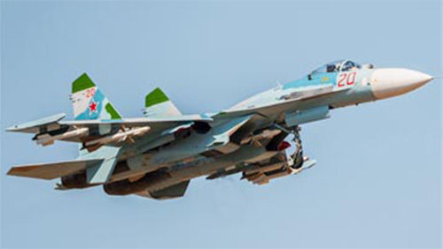

- Разработчик: ОКБ Сухого
- Страна: СССР
- Первый полет: 1977
- Тип: Многоцелевой истребитель
LTX
В авиационной истории 60-е гг. ознаменовались поступлением на вооружение ВВС основных авиационных держав мира сверхзвуковых истребителей, имевших при всех различиях в компоновке и полетной массе ряд объединяющих признаков. Они обладали скоростью, вдвое превышавшей звуковую, и потолком порядка 18-20 км, оснащались бортовыми радиолокационными станциями и управляемыми ракетами класса "воздух-воздух". Такое совпадение не было случайным, поскольку основной угрозой безопасности по обеим сторонам "железного занавеса" считались бомбардировщики, несущие ядерные бомбы. Соответственно формировались и требования к новым истребителям, основной задачей которых был перехват высотных скоростных неманевренных целей в любое время суток и в любых погодных условиях.
В результате в США, СССР и Западной Европе на свет появился ряд самолетов, которые впоследствии по совокупности компоновочных признаков и летно-технических характеристик отнесли ко второму поколению истребителей. Тезис об условности любой классификации подтвердил тот факт, что в одной компании с "вылизанными" аэродинамиками МиГ-21, "Миражом" III, "Старфайтером" и "Дракеном" оказались переделанный из учебного самолета легкий истребитель F-5 "Фридом Файтер" и тяжелый двухдвигательный двухместный F-4 "Фантом", прозванный самими американцами "победой грубых сил над аэродинамикой".
В погоне за высокой максимальной скоростью конструкторы пошли по пути внедрения крыльев с высокой удельной нагрузкой и тонким профилем, которые, безусловно, имели большие преимущества на сверхзвуке, но обладали серьезным недостатком -низкими несущими свойствами на малых скоростях. В результате, истребители второго поколения имели непривычно большие взлетные и посадочные скорости, неважной оказалась и маневренность. Но даже самые маститые аналитики тогда считали, что в будущем боевой самолет все больше будет походить на пилотируемую ракету многоразового применения. "Мы больше никогда не увидим воздушных боев, наподобие тех, что происходили в годы второй мировой войны..." - писал известный теоретик Камилл Ружерон. Время очень скоро показало, насколько суха теория, но до того, как в тактике истребителей наступил очередной крутой поворот, прошло еще несколько лет.
Пока же предстояло избавиться от основных недостатков второго поколения, а именно увеличить дальность и улучшить взлетно-посадочные характеристики для обеспечения базирования на слабо подготовленных аэродромах. Кроме того, непреклонно растущая цена истребителей диктовала необходимость уменьшения абсолютной численности парка с одновременным расширением функций самолетов. Качественного скачка не требовалось, хотя тактика воздушной войны уже менялась на глазах - широкое развитие зенитных управляемых ракет привело к отмиранию доктрины массированного вторжения бомбардировщиков на большой высоте. Основную ставку в ударных операциях все больше стали делать на тактические самолеты с ядерным оружием, способные прорывать рубеж ПВО на малой высоте.
Для противодействия им предназначались истребители третьего поколения - МиГ-23, "Мираж" F.1, J37 "Вигген". Их поступление на вооружение, наряду с модернизированными вариантами МиГ-21 и F-4, планировалось на начало 70-х. Одновременно по обеим сторонам океана начались проектные исследования по созданию истребителей четвертого поколения - перспективных боевых машин, которые составили бы основу военно-воздушных сил в следующем десятилетии.
Первыми к решению этой проблемы приступили в США, где еще в 1965 г. был поставлен вопрос о создании преемника тактического истребителя F-4C "Фантом". В марте 1966 г. там была развернута программа FX (Fighter Experimental). В течение нескольких лет концепция перспективного истребителя претерпела ряд существенных изменений. Наибольшее влияние на нее оказал опыт применения американской авиации но Вьетнаме, где тяжело вооруженные "Фантомы" имели преимущества в боях на больших и средних дистанциях, но постоянно терпели поражения от более легких и маневренных вьетнамских МиГ-21 в ближних воздушных боях.
Проектирование самолета по уточненным требованиям началось в 1969 г., в том же году истребителю было присвоено обозначение F-15. Дальше других работы по программе FX продвинулись у фирм "Макдон-нелл-Дуглас", "Норт Америкен", "Нортроп" и "Рипаблик". Победителем конкурса был признан проект "Макдоннелл-Дуглас", близкий по аэродинамической компоновке к советскому перехватчику МиГ-25, не имевшему тогда аналогов в мире по летным данным. 23 декабря 1969 г. фирме был выдан контракт на постройку опытных самолетов, и спустя 2.5 года, 27 июля 1972-го, летчик-испытатель И.Барроуз поднял ii первый полет прототип будущего "Игла" - опытный истребитель YF-15. В следующем году был облетан двухместный учебно-боевой вариант самолета, а в 1974 г. появились первые серийные истребители F-15A"Игл" и "спарки" TF-15A (F-15B).
За ходом выполнения программы FX внимательно следили в СССР. Информация, просачивавшаяся на страницы открытой зарубежной печати (а ее было не так уж и мало), а также сведения, поступавшие по каналам разведки, тщательно анализировались. Было ясно, что именно на F-15 придется ориентироваться при создании нового поколения советских истребителей, называемого теперь четвертым. Первые исследования в этом направлении в трех ведущих отечественных "истребительных" ОКБ - П.О.Сухого (Машиностроительный завод "Кулон"), А.И.Микояна (Московский машиностроительный завод "Зенит"), и А.С.Яковлева (Московский машиностроительный завод "Скорость") - начались в 1969-1970 гг., но велись они поначалу в инициативном порядке, без необходимого для их "легализации" указания "сверху". Наконец, в начале 1971 г. последовало решение Комиссии по военно-промышленным вопросам при Совете Министров СССР, а затем и соответствующий приказ министра авиационной промышленности о развертывании в Советском Союзе программы создания "Перспективного фронтового истребителя" (ПФИ), который стал бы ответом на появление в США самолета F-15.
Как и за океаном, советский истребитель нового поколения - ПФИ, называвшийся конструкторами между собой "анти-F-15", решено было создавать на условиях конкурса с участием ОКБ П.О.Сухого, А.И.Микояна и А.С.Яковлева. Стоит заметить, что Генеральный конструктор Павел Осипович Сухой не сразу согласился на участие в программе: несмотря на то, что специалисты именно его ОКБ первыми приступили к предварительным проработкам облика перспективного истребителя, создание самолета с заданными характеристиками при имеющемся в СССР уровне развития радиоэлектронного оборудования казалось ему крайне проблематичным. К тому же ОКБ было перегружено другими не менее актуальными темами: в начале 70-х гг. МЗ "Кулон" выпустил на испытания первые опытные образцы фронтового бомбардировщика (по терминологии того времени - самолета-штурмовика) Су-24, готовил к началу полетов дальний скоростной ракетоносец и разведчик Т-4 ("100"), полным ходом велись работы по созданию новых модификаций перехватчика Су-15 и истребителя-бомбардировщика Су-17, шло проектирование многорежимного стратегического ударного авиационного комплекса Т-4МС ("200"), войскового самолета-штурмовика Су-25, беспилотного летательного аппарата "Коршун". Наконец, под нажимом министерства, и начале 1971 г. П.О.Сухой распорядился начать разработку аванпроекта перспективного фронтового истребителя, получившего заводской шифр Т-10 и тогда еще секретное название Су-27.
В основу техническою предложения решено было положить первый вариант внешнего вида самолета, подготовленный к (февралю 1970 г. в отделе проектов ОКБ. руководимом Олегом Сергеевичем Самойловичем. Первые наброски компоновки нового истребителя были выполнены в ОКБ П.О.Сухого еще осенью 1969 г. Поначалу этим занимался -только один человек - конструктор отдела проектов Владимир Иванович Антонов. На основе проработок B.И.Aнтонова в отделе проектов и был подготовлен первый вариант компоновки Т-10. Его непосредственными авторами стали О.С.Самойлович, В.ИАнтонов и начальник бригады отдела проектов ВАНиколаенко. Главной особенностью самолета должно было стать истолкование так называемой интегральной аэродинамической компоновки, в соответствии с которой планер выполнялся в виде единого несущего корпуса из набора деформированных аэродинамических пр(х|)илей с плавным сопряжением крыла и фюзеляжа. Впервые интегральная компоновка была применена ОКБ П.О.Сухого при разработке проекта стратегического многорежимного самолета Т-4МС.
Впереди на несущий корпус истребителя "надстраивалась" головная часть фюзеляжа, включавшая носовой отсек с РЛС, кабину экипажа, нишу передней опоры шасси, подкабинный и закабинный отсеки оборудования, а под ним в задней части подвешивались две изолированные гондолы с турбореактивными двигателями, воздушными каналами и pегулируемыми воздухозаборниками, расположенными под центропланом. К мотогондолам крепились консоли цельноповоротного горизонтального и двухкилевого вертикального оперения, а также два подфюзеляжных гребня. Интегральная схема обеспечивала существенное повышение аэродинамического качества истребителя и позволяла организовать большие внутренние отсеки для размещения топлива и оборудования. Для реализации заданных летных характеристик в широком диапазоне высот и скоростей полета и углов атаки крылу нового истребителя придали оживальную ("синусоидальную") форму и снабдили его развитым корневым наплывом.
По расчетам разработчиков, наплыв должен был обеспечивать повышение несущих свойств самолета на больших углах атаки (более 8-10°) с одновременным увеличением момента тангажа на кабрирование. При наличии наплыва на больших углах атаки над крылом образовывалась устойчивая вихревая система из двух вихревых жгутов (один возникал на корневом наплыве и распространялся над крылом, второй - у передней кромки базового крыла). С увеличением углов атаки интенсивность вихревых жгутов возрастала, при этом на поверхности крыла под вихревым жгутом увеличивалось разрежение. а следовательно, повышалась подъемная сила крыла. Наибольший прирост разрежения располагался впереди центра тяжести самолета на части крыла, примыкающей к корневому наплыву в результате чего фокус смещался вперед и возрастал кабрирующий момент. Корневые наплывы оказывали также большое влияние на величины и распределение поперечных сил, что приводило к уменьшению дестабилизирующего воздействия головной части фюзеляжа.
Другой важнейшей особенностью Т-10 впервые в отечественной истребительной авиации должна была стать реализация концепции продольной статической неустойчивости самолета на дозвуковых скоростях полета с обеспечением его продольной балансировки в полете посредством автоматики четырехкратно резервированной электродистанционной системы управления (ЭДСУ). Идея замены традиционной механической проводки управления на ЭДСУ была уже использована ОКБ при создании самолета Т-4, испытания которого подтвердили правильность основных технических решений. Принятие концепции продольной статической неустойчивости (иначе - "электронной устойчивости") сулило серьезные преимущества: для балансировки самолета на больших углах атаки требовалось отклонение стабилизатора носком вверх, при этом его подъемная сила складывалась с подъемной силой крыла, что давало существенное улучшение несущих свойств истребителя при незначительном росте его сопротивления. Благодаря использованию интегральной статически неустойчивой компоновки Су-27 должен был обрести исключительные маневренные характеристики, позволяющие ему выполнять в воздухе эволюции, недоступные самолетам обычной схемы, и иметь большую дальность полета без подвесных баков.
Проблемы с компоновкой трехопорного шасси на этом первом варианте Т-10 вынудили разработчиков пойти на применение велосипедной схемы шасси, но с распределением нагрузок как в -традиционной трехопорной схеме, при этом основная (задняя) опора шасси убиралась в нишу центроплана, снабженную обтекателем, между гондолами двигателей, а дополнительные поддерживающие стойки размещались в обтекателях па консолях крыла между элероном и закрылком.
Продувки модели Т-10, выполненные в аэродинамической трубе Т-106 Центрального аэрогидродипамического института, дали обнадеживающие результаты: при умеренном удлинении крыла (3-2) было получено аэродинамическое качество 12.6. Несмотря на это, специалисты ЦАГИ настойчиво рекомендовали не использовать на перспективных истребителях интегральную компоновку. Здесь сказывался определенный консерватизм тогдашних руководителей института, ссылавшихся и на информацию из-за рубежа (F-15 ведь строился по классической схеме!). В связи с этим, в какой-то степени в качестве подстраховочного, и с оглядкой на F-15, во второй половине 1971 г. в бригаде отдела проектов ОКБ П.О.Сухого, возглавляемой А.М.Поляковым, под руководством А.И.Андрианова был проработан второй вариант компоновки Т-10 по традиционной схеме, с обычным фюзеляжем, высокорасположенным крылом, боковыми воздухозаборниками и двумя двигателями, установленными рядом в хвостовой части. По форме крыла в плане и схеме оперения этот вариант в целом соответствовал варианту с интегральной компоновкой.
Испытания моделей Т-10, выполненных по традиционной схеме, не выявили никаких преимуществ перед исходной компоновкой. Со временем в ЦАГИ поняли безосновательность своих опасений, и институт стал убежденным сторонником интегральной схемы. Позднее, в процессе углубленной проработки Т-10, в ОКБ было создано и испытано в аэродинамических трубах ЦАГИ значительное количество других вариантов компоновки истребителя (общим числом свыше 15), отличавшихся, главным образом, размещением двигателей, воздухозаборников и схемами шасси. Стоявший у истоков создания истребителя В.ИАнтонов вспоминает, что Су-27 в шутку называли "самолетом изменяемой компоновки". Примечательно, что в итоге предпочтение было отдано самому первому варианту - с интегральной компоновкой, изолированными мотогондолами, продольной статической неустойчивостью и ЭДСУ. Изменения коснулись, в основном, только схемы шасси и обводов планера (из технологических соображений пришлось отказаться от широкого применения поверхностей двойной кривизны).
В том, что Су-27 состоялся именно в таком варианте компоновки - большая заслуга Генерального конструктора П.О.Сухого. Несмотря на серьезные возражения сторонников традиционной схемы (а таких было немало), еще на самых ранних стадиях проектирования Павлу Осиповичу хватило мужества принять решение использовать при создании Су-27 самые передовые новинки аэродинамики, динамики полета и авиационного конструирования -такие, как интегральная компоновка, статически неустойчивая схема, электродистанционная система управления и т.п. По его мнению, учитывая реальное состояние дел в СССР в области авиационного радиоэлектронного оборудования и. в первую очередь, массогабаритные характеристики имеющихся и перспективных бортовых радиолокационных станций с большой дальностью действия, а также бортовых вычислительных систем, только с использованием этих нетрадиционных решений можно было создать самолет, не уступающий по характеристикам лучшим зарубежным аналогам. Время показало его правоту.
ПРОГРАММА ПФИ
В 1971 г. были сформулированы первые тактико-технические требования (ТТТ) ВВС к перспективному фронтовому истребителю ПФИ. К этому времени в СССР стали известны требования к новому американскому истребителю F-15. Они и были взяты за основу при разработке ТТТ к ПФИ. при этом предусматривалось, что советский истребитель должен превосходить американский аналог по ряду основных параметров на 10%. Ниже приведены некоторые характеристики, которыми, согласно тактико-техническим требованиям ВВС, должен был обладать ПФИ:
- максимальное число М полета - 235-2.5;
- максимальная скорость помета на высоте более 11 км- 2500-2700 км/ч:
- максимальная скорость полета у земли - 1400-1500 км/ч;
- максимальная скороподъемность у земли - 300-350 м/с;
- практический потолок -21 -22 км;
- дальность напета без ПТБ у земли - 1000 км:
- дальность полета без ПТБ ни большой высоте -2500 км;
- максимальная эксплуатационная перегрузка 8-9;
- время разгона от 600 км/ч до 1100 км/ч - 12-14 с;
- время разгона от 1100 км/ч до 1300 км/ч - 6-7 с;
- стартовая тяговооруженность - 1.1-1.2.
В качестве основных боевых задач ПФИ определялось:
уничтожение истребителей противника в ближнем воздушном бою с применением управляемых ракет (УР) и пушки;
перехват воздушных целей на большой дальности при наведении с земли или автономно с помощью радиолокационного прицельного комплекса и ведение воздушного боя на средних дистанциях с применением управляемых ракет;
прикрытие войск и объектов производствен-ной инфраструктуры от нападения с воздуха;
противодействие средствам воздушной разведки противника:br
сопровождение самолетов дальней и разведывательной авиации и защита их от истребителей противника;
ведение воздушной разведки;
уничтожение малоразмерных наземных целей в условиях визуальной видимости с применением бомб, неуправляемых ракет и пушек
Поражение воздушных целей должно было выполняться на средних и малых дистанциях, в свободном пространстве и на фоне земли, днем и ночью, в простых и сложных метеоусловиях, при использовании противником активных и пассивных помех. Для этого ПФИ предстояло оснастить многорежимной бортовой радиолокационной станцией, которую предполагалось создать на базе РЛС "Сапфир-2 ЗМЛ" проектировавшегося в то время модернизированного истребителя МиГ-23МЛ, и оптико-электронной прицельной системой на основе следящего теплопеленгатора и оптико-телевизионного визира. В состав вооружения перспективного истребителя предлагалось включить ракеты средней дальности К-2 5 с полуактивными радиолокационными головками самонаведения (ПАРГС), создававшиеся в то время на МЗ "Вымпел" по схеме американской УР AIM-7E "Спарроу", или аналогичные им советские К-23, применяемые на истребителях 3-го поколения МиГ-23М, а также ракеты ближнего воздушного боя (РБВБ) К-60 с тепловыми головками самонаведения (ТГС) и двухствольную пушку калибра 30 мм.
Основными соперниками ПФИ в воздушном бою считались американские перспективные истребители F-15 фирмы "Макдоннелл-Дуглас", Р.53О и YF-17 (Р.600) фирмы "Нортроп" (позднее вместо двух последних стал рассматриваться F-16 фирмы "Дженерал Дайнемикс"). В качестве типовых воздушных целей для перехвата рассматривались американские тактические истребители F-4E и F-111A, западноевропейские истребители-бомбардировщики MRCA ("Торнадо") и "Ягуар", а также китайские J-6 (копии устаревших советских истребителей МиГ-19, в большом количестве входившие в состав ВВС КНР).
Предполагалось, что одной из основных отличительных особенностей ПФИ, по сравнению с истребителями предыдущего поколения (МиГ-23, Су-15), обеспечивающей успешное решение боевых задач, станет высокая маневренность самолета. Требование высокой маневренности в воздушном бою планировалось реализовать за счет использования мощных, легких и экономичных двигателей 4-го поколения, которые обеспечивали бы истребителю тяговооруженность более 1, а также применения компоновочных схем самолета с повышенным аэродинамическим качеством.
Аванпроект самолета Су-27, в целом удовлетворявшего ТТТ ВВС к ПФИ, был разработан в ОКБ П.О.Сухого во второй половине 1971 г. В нем были рассмотрены два варианта компоновки истребителя - интегральная и классическая, разработанные в двух бригадах отдела проектов (начальники бригад ВАНиколаенко и А.М.Поляков, руководители работ В.ИАнтонов и А.И.Андрианов соответственно) и получившие условные наименования Т-101 иТЮ-2 (не путать с названиями первых опытных самолетов Су-27, появившихся в 1977-1978 гг.!).
Представленный в аванпроекте вариант самолета, выполненного по интегральной схеме, в целом соответствовал первому внешнему виду Т-10, подготовленному в отделе проектов в начале 1970 г. Он также предусматривал плавное сопряжение крыла и фюзеляжа, применение изолированных гондол двигателей с воздухозаборниками под центропланом и двухкилевого оперения. В головной части фюзеляжа размещались носовой отсек (в котором устанавливались РЛС и оптико-электронная прицельная система с подфюзеляжным размещением оптического блока), кабина экипажа, ниша передней опоры шасси, подкабинный и закабинный отсеки оборудования. В средней части фюзеляжа, выполненной в виде одного целого с центропланом, располагались основные топливные баки, ниши основных опор шасси, а под ней - средние части гондол двигателей с воздушными каналами. Хвостовая часть фюзеляжа включала мотоотсеки двигателей и центральную балку с отсеками самолетного оборудования.
Крыло оживальной формы с плавным изменением угла стреловидности по передней кромке от наплыва к законцовке (угол стреловидности базового крыла 45°, удлинение 3.38, сужение 6.57) и значительной аэродинамической круткой оснащалось односекционными закрылками и элеронами. Механизация передней кромки предусмотрена не была. Консоли цельно-поворотного горизонтального оперения имели косые оси вращения и устанавливались по бокам мотогондол ниже плоскости крыла. Вертикальное оперение включало два киля с рулями направления, закрепленные со значительным углом развала на мотогондолах, и два подфюзеляжных гребня (по бокам мотогондол). На верхней поверхности хвостовой части фюзеляжа между гондолами двигателей размещался тормозной щиток. Расположенные под центропланом воздухозаборники прямоугольного сечения с горизонтальным клином торможения выполнялись регулируемыми с помощью передней и задней подвижных панелей и снабжались створками подпитки на боковых стенках. Для слива пограничного слоя верхняя стенка воздухозаборника была отодвинута от нижней поверхности центроплана, где был организован клин слива.
Шасси выполнялось по трехопорной схеме (это было одно из основных отличий компоновки Т-101 от первого внешнего вида). Вынесенная вперед разгруженная носовая стойка шасси, снабженная одним колесом, убиралась в нишу фюзеляжа назад по полету. Основные опоры шасси с двухколесными тележками, выполненными по схеме "тандем", убирались в ниши средней части фюзеляжа между мотогондолами. Недостатком такой схемы была относительно небольшая колея шасси (всего около 1.8 м). Для размещения вооружения было предусмотрено 6 точек подвески под крылом и по одной - под воздушными каналами двигателей. Длина самолета составляла 18.5 м, размах крыла - 12.7 м, площадь крыла - 48 м2, высота самолета на стоянке - 5.2 м.
Представленный в аванпроекте вариант Т-10, выполненный по традиционной схеме, представлял собой высокоплан с боковыми воздухозаборниками, двумя двигателями в хвостовой части фюзеляжа и двухкилевым оперением. Как и у варианта интегральной схемы, в головной части фюзеляжа размещались носовой отсек РЛС и оптико-электронной прицельной системы (с датчиками под носовой частью), кабина экипажа, подкабинный и закабинный отсеки оборудования, ниша передней опоры шасси (в закабинном отсеке). В средней части фюзеляжа располагались основные топливные баки, а по бокам - воздухозаборники, переходившие в воздушные каналы двигателей. Под воздушными каналами были скомпонованы ниши основных опор шасси, а под правым каналом, впереди ниши шасси - отсек встроенной пушечной установки. Хвостовая часть фюзеляжа представляла собой два мотоотсека, в которых устанавливались рядом, вплотную друг к другу, два двигателя с нижним расположением коробок самолетных агрегатов, разделенные противопожарной перегородкой.
Крыло с плавным изменением угла стреловидности по передней кромке имело удлинение 2.8 и сужение 4.25. Механизация крыла включала две секции закрылков и отклоняемые носки, для управления по крену использовались элероны. По компоновке хвостового оперения самолет практически полностью соответствовал варианту интегральной схемы, только консоли стабилизатора, также расположенного ниже плоскости крыла, имели значительный угол отрицательного поперечного V (-6°). Боковые воздухозаборники прямоугольного сечения с горизонтальным клином торможения выполнялись регулируемыми с помощью передней и задней подвижных горизонтальных панелей и снабжались створками подпитки на боковых стенках. Для слива пограничного слоя боковая стенка воздухозаборника была отодвинута от борта фюзеляжа, где был организован клин слива.
Трехопорное шасси включало переднюю двухколесную опору, убиравшуюся в нишу закабинного отсека головной части фюзеляжа, и основные опоры с тремя установленными на одной оси колесами небольшого диаметра, убиравшиеся назад по полету в отсеки фюзеляжа под воздушными каналами двигателей. Применение такой схемы позволило увеличить, по сравнению с вариантом интегральной компоновки, колею шасси (до 3 м), однако полностью убрать колеса в ниши также не удалось, поэтому были предусмотрены выступающие в поток обтекатели ниш. Для размещения вооружения на самолете имелось 6 точек подвески под крылом и две точки под средней частью фюзеляжа. Длина самолета составляла 17.3 м, размах крыла - 11.6 м, площадь крыла - 47.4 м2.
Нормальная взлетная масса обоих вариантов Т-10 оценивалась в 18000 кг. В соответствии с заданной стартовой тяговооруженностью 1.15, тяга двигателей должна была составить 10300-10400 кгс. В начале 70-х гг. двухконтурные турбореактивные двигатели такого класса тяги разрабатывались в трех моторостроительных ОКБ: МЗ "Сатурн" (Генеральный конструктор А.МЛюлька), Пермском моторостроительном КБ (главный конструктор П.А.Соловьев) и ММЗ "Союз" (Генеральный конструктор С.К.Туманский). Характеристики трех таких двигателей, имевших названия соответственно АЛ-31Ф, Д-ЗОФ-9 и Р59Ф-ЗОО, и были положены в основу расчета летно-технических характеристик Т-10. Окончательный выбор типа применяемых на Т-10 двигателей решено было сделать после защиты аванпроекта на основании заключения ведущего отраслевого института по данной тематике - Центрального института авиационного моторостроения (ЦИАМ).
В состав вооружения обоих вариантов Су-2 7 на этапе аванпроекта были включены две ракеты средней дальности К-2 5 с полуактивными радиолокационными головками самонаведения и 6 ракет ближнего боя К-60 с тепловыми головками самонаведения. Боекомплект встроенной двухствольной пушки АО-17А калибра 30 мм составлял 250 патронов. Бортовое радиоэлектронное оборудование Су-27 включало систему управления вооружением (СУВ), навигационный и пилотажный комплексы, бортовой комплекс обороны, аппаратуру связи и государственного опознавания. В состав системы управления вооружением входили бортовая радиолокационная станция "Сапфир-23МР" (С-23МР), имевшая дальность обнаружения воздушных целей 40-70 км в свободном пространстве и 20-40 км на фоне земли (в передней и задней полусферах), оптико-электронная прицельная система (комбинация следящего теплопеленгатора и оптико-телевизионного визира), нашлемная система целеуказания, два вычислителя - аналоговый АВМ-23 и цифровой "Орбита-20", система управления оружием, аппаратура сопряжения и т.п. Отображение информации от РЛС и ОЭПС должно было осуществляться на индикаторе на электронно-лучевой трубке.
В состав навигационного комплекса входили: аппаратура инерциальной курсовертикали ИКВ-72, доплеровский измеритель скорости и угла сноса "Поиск", система воздушных сигналов, радиотехническая система ближней навигации "Радикал", автоматический радиокомпас, самолетный ответчик СО-72, навигационный вычислитель "Маневр" и навигационный картографический планшет. Пилотажный комплекс включал систему автоматического управления, радиовысотомер и пилотажные приборы. Отображение пилотажной информации осуществлялось также на индикаторе на фоне лобового стекла. Бортовой комплекс обороны состоял из станции предупреждения об облучении (станции радиотехнической разведки) "Бере-за-П", теплопеленгатора пуска ракет "Пион-Л", станции обнаружения лазерного облучения, станции активных радиолокационных помех "Герань-Ф" и цифрового вычислителя. В состав аппаратуры связи и госопознавания входили две связные радиостанции -"Журавль-30" (УКВ диапазона) и "Журавль-К" (KB диапазона), аппаратура засекречивания переговоров, командная радиолиния управления "Радуга-Борт" для наведения самолета на цель с наземного командного пункта, запросчик и ответчик системы государственного опознавания, речевой информатор и др.
На основе расчетов основных характеристик самолета, выполненных в ОКБ с использованием исходных данных по двигателю АЛ-31Ф (тяга 10300 кгс), ожидаемых весовых характеристик комплектующих изделий бортового радиоэлектронного оборудования и результатов продувок моделей Т-10 в аэродинамических трубах ЦАГИ, в аванпроекте приводились следующие основные данные самолета (для варианта с интегральной компоновкой, с расчетным боекомплектом из двух ракет К-25, шести ракет К-60 и полным боезапасом пушки):
- нормальная взлетная масса (без ПТБ) -18000 кг; -максимальная взлетная масса (с ПТБ) - 21000 кг;
- максимальная скорость полета на высоте 11 км- 2500 км/ч;
- максимальная скорость полета у земли - 1400 км/ч;
- практический потолок с 5096 остатком топлива-22500м;
- максимальная скороподъемность у земли с 50% остатком топлива - 345 м/с;
- максимальная эксплуатационная перегрузка с 50% остатком топлива - 9;
- время разгона на высоте 1000 м с 50% остатком топлива: - от 600 до 1100 км/ч -125 с; -от 1100до 1300км/ч -6с;
- практическая дальность полета у земли со средней скоростью 800 км/ч: - без ПТБ - 800 км; - с ПТБ -1400 км;
- практическая дальность полета на большой высоте с крейсерской скоростью: - без ПТБ - 2400 км; - с ПТБ - 3000 км;
- длина разбега на грунтовой ВПП: - без ПТБ - 300 м; - с ПТБ-500 м;
- длина пробега с использованием тормозного парашюта - 600 м.
В связи с тем, что полученные расчетным путем характеристики дальности Су-27 несколько уступали требованиям ВВС, в аванпроекте были сформулированы предложения по приведению их в соответствие ТТТ. В число таких мероприятий входили: увеличение внутреннего запаса топлива и взлетной массы (до 18800 кг), снижение удельного веса разрабатываемого двигателя (с 0.12 до 0.1) при сохранении его тяги, уменьшение расчетного боекомплекта ракет К-60 с 6 до 4, использование изделий бортового оборудования с меньшей массой. Кроме того, для повышения боевой эффективности истребителя предлагалось в перспективе оснащать его ракетами средней дальности нового поколения (типа К-27) и модернизированными ракетами ближнего боя К-60М.
В 1972 г. состоялось заседание объединенного Научно-технического совета (НТС) Министерства авиационной промышленности (МАП) и ВВС, на котором рассматривалось состояние работ по перспективным истребителям в рамках программы ПФИ. С докладами выступили представители всех трех конструкторских бюро. От имени ММЗ "Зенит" им. А.И.Микояна докладывал Г.ЕЛозино-Лозинский, предъявивший комиссии проект истребителя МиГ-29 (еще в варианте классической компоновки, с высокорасположенным трапециевидным крылом, боковыми воздухозаборниками и однокилевым хвостовым оперением). МЗ "Кулон" представил на НТС аванпроект Су-27, причем основное внимание докладчик О.ССамойлович уделил варианту с интегральной компоновкой (на плакатах был показан и второй, "запасной" вариант Су-27 - классической схемы). От ММЗ "Скорость" выступал Генеральный конструктор АСЯковлев с проектами легкого истребителя Як-45И (на базе легкого штурмовика Як-45) и тяжелого истребителя Як-47. Оба являлись развитием схемы сверхзвукового перехватчика Як-33 с крылом переменной стреловидности и установленными на месте излома его передней кромки гондолами двигателей с лобовыми воздухозаборниками и отличались друг от друга в основном только размерами и массой.
Спустя два месяца состоялось второе заседание НТС. Состав участников не изменился, однако ОКБ им. А.И.Микояна представило принципиально новый проект истребителя МиГ-29, выполненного теперь уже по интегральной схеме и имевшего меньшую размерность (нормальная взлетная масса 12800 кг). По итогам двух заседаний НТС ОКБ А.С.Яковлева выбыло из конкурса по причине необходимости доработки аэродинамической схемы для обеспечения безопасности продолжения полета истребителя при отказе одного из установленных на крыле двигателей, двум же другим участникам предстоял "третий тур".
И здесь руководство ММЗ "Зенит" им. А.И.Микояна предложило другой вариант решения проблемы - разделить программу ПФИ на две отдельные программы, в рамках которых можно было бы продолжить создание как самолета Су-27 (в качестве тяжелого перспективного многоцелевого фронтового истребителя), так и МиГ-29 (в качестве легкого перспективного фронтового истребителя), обеспечив унификацию обоих самолетов по ряду систем оборудования и вооружению. В качестве аргумента были приведены первые результаты развернутых в 1971 г. институтами промышленности и заказчика исследований по формированию концепции построения парка истребительной авиации (ИА) ВВС страны 80-х гг. на основе двух типов истребителей - тяжелого и легкого, подобно тому, как это планировали сделать ВВС США.
Сделаем небольшое отступление. В начале 70-х гг., когда еще только велась постройка первых опытных образцов YF-15, командование ВВС США пришло к выводу, что для более эффективного использования тактической авиации целесообразно иметь в ее составе как тяжелые и дорогостоящие истребители взлетной массой 19-20 т с мощным вооружением и совершенным бортовым оборудованием типа F-15, гак и значительно более легкие и дешевые самолеты массой 9-10 т с менее сложным оборудованием, ограниченным боекомплектом (только ракеты малой дальности и пушка), но обладающие более высокой маневренностью. В результате, в январе 1972 г. было объявлено о начале программы LWF (Light Weight Fighter), в рамках которой предполагалось создать истребитель, который находился бы в одном классе с МиГ-21.
Уже спустя месяц пять фирм представили свои предложения, из которых для дальнейшей проработки были выбраны проекты "Дженерал Дайнемико и "Нортроп". В апреле 1972 г. с обеими фирмами был заключен контракт на разработку и изготовление опытных образцов истребителей, обозначенных соответственно YF-16 и YF-17, с целью проведения их сравнительных испытаний и выбора одного из них для серийного выпуска. По результатам летных испытаний YF-16 и YF-17, начатых в 1974-м, к производству был принят самолет фирмы "Дженерал Дайнемикс" (опыт, полученный при создании YF-17, позднее был использован при разработке многоцелевого палубного истребителя F/A-18). Одноместный легкий тактический истребитель F-16A поступил в массовое производство в 1978 г.
В исследованиях, проводившихся в 11ИИ автоматических систем Минавиапрома (НИИАС МАП, ныне Государственный НИИ авиационных систем, ГосНИИАС) и Центральном НИИ авиационной и космической техники № 30 Министерства Обороны (30 ЦНИИ АКТ МО), было показано, что круг задач, возлагаемых на истребители, и способов их решения традиционно весьма широк. В идеале для решения каждой конкретной боевой задачи необходим специализированный тип истребителя с определенной системой вооружения. Так, для перехвата самолетов ударной авиации -требуется жесткая связь истребителя с наземными средствами наведения при действии над своей территорией и максимум автономности при действии за линией боевого соприкосновения (ЛВС); самолет должен располагать большой скороподъемностью и хорошими разгонными характеристиками, мощным ракетным вооружением и бортовым оборудованием, позволяющим производить обнаружение целей как в свободном пространстве, так и на фоне земли. Для решения задач сопровождения истребитель должен иметь большую дальность полета. Для ведения ближнего воздушного боя ему необходимы высокие маневренность и тяговооружен-ность, широкий диапазон скоростей, специфические виды вооружения (всеракурсные ракеты малой дальности, ракеты ближнего маневренного боя и т.п.).
Удовлетворить столь противоречивым требованиям в проекте одного самолета представлялось вряд ли возможным. С другой стороны, ограниченность средств не позволяла иметь в составе ВВС несколько типов специализированных истребителей одновременно. Компромиссным решением могло бы стать построение парка ИА вооруженных сил страны на базе двух типов самолетов: сложного универсального тяжелого перспективного фронтового истребителя (ТПФИ), способного действовать автономно и в составе группы на достаточной оперативно-тактической глубине (250-300 км) над чужой территорией -аналога F-15, и легкого перспективного фронтового истребителя (ЛПФИ), предназначенного для действий над своей территорией и в пределах тактической глубины (100-150 км за ЛВС) - аналога F-16.
ТПФИ должен был располагать большим запасом топлива и боекомплектом, включающим не менее четырех ракет "воздух-воздух" средней дальности и оружие ближнего боя (ракеты и пушки), совершенными системами навигации, обороны и связи; при специальной комплектации оборудования и вооружения он мог бы использоваться также в войсках ПВО страны. ЛПФИ, напротив, должен был стать простым в изготовлении и эксплуатации, не предъявлять высоких требований к подготовке летного и обслуживающего персонала, аэродромам базирования; его боекомплект мог бы быть ограничен двумя ракетами средней дальности и оружием ближнего боя (ракеты малой дальности и пушка). При обеспечении соотношения стоимостей ЛПФИ и ТПФИ в серийном производстве 1:2 построение перспективного парка ИА на базе двух типов самолетов (70% ЛПФИ и 30% ТПФИ) обеспечивало бы максимум его эффективности (по критерию "эффективность-стоимость").
Предложение ММЗ "Зенит" было принято, и оба ОКБ тем самым были избавлены от необходимости участия в изнурительной гонке за получением выгодного заказа. Таким образом, конкурс себя исчерпал, и летом 1972 г. вышли приказы министра авиационной промышленности, "узаконившие" продолжение разработки обоих истребителей - Су-27 и МиГ-29.
РОЖДЕНИЕ CУ-27
В соответствии с приказом МАП, ОКБ П.О.Сухого во второй половине 1972 г. приступило к углубленной проработке аванпроекта, а затем и созданию эскизного проекта самолета Т-10. В связи с необходимостью расширения фронта работ, проектирование Су-27 в феврале 1973 г. было передано в конструкторскую бригаду, возглавляемую Леонидом Ивановичем Бондаренко. В конце года у темы появился и главный конструктор. Им стал Наум Семенович Черняков, до этого руководивший созданием самолета Т-4 ("100"), проектированием Т-4МС ("200") и ДПЛА "Коршун".
Как уже отмечалось, помимо основного и "подстраховочного" (неинтегрального) вариантов компоновки в ОКБ П.О.Сухого в 1970-1975 гг. было проработано значительное количество альтернативных схем самолета. Основное внимание было уделено поиску оптимальных схем шасси и воздухозаборников. Было ясно, что предложенная в первоначальном варианте компоновки велосипедная схема шасси не имеет будущего на перспективном истребителе, а представленная в аванпроекте трехопорная схема не обеспечивает достаточную для безопасной эксплуатации колею. В результате рассмотрения ряда вариантов было принято решение "спрятать" основные опоры в специальные обтекатели на стыке центроплана и воздушных каналов двигателей. Ближе к хвостовой части самолета эти обтекатели переходили в обтекатели узлов навески горизонтального оперения и гидравлических рулевых агрегатов стабилизатора.
Обтекатели основных опор шасси впервые появились на варианте компоновки Т-10 с так называемым пакетным размещением воздухозаборников и максимально сближенными друг к другу гондолами двигателей (по типу самолета Т-4). Такая схема не получила развития из-за значительно сократившихся внутренних объемов планера для размещения топлива. Прорабатывался и вариант с круглыми воздухозаборниками с центральным телом - полуконусом. И хотя на испытаниях были получены неплохие характеристики таких воздухозаборников, к реализации был принят вариант, близкий к исходному - с воздухозаборниками прямоугольного сечения и горизонтальным расположением клина торможения и регулируемых панелей.
Одной из наиболее сложных задач в процессе разработки Су-27 стало выдерживание весовых лимитов. Снижению массы конструкции самолета придавалось первоочередное значение. Еще на ранних стадиях разработки Т-10 начальником отдела проектов О.С.Самойловичем были получены неутешительные данные по увеличению взлетной массы истребителя при использовании новых систем оборудования: расчеты показывали, что увеличение массы бортового радиоэлектронного оборудования на 1 кг влекло за собой увеличение взлетной массы всего самолета на целых 9 кг! Для двигателя и самолетных систем эти показатели составляли соответственно 4 и 3 кг. Было ясно, что без всемерного облегчения конструкции взлетная масса истребителя может выйти за все мыслимые пределы, и необходимые летные характеристики достигнуты не будут. Вопросами соблюдения высокой весовой культуры занимался первый заместитель Генерального конструктора Евгений Алексеевич Иванов, лично тщательно следивший за разработкой практически каждого узла конструкции, где имелись резервы для снижения массы. Именно Е.А.Иванов дал указание заместителю главного конструктора по прочности Н.С.Дубинину выполнять прочностной расчет Су-27 из условия действия на него нагрузок, составляющих 85% от расчетных, с возможным последующим усилением конструкции по результатам статических испытаний.
Кроме того, удалось убедить заказчика на уточнение ТТТ в части максимальной эксплуатационной перегрузки с полной заправкой топливных баков. Дело в том, что первый вариант требований к Су-27 предусматривал примерно 10-процентное превосходство нового истребителя над американским аналогом. Таким образом, если дальность полета F-15 без подвесных топливных баков составляла 2300 км, то для Су-27 требовалось получить 2500 км, на что при заданных расходных характеристиках силовой установки было необходимо около 5.5 т топлива. Углубленная проработка конструкции Су-27 показала, что интегральная компоновка планера самолета выбранной размерности позволяет разместить в нем почти 9 т керосина. По существовавшим в СССР нормам прочности за расчетную полетную массу самолета принималась масса с 80% остатком от полной заправки топливом. Естественно, что для достижения той же перегрузки с большей на 3-5 т полетной массой требовалось значительное усиление, а следовательно, и утяжеление конструкции. Требуемой же дальности самолет должен был достигать и при неполной заправке баков. Вместе с тем отказываться от "лишних" почти 1500 км дальности, которые обеспечивал полный запас топлива, помещавшийся во внутренние объемы разработанной интегральной компоновки, казалось суховцам нецелесообразным.
В результате при поддержке руководства службы вооружения ВВС - заместителя главнокомандующего ВВС по вооружению генерал-полковника авиации М.Н.Мишука, начальника научно-технического комитета ВВС генерал-лейтенанта авиации Г.С.Кириллина и начальника управления заказов генерал-лейтенанта авиации В.Р.Ефремова - было найдено компромиссное решение. ТТТ к самолету Су-27 разделили на две части:
с основным (неполным) вариантом заправки (около 5.5 т), при котором обеспечивалась требуемая дальность полета (2500 км) и все остальные летные характеристики, включая максимальную эксплуатационную перегрузку (8);
с полным запасом топлива (около 9 т), при котором обеспечивалась максимальная дальность полета (4000 км), а максимальная эксплуатационная перегрузка ограничивалась исходя из сохранения постоянным произведения полетной массы и перегрузки.
Таким образом, вариант полной заправки стал рассматриваться как вариант со своеобразным "внутренним подвесным баком". Разумеется, никто не требовал от истребителя с ПТБ иметь такие же маневренные характеристики, как у самолета без подвесных баков. Тем самым, с одной стороны, удалось избежать перетяжеления конструкции из условий обеспечения прочности, а с другой стороны, получить дальность полета без реальных подвесных баков даже большую, чем у других истребителей с ПТБ, вынесенными в поток.
Большие перспективы для снижения массы конструкции имело использование композиционных материалов на основе углепластиков. На МЗ "Кулон" специально был построен цех по изготовлению деталей из композитов, однако еще до сборки первых опытных образцов самолета от широкого применения композиционных материалов в конструкции Су-27 отказались из-за нестабильности их характеристик. Кстати, создателям МиГ-29 также пришлось столкнуться с этим коварным свойством композитов, только произошло это значительно позже. Уже в процессе эксплуатации на "мигах" стали наблюдаться случаи разрушения композиционных конструкций. Пришлось срочно заменять композиты в ряде агрегатов МиГ-29 (например, воздушных каналах двигателей и отклоняемых носках крыла) на традиционные алюминиевые сплавы. В результате на Су-27 композиционные материалы нашли применение в основном только в конструкции обтекателей различных радиоэлектронных устройств.
Снизить массу самолета помогло широкое внедрение титановых сплавов и освоение прогрессивных технологий, в первую очередь, сварки титановых деталей в среде аргона, а также химического фрезерования, формообразования с эффектом сверхпластичности металла и т.п. В процессе рабочего проектирования были разработаны, а затем изготовлены при постройке опытных образцов Т-10 уникальные сварные титановые конструкции - панели центроплана, хвостовой части фюзеляжа, силовые шпангоуты и др. Только использование титановых панелей центроплана снизило массу конструкции планера более чем на 100 кг. Значительный вклад в освоение новых технологических процессов в опытном производстве ОКБ П.О.Сухого, переданных затем на серийный завод, внесли директор МЗ "Кулон" А.С.Зажигип, главный инженер Г.Т.Лебедев, главный сварщик В.В.Редчиц, заместитель главного инженера В.В.Тареев, начальник производства А.В.Курков и другие.
К 1975 г. работы по эскизному проектированию Су-27 были завершены, были сформированы аэродинамическая и конструктивно-силовая схемы самолета, найдены основные конструктивные решения, и можно было приступать к выпуску рабочих чертежей и постройке опытных образцов. Спустя год, в 1976-м, наконец вышло постановление ЦК КПСС и Совета Министров СССР о создании самолета Су-27 - основной в Советском Союзе документ в "биографии" любого летательного аппарата. Итак, что же представлял собой перспективный фронтовой истребитель Т-10?
Аэродинамическая компоновка истребителя была произведена по нормальной схеме, в соответствии с которой горизонтальное оперение площадью 12.63 м2 разместили за крылом по внешним сторонам гондол двигателей; двухкилевое вертикальное оперение плошадью 14.0 м2 устанавливалось на мотогондолах без развала. Консоли крыла оживальной формы, с плавным изменением угла стреловидности по передней кромке (угол стреловидности базового крыла 41 град. ), через зону наплыва плавно сопрягались с фюзеляжем, образуя единый несущий корпус. Крыло имело ярко выраженную аэродинамическую крутку и неподвижный отогнутый вниз носок. Управление самолетом должно было осуществляться с помощью цельноповоротного стабилизатора, консоли которого могли отклоняться дифференциально, элеронов и рулей направления. Механизация крыла включала поворотные закрылки площадью 2.28 м2. Консоли крыла и горизонтального оперения, а также кили снабжались противофлаттерными грузами.
В головной части фюзеляжа были оборудованы отсек бортовой радиолокационной станции, прикрытой радиопрозрачным обтекателем, кабина с фонарем, обеспечивающим летчику хороший обзор во все стороны, и закабинный отсек оборудования. Под кабиной размещалась ниша уборки передней опоры шасси. Фонарь кабины состоял из неподвижного беспереплетного козырька и сдвижной назад части. Пилот размещался в кабине на унифицированном катапультном кресле К-ЗбДМ, разработанном на МЗ "Звезда" (пос. Томилино Московской области, главный конструктор Г.И.Северин) и обеспечивающем надежное спасение летчика в широком диапазоне скоростей и высот полета, включая режимы движения самолета по аэродрому со скоростью от 70 км/ч. Перед кабиной по оси самолета размещался оптический блок оптико-локационной станции.
Два турбореактивных двигателя устанавливались в изолированных гондолах, подвешиваемых под несущим корпусом и разнесенных в стороны от оси самолета, при этом между гондолами на нижней поверхности несущего корпуса обеспечивалась установка пусковых устройств для ракет "воздух-воздух". Для получения оптимальных характеристик силовой установки во всем диапазоне высот и скоростей поле-га воздухозаборники двигателей, размещенные под центропланом и имевшие горизонтальный клин торможения, были выполнены регулируемыми с помощью подвижных панелей и снабжены специальными отверстиями для перепуска воздуха. Верхняя стенка воздухозаборника была отодвинута от нижней поверхности центроплана, за счет чего образовывалась щель для слива пограничного слоя.
Шасси было спроектировано по классической трехопорной схеме, при этом переднюю опору для обеспечения действия на нее относительно невысоких нагрузок вынесли далеко вперед: база шасси составляла 903 м. Передняя опора состояла из стойки рычажного типа и одного колеса, снабженного грязезащитным щитком, препятствующим попаданию посторонних предметов в воздухозаборники двигателей. Передняя опора убиралась в нишу под кабиной летчика назад по полету, при этом ниша закрывалась двумя створками - передней, установленной перед стойкой, и боковой. Основные опоры шасси, представлявшие собой одноколесные телескопические стойки с подкосом, выполнили убирающимися с разворотом колес в ниши обтекателей шасси в центроплане вперед по полету. Каждая ниша закрывалась двумя створками - передней и боковой, при этом передние створки одновременно выполняли роль воздушных тормозных щитков площадью 2.05 м2. Колея шасси составляла 5.01 м, размеры колес основных опор шасси -1030x350 мм.
Для подвески управляемого ракетного вооружения "воздух-воздух" на самолете было предусмотрено 8 узлов: два под центропланом между гондолами двигателей (по схеме "тандем"), по два - под каждой консолью крыла и по одному - под каждым воздушным каналом двигателя. Подвеска ракет должна была осуществляться на авиационных пусковых или катапультных устройствах, причем на б точках подвески, за исключением крайних подкрыльевых, обеспечивалось применение ракет средней дальности массой 250-350 кг, внешние подкрыльевые узлы были рассчитаны на подвеску ракет малой дальности массой до 100 кг.
В целом, при сохранении практически неизменными общей схемы и компоновки самолета, по сравнению с этапом аванпроекта (1972 г.), Т-10 значительно потяжелел и увеличился в размерах. При этом остались неизменными основные удельные параметры: нагрузка на крыло при нормальной взлетной массе (375 кг/м2) и стартовая тяговооруженность (1.15). Масса пустого самолета достигла 14300 кг, нормальная взлетная масса с расчетным вариантом вооружения и основной заправкой топливом (5300 кг) -22100 кг, максимальная взлетная масса с полной заправкой топливом (8900 кг) - 25700 кг. Длина самолета составила 19.65 м, размах крыла - 14.7 м, площадь крыла - 59.4 м-, высота самолета на стоянке - 5.87 м.
В состав силовой установки Су-27 должны были войти два мощных и экономичных двухконтурных турбореактивных двигателя с форсажными камерами нового поколения. На основе заключения ЦИАМ но трем альтернативным вариантам перспективных двигателей (АЛ-31Ф, Д-ЗОФ-9 и Р59Ф-ЗОО), разработка силовой установки для Су-27 была задана московскому Машиностроительному заводу "Сатурн", возглавляемому Генеральным конструктором Архипом Михайловичем Люлькой. Это предприятие имело давние творческие связи с ОКБ П.О.Сухого: еще в далеком 1947 г. в первый полет поднялся опытный фронтовой истребитель Су-11 (первый с таким названием), на который устанавливались два турбореактивных двигателя ТР-1 главного конструктора А.М.Люльки.
С середины 50-х гг. большинство самолетов П.О.Сухого проектировалось под двигатели А.М.Люльки. Турбореактивными двигателями с форсажными камерами АЛ-7Ф различных модификаций оснащались истребители-бомбардировщики Су-7Б и истребители-перехватчики Су-9 и Су-11, ТРДФ следующего поколения АЛ-21Ф-3 - истребители-бомбардировщики Су-17М и фронтовые бомбардировщики Су-24. Не стал исключением и Су-27. Новый двигатель ОКБ АМ.Люльки - АЛ-31Ф (заводской шифр - изд.99) - должен был стать первым для этого коллектива двухконтурным ТРД. Стоит заметить, что именно А.МЛюльке принадлежит авторство на подобную схему двигателя: еще в довоенные годы он получил авторское свидетельство на ТРДД с осевым компрессором.
Перед двигателистами МЗ "Сатурн" была поставлена очень сложная задача: требовалось создать силовую установку, которая бы, с одной стороны, обеспечила истребителю тяговооруженность на взлете и в воздушном бою более 1 (взлетная стендовая тяга на форсаже не менее 12500 кгс, т.е. на 12% больше, чем у АЛ-21Ф-3), а с другой стороны, имела невиданную экономичность на крейсерском бесфорсажном режиме для получения максимальной дальности полета. Заданная А.М.Люлькс величина минимального удельного расхода топлива 0.61+002 кг/(кгс-ч) была на целых 25% меньше аналогичного показателя серийного ТРДФ АЛ-21Ф-3 (0.76 кг/(кгс-ч)). Справедливости ради стоит отметить, что достичь столь высокого показателя тогда не удалось, смогли получить лишь 13-процентный выигрыш по сравнению с АЛ-21Ф-3, однако и эту величину (0.67 кг/(кгсч)) можно рассматривать немалым достижением. С позиций сегодняшнего дня можно смело утверждать, что заданные характеристики экономичности были чересчур оптимистичны и не могли быть достигнуты при имеющемся в то время уровне технологий.
Для обеспечения заданных характеристик двигатель решено было строить по двухконтурпой схеме с трехступенчатым компрессором низкого давления (вентилятором), 9-ступенчатым компрессором высокого давления и одноступенчатыми турбинами высокого и низкого давления, при этом планировалось получить значительное повышение температуры газов перед турбиной (не менее 350-400° по сравнению с АЛ-21Ф-3). для чего ее лопатки предстояло сделать монокристаллическими, не требующими охлаждения. Разработка технологии изготовления таких лопаток велась во Всесоюзном институте авиационных материалов (ВИАМ). Однако в начале 70-х гг. в СССР поступила достаточно подробная информация о двигателе F100-PW-100 американской фирмы "Пратт-Уитни", который создавался для самолетов F-15 и F-16, и обладал характеристиками, близкими к заданным для АЛ-31Ф. На основе этих сведений в проект АЛ-31Ф были внесены существенные изменения - его турбокомпрессор стал включать 4-ступенчатый вентилятор, 12-ступенчатый компрессор высокого давления и двухступенчатые турбины высокого и низкого давления.
Именно в таком виде и был собран в августе 1974 г. первый АЛ-31Ф. Его стендовые испытания показали, что получить заданные характеристики при такой схеме не представляется возможным. Поэтому А.МЛюлька принял решение вернуться к исходной компоновке (3+9+1+1), но использовать созданный 4-ступенчатый вентилятор. Таким образом, по схеме турбокомпрессора АЛ-31Ф стал соответствовать другому советскому ТРДДФ 4-го поколения - РД-33, разработанному в ЛНПО им. В.Я.Климова под руководством главного конструктора С.П.Изотова для легкого фронтового истребителя МиГ-29. В середине 70-х гг. РД-33 уже прошел необходимые стендовые и часть летных испытаний на летающих лабораториях, поэтому для экономии времени и средств новый компрессор АЛ-31Ф решено было выполнить путем моделирования компрессора РД-33.
Очередную неприятность люльковцам преподнесли специалисты ВИАМ, так и не сумевшие освоить технологию изготовления монокристаллических лопаток турбины, в результате чего в турбинах высокого и низкого давления пришлось использовать стальные лопатки со специальным жаропрочным покрытием и организовать их охлаждение воздухом, отбираемым от компрессора. В результате тяговые и расходные характеристики двигателя ухудшились, что вызвало серьезную озабоченность в ОКБ П.О.Сухого.
Все эти перипетии в судьбе АЛ-31Ф значительно затянули сроки создания двигателя, и к моменту постройки первых экземпляров Т-10 не было еще ни одного АЛ-31Ф, пригодного к установке на самолет. Поэтому первые прототипы Т-10, а также самолеты установочной партии оснащались двигателями предыдущего поколения АЛ-21Ф-3. Тем не менее, напряженный многолетний труд специалистов МЗ "Сатурн" в конце концов увенчался успехом: после длительной доводки на стендах и летающих лабораториях, а затем и летных испытаний на самолетах Т-103 и Т-104, двигатели АЛ-31Ф заняли достойное место на борту серийных истребителей Су-27. И сегодня они по праву считаются одними из лучших в мире ТРДДФ 4-го поколения, превосходя по ряду характеристик американские двигатели F100 и F110, применяемые на самолетах F-15 и F-16.
К основным преимуществам двигателя АЛ-31Ф относятся:
высокий уровень тяги на форсированных и максимальных режимах в сочетании с минимальными тягами на малом газе: отношение максимальной и минимальной тяги па земле составляет около 50; по величине тяги на полном форсаже АЛ-31Ф на 12% превосходит ТРДФ предыдущего поколения АЛ-21Ф-3;
высокая экономичность, особенно на крейсерских режимах (на 13-15% лучше аналогичных показателей АЛ-21Ф-3);
малый удельный вес, равный 0.122 (на 25% ниже удельного веса АЛ-21Ф-3);
большой ресурс, в том числе при работе с циклическими нагружениями.
Все эти преимущества получены за счет существенного повышения газодинамических характеристик турбокомпрессора: по сравнению с АЛ-21Ф-3 достигнуто повышение производительности компрессора па 60% (суммарная степень сжатия воздуха в компрессоре возросла с 14.5 до 23) и температуры газов перед турбиной почти на 300° (с 1370 до 1665 К). При этом масса сухого двигателя снизилась почти на 200 кг (на 11%). В двигателе АЛ-31Ф используются прогрессивные конструкционные материалы, в первую очередь, титановые сплавы (их доля в общей массе конструкции достигает 35%) и жаропрочные стали, для его изготовления и сборки разработан ряд уникальных технологий. Важным достоинством АЛ-31Ф является модульность его конструкции, которая позволяет при сервисном обслуживании заменять сопло, форсажную камеру, смеситель, турбину низкого давления, вентилятор и редуктор в условиях эксплуатации. Кроме того, обеспечивается возможность ремонта и замены лопаток 1-й ступени вентилятора и всех ступеней компрессора высокого давления.
Цикл доводки двигателя от первого испытания до получения акта о прохождении государственных испытаний 6 августа 1985 г. занял долгих 11 лет. Параллельно с доводкой двигатель в 1981 г. был освоен в серийном производстве на двух авиамоторных заводах - ММПП "Салют" (г. Москва) и УМПО (г. Уфа). АЛ-31Ф стал последней и наиболее совершенной разработкой Генерального конструктора А.М.Люльки. После его смерти в 1984 г. НПО "Сатурн" возглавил Генеральный конструктор Виктор Михайлович Чепкин, под чьим руководством были завершены государственные испытания АЛ-31Ф и начата разработка новых модификаций, речь о которых пойдет в следующих главах. Непосредственное руководство работами по созданию двигателя АЛ-31Ф в течение более 10 лет осуществлял Василий Кондратьевич Кобченко (с 1976 г. - зам. главного конструктора, в 1982-1987 гг. - главный конструктор НПО "Сатурн" по двигателю АЛ-31Ф). С 1987 г. главным конструктором двигателей семейства АЛ-31Ф является Анатолий Васильевич Андреев.
Вернемся, однако, в середину 70-х. В 1973 г. в НИИАС МАП и 30 ЦНИИ МО в целом завершились исследования по обоснованию состава перспективного парка истребительной авиации вооруженных сил страны на период 80-х гг., теперь уже применительно к конкретным самолетам Су-27 и МиГ-29. На основе этих исследований были уточнены ТТТ ВВС к перспективным истребителям. Наиболее серьезные изменения произошли в требованиях к их бортовому оборудованию и вооружению. Основными принципиальными отличиями СУВ этих самолетов от существующих систем должны были стать:
многорежимность бортовых радиолокационных станций по видам излучения, обеспечивающая всеракурсное обнаружение и сопровождение воздушных целей в передней и задней полусферах в свободном пространстве и па фоне земли, а также повышенную помехозащищенность;
многоканальность при обнаружении и сопровождении целей;
цифровая обработка информации;
новая элементная база, обеспечивающая снижение массогабаритных и повышение эксплуатационных характеристик оборудования;
наличие оптико-электронной прицельной системы (ОЭПС), представлявшей собой комбинацию обзорно-следящего теплопеленгатора и лазерного дальномера, в качестве второго независимого канала СУВ для обнаружения и сопровождения целей на малых дальностях и прицеливания при ведении ближнего маневренного боя с применением ракет малой дальности и бортовой пушки;
наличие двухэкранной системы индикации, включающей прицельно-пилотажный индикатор (ППИ) на лобовом стекле (ИЛС) и индикатор тактической обстановки (ИТО) на электронно-лучевой трубке.
По номенклатуре вооружения, включавшего скорострельную двухствольную пушку АО-17А (ГШ-30) калибра 30 мм, перспективные управляемые ракеты "воздух-воздух" средней дальности К-27 и ракеты ближнего маневренного боя К-73 или К-14 (а также более легкие К-60М), Су-27 предполагалось унифицировать с легким фронтовым истребителем МиГ-29-Разница заключалась в количестве подвешиваемого оружия: если МиГ-29 мог принимать на борт только шесть ракет (в т.ч. две К-27), то Су-27 - восемь ракет (в т.ч. четыре-шесть К-27), одновременно на нем обеспечивалась возможность применения ракет увеличенной дальности К-27Э с радиолокационными и тепловыми головками самонаведения. Кроме того, на Су-27 предусматривалось применение управляемых ракет "воздух-воздух" большой дальности К-33 с полуактивными радиолокационными головками самонаведения, создававшихся для перехватчика , Е-155МП (МиГ-31) с СУВ "Заслон" - две такие ракеты могли размещаться тандемом на авиационных катапультных устройствах под фюзеляжем между гондолами двигателей (в дальнейшем от использования на Су-27 ракет К-33 отказались, поскольку их система наведения работала в диапазоне длин волн, принятом в авиации ПВО и отличном от использовавшейся в РЛС самолетов Су-27 и МиГ-29 унифицированной длины волны около 3 см).
Разрабатывавшийся первоначально как "чистый" истребитель-перехватчик, Су-27 во второй половине 70-х гг. решено было дооснастить авиационными средствами поражения наземных целей - стандартными для ВВС авиабомбами калибра 100,250 и 500 кг, зажигательными баками и неуправляемыми ракетами калибра 57,80 и 240 мм. При этом максимальная бомбовая нагрузка у Су-27 могла доходить до 8 т, в то время как у МиГ-29 - всего до 2-3 т. Правда, неуправляемое оружие "воздух-поверхность" на первых модификациях Су-27 так и не прижилось, а в конце 80-х гг., в соответствии с обязательствами СССР по Договору по ограничению вооруженных сил в Европе, серийные самолеты, принципиально имевшие техническую возможность применения такого оружия, были ее лишены (путем демонтажа соответствующих блоков системы управления оружием и электропроводки управления сбросом бомб и пуском НАР).
Стоит отметить, что создание СУВ нового поколения стало одной из наиболее сложных задач в процессе разработки истребителей 4-го поколения. Имевшаяся информация о самолетах F-15 и F-16 подтверждала, что отечественные истребители отставали от зарубежных аналогов прежде всего в техническом уровне оборудования - особенно в радиолокационной, электронной и бортовой вычислительной аппаратуре. Поэтому возникала объективная необходимостью срочного выполнения ряда научно-исследовательских и опытно-конструкторских работ прежде всего в области построения бортовых РЛС, цифровых вычислительных систем, комплексов информационного обмена, информационно-управляющего поля кабины летчика и комплексирования бортового радиоэлектронного оборудования (БРЭО).
Особенно остро стояла проблема создания бортовой цифровой вычислительной техники, пригодной для использования на перспективных истребителях, разработки методов и средств подготовки программного обеспечения и формирования каналов информационного обмена. Первые исследования в области "цифризации" БРЭО летательных аппаратов были развернуты в СССР еще в конце 60-х гг. В них участвовало несколько предприятий авиационной, радиотехнической, оборонной и электронной промышленности: НИИАС, ЛИИ, ЛНПО "Электроавтоматика", НПО "Фазотрон", НПО "Ленинец", НИИЦЭВТ, МНИИП (НПО "Вега"). В начале 70-х гг. в серийное производство была запущена первая бортовая цифровая вычислительная машина - "Орбита-10", которая была спроектирована в ЛНПО "Электроавтоматика" и использовалась в навигационной системе "Пеленг" высотного разведчика МиГ-25Р, прицельно-навигационном комплексе ПpHK-23 истребителя-бомбардировщика МиГ-23БМ (МиГ-27), прицельно-навигационной системе "Пума" фронтового бомбардировщика Су-24 и навигационном комплексе НК-45 бомбардировщика-ракетоносца Ту-22М. Нетрудно заметить, что среди перечисленных самолетов нет ни одного истребителя: в связи с особенностями назначения и использования авиационных комплексов истребительной авиации, в первую очередь, многофункциональностью и высокой динамикой процессов боевого применения, внедрение цифровой техники в сосгав их БРЭО имело ряд серьезных проблем и началось только с машин 4-го поколения - Су-27 и МиГ-29. Уже в ходе создания последних выявилась необходимость организации нескольких специальных научно-исследовательских работ в этой области.
Комплексная система управления вооружением обоих истребителей строилась по схожим принципам и впервые в мире включала два взаимно дополняющих друг друга обзорно-прицельных канала (радиолокационный прицельный комплекс и оптико-электронную прицельную систему) с автономными цифровыми вычислителями, а также систему единой индикации (СЕИ), систему управления оружием (СУО), блоки сопряжения и коммутации. При этом прицельное оборудование, разрабатывавшееся для Су-27, отличалось более высокими характеристиками. Разработка радиолокационного прицельного комплекса РЛПК-27 для самолета Су-27 и системы управления вооружением С-27 в целом была задана НИИ приборостроения (НИИП, г. Жуковский), а РЛПК-29 для самолета МиГ-29 - НИИ радиостроения (НИИР, г. Москва). Оба института входили в то время в состав Научно-конструкторского объединения (НКО) "Фазотрон" (Генеральный конструктор Ю.Н.Фигуровский, первый заместитель Генерального конструктора В.К.Гришин). Создание оптико-электронных прицельных систем ОЭПС-27 и ОЭПС-29 для обоих самолетов было поручено московскому ЦКБ "Геофизика" (главный конструктор Д.М.Хорол).
Постановлением правительства 1976 г. предусматривалось оснащение самолета Су-27 бортовой радиолокационной станцией, превосходящей по характеристикам РЛС AN/APG-63 самолета F-15A. Американский радиолокатор стал первой в мире БРЛС импульсно-доплеровского типа с полностью цифровой обработкой информации. Он оснащался щелевой антенной с гидроприводом, обеспечивающей обзор пространства в диапазоне ±60° по азимуту и углу места. Использование нескольких режимов излучения позволяло РЛС обнаруживать воздушные цели с эффективной отражающей поверхностью (ЭОП) 3 м- па фоне земли на встречных курсах на дальности 80-100 км (в режиме квазинепрерывного излучения с высокой частотой повторения импульсов) и на догонных курсах на дальности 40-50 км (в режиме квазинепрерывного излучения со средней частотой повторения импульсов и сжатием импульсов на базе фазово-кодовой модуляции), а также осуществлять сопровождение па проходе до 10 целей с захватом и последующим сопровождением одной из них с организацией ее непрерывного подсвета для наведения ракеты с полуактивной радиолокационной головкой самонаведения. Очевидно, что все эти возможности должна была иметь и отечественная РЛС для самолета Су-27, получившая название "Меч".
Для обеспечения превосходства РЛС "Меч" над APG-63 ее решено было оснастить оригинальной фазированно-щелевой антенной, реализующей механическое сканирование в горизонтальной плоскости и электронное управление лучом в вертикальной плоскости. Таким образом, в азимутальной плоскости она работала как щелевая, а в угломестной - как ФАР. Электронное перемещение луча в вертикальной плоскости позволяло в режиме обзора при горизонталыном механическом сканировании луча практически мгновенно направлять его на ранее обнаруженные цели. Это обеспечивало при многострочном обзоре регулярное, в 2-3 раза более частое, чем при механическом сканировании, обращение антенны к рапсе обнаруженным целям. Таким образом радикально решался вопрос повышения точности прогнозирования положения цели в режиме сопровождения на проходе, что, в свою очередь, позволяло рассматривать вопрос одновременного обстрела нескольких (по крайней мере двух) целей с их непрерывно-дискретным подсветом (что в то время было невозможно для самолета F-15, оснащенного РЛС с чисто механическим сканированием и ракетами с полуактивными радиолокационными головками самонаведения).
Несмотря па то, что РЛС для самолета МиГ-29, получившую название "Рубин", предполагалось оснастить традиционной двухзеркальной антенной Кассегрейна с механическим сканированием в обеих плоскостях, в результате предварительной проработки обеих РЛС было установлено, что возможна унификация их основных блоков. Это могло дать серьезный выигрыш в стоимости и сроках разработки, а также трудоемкости последующего серийного производства. В 1978 г. было принято решение о создании унифицированной системы, главным конструктором которой был назначен Виктор Константинович Гришин (одновременно он стал Генеральным директором и Генеральным конструктором НКО "Фазотрон"). Главным конструктором С-27 назначили Т.О.Бекирбаева (НИИП), а главным конструктором С-29 - Ю.П.Кирпичева (НИИР). Разработка блоков дня унифицированной системы была поделена между двумя институтами. Коллективу НИИП была поручена разработка задающего устройства передатчика, устройств ввода-вывода, сопряжения с ракетами, БЦВМ, цифровых датчиков "вал-код" и бортовой части системы объективного контроля, а коллективу НИИР -высокочастотного и низкочастотного приемников, выходной ступени передатчика, наземной части системы объективного контроля и системы встроенного контроля. Таким образом, степень унификации С-27 и С-29 достигала 70%. Остальные блоки, а также программное обеспечение каждое предприятие разрабатывало самостоятельно.
Нa всю работу отводилось 2.5 года, и задача в целом была выполнена. Забегая вперед, следует сказать, что степень унификации обеих систем оказалась даже более высокой, чем планировалось: в 1982 г. по ряду причин от щелевой антенны РЛС "Меч" пришлось отказаться, и в серию самолеты Су-27 пошли с антеннами Кассегрейна, подобными применяемым в РЛС истребителя МиГ-29, но с другими характеристиками. Но об этом драматическом моменте в судьбе Су-27 - чуть позже.
Разрабатывавшиеся в ЦКБ "Геофизика" под руководством главного конструктора Давида Моисеевича Хорола оптико-электронные прицельные системы ОЭПС-27 и ОЭПС-29 для самолетов Су-27 и МиГ-29 были аналогичны по назначению и конструкции, разница заключалась лишь в более высоких характеристиках ОЭПС-27 по дальности действия и применении в ней более широкополосного чувствительного элемента. ОЭПС-27 предназначалась для поиска, обнаружения и сопровождения воздушных целей по их инфракрасному излучению, определения координат линии визирования при работе летчика по визуально видимым целям, измерения дальности и решения задач прицеливания по воздушным и наземным целям. Первоначально в состав ОЭПС-27 планировалось включить оптико-локационную станцию ОЛС-27 (состояла из обзорно-следящего теплопеленгатора и лазерного дальномера) и специализированный цифровой вычислитель. В дальнейшем в состав ОЭПС-27 дополнительно ввели нашлемную систему целеуказания (НСЦ).
Теплопеленгатор ОЛС-27 предназначался для ведения автономного поиска воздушных целей в поле обзора размером 60° по азимуту и 12° по углу места, обнаружения в простых метеоусловиях на средних высотах цели типа "истребитель" при работе его двигателей на режиме "максимал" на дальности до 50 км, автоматического захвата на сопровождение обнаруженной цели в зоне 3x3° на дальности не менее 70% от дальности обнаружения, автоматического сопровождения воздушной цели при угловой скорости линии визирования до 25°/с. Входящий в комплект ОЛС-27 лазерный дальномер предназначался для прецизионного измерения дальности до цели, сопровождаемой теплопеленгатором. Обзор пространства ОЛС-27 должен был осуществляться с помощью качания в двух взаимно перпендикулярных плоскостях закрепленного па кардановом подвесе зеркала. Это зеркало в режиме автосопровождения являлось исполнительным элементом следящей системы, которая обеспечивала бы непрерывное совмещение оптической оси теплопеленгатора и лазерного дальномера с направлением на цель.
Введение в СУВ С-27 аппаратуры, работающей в диапазоне оптических и инфракрасных длин волн должно было обеспечить скрытность обнаружения цели, увеличение точности измерения координат по углу и по дальности и позволяло бы дублировать в основных режимах работу БРЛС. После получения информации о целях, находящихся в поле обзора, должен был осуществляться выбор атакуемой цели, ее захват и сопровождение с выдачей координат в головки самонаведения ракет. В процессе организации боя ОЭПС-27 должна была выдавать необходимую информацию для управления самолетом и пуска ракет.
Основные требования к перспективным управляемым ракетам для истребителей 4-го поколения были сформулированы к 1973 г., а их полномасштабное проектирование было задано Постановлением ЦК КПСС и Совета Министров СССР, вышедшим в 1974 г. В формировании концепции новых ракет "воздух-воздух" и дальнейшем сопровождении работ по их созданию активное участие принимали специалисты НИИАС МАП, в первую очередь, Р.Д.Кузьминский, В.Ф.Левитин и А.Н.Давыдов. Проектирование ракеты средней дальности, получившей название К-27, велось на конкурсной основе МЗ "Вымпел" и МЗ "Молния" (ПКПК). Особенностью УР должен был стать модульный принцип ее построения, благодаря которому на базе единой конструкции создавалось семейство ракет с различными системами наведения (с ПАРГС, ТГС, активной и пассивной радиолокационными головками самонаведения) и двумя вариантами двигательных установок (ДУ): базовой, обеспечивающей дальность пуска до 70-80 км, и ДУ с повышенной энергетикой, обеспечивающей дальность пуска до 120-130 км. Ракеты с базовой ДУ (первоначальное наименование К-27А) стартовой массой до 250 кг предназначались, в первую очередь, для легкого истребителя МиГ-29, а "энергетические" ракеты (К-27Б) массой около 350 кг - для многоцелевого Су-27, предполагалась также возможность применения новых ракет на серийных истребителях МиГ-23МЛ и Су-15ТМ. По характеристикам К-27 должна была превосходить появившуюся в 1975 г. новую американскую ракету AIM-7F "Спарроу". После рассмотрения предъявленных на конкурс технических предложений обоих коллективов предпочтение было отдано разработке МЗ "Вымпел" (главный конструктор А.Л.Ляпин).
В эскизном проекте К-27 была представлена в двух вариантах: нормальной аэродинамической схемы и схемы "утка" с развитыми по площади рулями, имеющими обратную стреловидность по передней кромке. По рекомендации ЦАГИ был выбран второй вариант. Ракета предлагалась сразу в 4 модификациях: "базовых" К-27Р и К-27Т с ПАРГС и ТГС соответственно и "энергетических" К-27ЭР и К-27ЭТ. Коренным отличием системы наведения УР от всех других существовавших в то время как в СССР, так и за рубежом, стала реализация в ней режима инерциального управления с радиокоррекцией по сигналам БРЛС самолета-носителя на первом этапе полета ракеты, предшествующем участку самонаведения, благодаря чему значительно увеличилась эффективная дальность пуска. С созданием ракет К-27 и К-27Э удалось добиться значительного превосходства отечественных истребителей над самолетами вероятного противника, вооруженными УР AIM-7F "Спарроу" (F-15 и F/A-18): наличие модульных систем наведения с ПАРГС и ТГС обеспечивало тактическую гибкость в применении оружия в зависимости от боевых условий и затрудняло противнику выбор средств противодействия; увеличение дальности пуска за счет использования корректируемого инерциального режима наведения делало возможным опережение по моменту пуска ракет и начала выполнения маневра тактического отворота, модульность по ДУ позволяла иметь легкую модификацию К-27, равную по баллистическим возможностям ракете AIM-7F, и энерговооруженную модификацию К-27Э, значительно превосходившую AIM-7F по средней скорости и дальности полета. В 1984-1987 гг. семейство УР, получивших названия Р-27Р, Р-27Т, Р-27ЭР и Р-27ЭТ, было принято на вооружение. Значительную роль в их создании сыграл ГАСоколовский, возглавивший в 1981 г. МКБ "Вымпел".
Создание новых РМД и РБВБ с дальностью пуска 12-20 км велось с 1973 т. коллективами МЗ "Вымпел" и МЗ "Молния". Первый проектировал ракету малой дальности К-14, являвшуюся глубокой модификацией ракет К-13М и К-13М1 в направлении оснащения всеракурсной ТГС "Радуга" и повышения располагаемых перегрузок, второй - малогабаритную высокоманевренную бескрылую ракету ближнего воздушного боя К-73 с газодинамическим управлением и ТГС ограниченной ракурсности, развивавшую концепцию легкой (масса 45 кг) РБВБ К-бО. К середине 70-х гг. исследования тактики ближнего маневренного боя истребителей и анализ зарубежного опыта создания новых РМД и РБВБ показали, что перспективная ракета ближнего маневренного воздушного боя обязательно должна оснащаться всеракурсной ТГС. В связи с этим МЗ "Молния" было предложено доработать проект К-73 под головку самонаведения такого типа - широкоугольную ТГС "Маяк", создаваемую киевским заводом "Арсенал" (главный конструктор А.В.Молодых). Большие габариты и масса всеракурсной ТГС привели к увеличению размерности ракеты, при сохранении бескрылой схемы с чисто газодинамическим управлением. Однако в 1976 г. проект К-73 пришлось еще раз коренным образом переработать: было установлено, что ракета принятой схемы имела ряд серьезных недостатков, в первую очередь, недостаточную маневренность и малое время управляемого полета. В связи с этим решено было вернуться к традиционной схеме с крылом, а управление сделать комбинированным аэрогазодинамическим (учитывался и анализ материалов по аналогичной американской бескрылой ракете "Эджайл" с газодинамическим управлением, разработка которой была прекращена по тем же причинам), в результате чего масса УР возросла до 105 кг.
Так, в три этапа, сложился облик К-73, ставшей первой в новом классе ракет ближнего высокоманевренного воздушного боя, пришедших на смену РБВБ типа Р-60 и РМД типа Р-1ЗМ. Принятая на вооружение в 1985 г., Р-73 по сей день не имеет аналогов среди зарубежных РМД по маневренности и боевой эффективности. Проектирование ракеты на МЗ "Молния" велось под руководством главного конструктора М.Р.Бисновата, после его смерти в 1977 г. тематика УР в образованном в 1976 г. НПО "Молния" (главный конструктор и Генеральный директор Г.Е.Лозино-Лозинский) возглавлялась Г.И.Хохловым, а в 1982 г. была полностью передана на МЗ "Вымпел", куда перевели группу специалистов - "ракетчиков" из НПО "Молния". Доводка ракеты К-73 и создание ее последующих модификаций осуществлялись в ГосМКБ "Вымпел" под руководством главного (а затем Генерального) конструктора ГАСоколовского.
Что касается РМД К-14, разрабатывавшейся одновременно с К-73, то к 1976 г., когда были выпущены эскизные проекты по обеим ракетам, стало ясно, что по назначению и тактико-техническим характеристикам она фактически дублирует изделие НПО "Молния"; близкими были и массогабаритные параметры. Основные преимущества К-14 заключались в более простой конструкции (управление было аэродинамическим, а для расширения диапазона располагаемых перегрузок применялось оригинальное устройство, названное флюгирующим рулем) и высокой степени ее преемственности по отношению к серийным РМД Р-ЗС, Р-13М и Р-13М1, что могло позволить с минимальными доработками носителей применять ее на самолетах МиГ-21, МиГ-23, МиГ-27, Як-28П, Су-22 и др. В связи с этим долгое время работы по К-14 и К-73 велись параллельно, окончательный выбор в пользу последней был сделан только в конце 70-х гг., когда было признано, что применявшаяся на К-14 так называемая "безавтопилотная" система управления (в ней реализовывалась обратная связь по шарнирному моменту. а не по перегрузке), унаследованная еще от Р-ЗС образца 1960 г., не имеет будущего на перспективных ракетах ближнего высокоманевренного воздушного боя. Полностью же переделывать систему управления ракеты, как предлагали разработчику специалисты НИИАС, МЗ "Вымпел" не рискнул (предприятие в это время было загружено работами по другим УР "воздух-воздух" - К-24, К-27, К-33 и т.д.).
Двухствольная автоматическая пушка АО-17А (9А623), спроектированная в тульском КБ приборостроения (главный конструктор А.Г.Шипунов) по схеме пушки ГШ-23 под патрон АО-18 калибра 30 мм, имела темп стрельбы 3000 выстрелов в минуту, начальную скорость снаряда 850 м/с и массу около 100 кг. К 1976 г. АО-17А успешно прошла наземные государственные испытания, однако от применения ее на истребителях Су-27 и МиГ-29 позднее отказались. В 1976 г. КБП вышло с предложением о создании вдвое более легкой (массой 50 кг) одноствольной пушки ТКБ-687 (9А4071) под тот же 30-мм патрон АО-18 со скорострельностью 1500-1800 выстрелов в минуту и начальной скоростью снаряда 850-900 м/с. В следующем году был построен ее макетный образец, а в 1983 г. эта пушка под названием ГШ-301 была принята на вооружение истребителей Су-27 и МиГ-29 (пушку же АО-17А (ГШ-30) решено было использовать на самолетах-штурмовиках Су-25 и вертолетах огневой поддержки Ми-24П, на вооружении которых она состоит с 1982 г.).
ПЕРВЫЕ ПОЛЕТЫ
Основной объем проектных работ по самолету Су-27 был в целом завершен к середине 70-х гг. В 1975 г. начался выпуск рабочих чертежей, и вскоре та МЗ "Кулон" приступили к изготовлению первых опытных экземпляров самолета. К сожалению, Павел Осипович Сухой не дождался появления на свет нового истребителя: он умер 15 сентября 1975 г., а ОКБ, получившее его имя, возглавил первый заместитель Сухого Евгений Алексеевич Иванов (в течение двух лет он был исполняющим обязанности Генерального конструктора и только в конце 1977 г. был утвержден на эту должность официально). Вскоре сменился и руководитель темы Су-27: в связи с болезнью Н.С.Чернякова главным конструктором самолета в феврале 1976 г. был назначен Михаил Петрович Симонов. Под его непосредственным руководством вплоть до конца 1979 г., когда Симонов перешел па работу в Министерство авиационной промышленности СССР, и осуществлялись все работы по постройке опытных экземпляров Т-10, проведению их летных испытаний и проектированию модификаций самолета.
Сборка первого опытного образца Су-27 - самолета Т-101 -была завершена в начале 1977 г., и он был перебазирован на летную станцию ОКБ на аэродроме ЛИИ в Жуковском. Как уже говорилось выше, предусмотренные проектом двухконтурные турбореактивные двигатели нового поколения АЛ-31Ф к этому времени готовы еще не были, и первые Т-10 решили оснастить двигателями АЛ-21Ф-ЗАИ, являющимися модификацией серийных ТРДФ АЛ-21Ф-3, которые широко применялись на других самолетах фирмы (Су-17М, Су-17М2, Су-17МЗ, Су-17УМ, Су-20, Су-24). Установка АЛ-21Ф-3 - пусть менее мощных, менее экономичных и более тяжелых по сравнению со штатными АЛ-31Ф, зато уже освоенных в производстве и эксплуатации, -позволяла начать испытания Су-27 уже в 1977 г., в то время как первые работоспособные АЛ-31Ф могли появиться только в 1978-1979 гг. На самолетах с АЛ-21Ф-3 можно было отработать в условиях реальных летных испытаний аэродинамику новой компоновочной схемы, определить основные характеристики устойчивости и управляемости, некоторые летные данные, осуществить доводку нового комплекса бортового оборудования и вооружения. Тем самым, не дожидаясь получения первых летных экземпляров штатного двигателя, планировалось провести значительный объем испытаний по программе, а следовательно, ускорить сроки принятия самолета на вооружение.
Ведущим летчиком-испытателем Т-101 был назначен шеф-пилот МЗ им. ПО.Сухого Герой Советского Союза Заслуженный летчик-испытатель СССР генерал-майор авиации Владимир Сергеевич Ильюшин. Подготовка самолета к испытаниям осуществлялась под руководством ведущего инженера Рафаила Григорьевича Ярмаркова, в бригаду испытателей входили также инженеры H.П.Иваном и Н.Ф.Никитин (впоследствии - главный Koнструктор самолета Су-27М, а сейчас - Генеральный конструктор и Генеральный директор ВПК "МАПО). После проведения необходимых наземных проверок п выполнения скоростных рулежек было получено разрешение методического совета ЛИИ на первый вылет, а 20 мая 1977 г. В.С.Ильюшин поднял Т-101 в воздух. Первый полет Т-101. получившего бортовой № 10, прошел успешно. В дальнейшем этот экземпляр использовался для определения характеристик устойчивости и управляемости, а также доводки системы управления нового истребителя. Система управления вооружением на нет не устанавливалась. В течение первых 8 месяцев испытаний на Т-101 было выполнено 38 полетов. После перехода Р.Г.Ярмаркова нa другой самолет ведущим инженером по испытаниям Т-101 был назначен Н.Ф. Никитин. В 1985 т.. когда все задачи, поставленные перед 110-1, были выполнены, самолет передан в Музей ВВС в подмосковном Moнино.
В 1978 г. в опытном производстве МЗ им. П.О.Сухого был построен второй опытный самолет (Т-102). Его летные испытания проводил летчик-испытатель ОКЬ Евгений Степанович Соловьев. ведущим инженером был Марк Беленький, К сожалению, летать этом} экземпляру довелось недолго: 7 июля 1978 г. он потерпел катастрофу, в которой погиб Е.С.Соловьев.
Причиной происшествия стало разрушение самолета в воздухе из-за непреднамеренного выводи его на перегрузку, превышающую максимально допустимую. В соответствии с поставленным заданием, летчик проводил испытания по подбору оптимальных передаточных отношений системы дистанционного управления истребителя. Аналогичные исследования до этого проводил и В.С.Илыошинна Т-101, при этом обоими летчиками уже было оценено функционирование системы па больших и средних высотах. Соловьеву же предстояло пойти дальше и получить характеристики управляемости на высоте 1000 м и скорости 1000 км/ч.
Выполнение двух "площадок" на высотах 11 и 5 км с оценкой работы СДУ проблем не вызвало. Соловьев снизился до 1000 м. И вот тут реакция самолета на взятие ручки "на себя" оказалась непредвиденной. Перегрузка значительно превзошла ожидаемую. Рефлекторным движением ручки "от себя" летчик попытался выровнять самолет, но при этом создалась отрицательная перегрузка в 8 единиц. Еще одно взятие ручки - и перегрузка превысила разрушающую. Расшифрованные после катастрофы пленки системы объективного контроля свидетельствовали о том, что Т-102 попал в неисследованную до этого область резонансных режимов с "раскачкой" самолета в продольном канале с возрастающими амплитудами. Развитие аварийной ситуации было таким скоротечным, что опытнейший пилот, Заслуженный летчик-испытатель СССР Герой Советского Союза Е.С.Соловьев, давший путевку в небо не одному самолету "Су", даже не успел прибегнуть к использованию средств спасения. Анализ обстоятельств катастрофы позволил установить истинную причину трагедии и внести необходимые изменения в настройку системы дистанционного управления.
В том же 1978 г. на Дальневосточном машиностроительном заводе им. Ю.А.Гагарина в Комсомольске-на-Амуре приступили к подготовке выпуска установочной партии Су-27 с двигателями АЛ-21Ф-ЗАИ. Одновременно здесь пелась постройка двух опытных экземпляров Г-Н), на которые впервые планировалось установить двигатели АЛ-31Ф. Эти дне машины получили названия Т-103 и Т-104. Окончательную сборку и дооборудование самолетов предполагалось осуществить в опытном производстве МЗ им. Сухого в Москве. Постройка Т-103 (серийный № 01-01) на комсомольском заводе завершилась в августе 1978 г. и в конце тогоже месяца, после отстыковки от него консолей крыла и оперения, на специальном транспортном приспособлении в кабине грузового самолета Ан-22 "Антей" он был доставлен на аэродром ЛИИ в Жуковском, а затем перевезен па МЗ им. П.О.Сухого. Поставку первых летных экземпляров двигателей АЛ-31Ф пришлось ждать еще несколько месяцев. Наконец, в марте 1979 г. сборка Т-103 завершилась, и самолет был перебазирован на летную станцию ОКБ в Жуковском.
Под руководством ведущею инженера по летным испытаниям В.П.Иванова были проведены необходимые наземные проверки, и В.С.Ильюшин выполнил на Т-103 первые рулежки. Однако методический совет ЛИИ. возглавляемый начальником института В.В.Уткиным, не спешил с выдачей заключения на первый вылет: слишком много полетных ограничений имели первые экземпляры нового двигателя И результате было решено снять двигатели с самолета и отправить их на доработку на МЗ "Сатурн". (Специалистам ОКБ A.M.JIюльки удалось в короткие сроки выполнить необходимые работы, и большинство ограничений с первых АЛ-31Ф было снято. Наконец. 23 августа 1979 т. В.С.Ильюшин поднял Т-103 в первый полет. Через месяц на испытания поступил и 'ПО-4 (серийный № 01-02), на который затем впервые установили бортовую радиолокационную станцию "Меч" (в первом ее варианте со щелевой антенной). Первый полет на Т-104 был выполнен 31 октября I979 г. Обе машины поначалу использовались для летной отработки новых двигателей. Затем Т-103 был доработан для исследований на учебно-тренировочном комплексе "Нитка" в интересах создания корабельной модификации Су-27, а па Т-104 проводились i к i витания РЛС. Основные летно-технические характеристики, такие как максимальная скорость или дальность полета, на этих машинах, как и на первых двух опытных Т-10, не определялись.
Здесь стоит заметить, что двигатели АЛ- 31Ф, применявшиеся на самолетах Т-103 и Т-104, отличались от всех последующих, которыми стали комплектоваться серийные истребители Су-27, нижним расположением выносных коробок самолетных агрегатов (ВКА). Такая схема имела ряд эксплуатационных преимуществ: генераторы и гидронасосы, расположенные под двигателем, было проще и удобнее обслуживать с земли, к тому же выше была пожаробезопасность - случайно вытекшее из агрегатов масло не могло попасть на раскаленные детали двигателя. Недостаток был один: нижнее расположение ВКА требовало увеличивать поперечное сечение гондол двигателей, что вело к росту лобового сопротивления. Позднее из соображений аэродинамики компоновку коробки агрегатов на двигателе переделали на верхнюю, но на том этапе предпочтение было отдано варианту АЛ-31Ф с нижними ВКА.
НЕЛЕГКИЙ ПУТЬ В СЕРИЮ
К концу 1979 г. в программе испытаний Су-27 принимали участие уже три опытных самолета (Г10-1, Т-103 и Т-104), вскоре к ним должны были присоединиться и первые машины установочной серии. Казалось, все шло по намеченным планам и через пару лет новый истребитель может поступить на вооружение. Однако против запуска в серию самолета в существующей компоновке категорически возражал ...главный конструктор М.П.Симонов.
В 1976 г., когда еще только строился Т-101, определился ряд обстоятельств, которые ставили под угрозу выполнение некоторых пунктов технического задания (ТЗ), касающихся требований к летным характеристикам будущего Су-27. Как уже отмечалось выше, проблемы с созданием неохлаждаемых лопаток турбины двигателя и необходимость введения их охлаждения с отбором воздуха от компрессора привели к повышению удельного расхода топлива на крейсерском режиме на 5% (уже в эскизном проекте АЛ-31Ф указывался минимальный удельный расход топлива 0.64 кг/(кгс-ч) вместо заданных 0.61 кг/(кгс-ч), а на практике он возрос еще почти на 5%) и к снижению тяговых характеристик двигателя при полете на большой скорости на высоте и у земли (стендовая тяга сохранялась на уровне заданных 12500 кгс). Во-вторых, разработчики радиоэлектронного оборудования "не укладывались" в весовые характеристики, определенные техническими заданиями на соответствующие комплексы.
Суммарное превышение массы оборудования составляло несколько сотен килограммов, что, естественно, влекло за собой общее перетяжеление самолета, а главное - смещение его центровки вперед, в результате чего Т-10 становился статически устойчивым в продольном канале. В результате утрачивалось основное преимущество разработанной статически неустойчивой компоновки - отсутствие потерь на балансировку. Теперь чтобы сбалансировать самолет, требовалось отклонять стабилизатор носком вниз, и его подъемная сила уже не добавлялась, а вычиталась из подъемной силы крыла. Естественно, что при этом несущие свойства самолета снижались. Весовые лимиты были превышены и создателями ракетного вооружения.
Уточненный расчет летно-технических характеристик самолета Су-27 с учетом всех этих обстоятельств наглядно свидетельствовал: максимальная дальность полета истребителя с полной заправкой топливом лишь немного превышала 3000 км, максимальная скорость полета составляла 2230 км/ч, скорость полета у земли - 1350 км/ч, т.е. по этим трем основным показателям Су-27 на 10-20%уступал ТТТ. Расчеты подтверждались исследованиями специалистов Сибирского' научно-исследовательского института авиации (СибНИА), в котором с 1972 г. проводился основной объем аэродинамических исследований по теме Су-27. Уточненные данные Су-27 и F-15 были использованы при математическом и полунатурном моделировании воздушных боев с участием этих самолетов, которое проводилось в НИИАС МАП в отделении, возглавляемом доктором технических наук А.С.Исаевым. Результаты этого моделирования также оказались неутешительными: безусловного превосходства над американским аналогом уже не было.
Назревала необходимость коренного пересмотра проекта Су-27. Еще в 1975-1976 гг. в ОКБ и СибНИА были сформулированы основные направления совершенствования конструкции Т-10, благодаря которым в создавшихся условиях можно было обеспечить получение заданных характеристик. Для повышения дальности и скорости полета предстояло значительно снизить аэродинамическое сопротивление самолета за счет уменьшения кривизны профиля крыла, а также омываемой поверхности и миделя фюзеляжа и центроплана. Поднять дальность могло и увеличение внутреннего запаса топлива, нужно было только найти место, куда еще можно "залить" керосин. Для повышения характеристик самолета на больших углах атаки и скольжения было предложено ввести механизацию передней кромки крыла и изменить расположение вертикального оперения. Таким образом, ревизии предстояло подвергнуть такие основополагающие элементы компоновки самолета, как форма и площадь крыла, конфигурация поперечных сечений головной части фюзеляжа, центроплана и мотогондол, размещение оперения.
Убежденным сторонником такого подхода выступал главный конструктор М.П.Симонов, однако руководство Министерства авиационной промышленности имело иное мнение. Министр В.А.Казаков рассчитывал на возможность постепенной доводки истребителя принятой компоновки за счет незначительных доработок конструкции, увеличения запаса топлива и т.п. Поддерживали его и многие представители заказчика. В принципе не против был и Генеральный конструктор Е.А.Иванов. Слишком большие затраты были уже сделаны, и прекращение осваивавшегося в Комсомольске-на-Амуре серийного производства с переводом завода на выпуск повой модели означало не только новые расходы, но И дальнейшее откладывание сроков принятия самолета на вооружение.
Однако М.Н.Симонов упорно настаивал на необходимости радикальной переработки проекта, тем более, что руководимой им группой единомышленников при участии ученых СибНИА еще в 1976-1977 гг. в инициативном порядке была создана, а в последующие два года испытана в аэродинамической трубе новая компоновка истребителя, лишенная недостатков существующей. Главный конструктор (а с конца 1977 г. - и первый заместитель Генерального конструктора) проявил исключительную энергию и смог убедить руководство пойти па риск и принять меры но кардинальному изменению конструкции уже вышедшего на испытания самолета. На положительное решение этого вопроса повлияла поддержка Симонова заместителем министра авиационной промышленности И.С.Силаевым (в 1981-1985 гг. - министр авиационной промышленности СССР).
Вот как вспоминает об этом сам М.П.Симонов: "Мы ставили задачу создать самолет, превосходящий по боевой эффективности любой другой истребитель, стоявший на вооружении ВВС в то время, - самолет завоевания господства в воздухе Чтобы соответствовать этому назначению, необходимо было самолет перепроектировать. Надо было получить разрешение па это МАП. Мы обратились к Ивану Степановичу Силаеву, бывшему тогда заместителем министра. Мы сказали ему: *У нас все основано на данных расчетов и математическом полушплрном моделировании". Силаев мужественно поддержал нас. Он только спросил меня: -Ты уверен, что нет другого пути?" "Конечно, уверен, хотя есть и другой: выпустить серийно сотни и тысячи посредственных истребителей, и если войны не будет, об их посредственности никто не узнает. Но мы же работаем на тог черный день, когда наше оружие должно быть на самом высоком уровне. и поэтому другого пути нет!".
Вскоре после этого М.П.Симонов перешел на работу в министерство, на должность заместителя министра авиационной промышленности по новой технике. Главным конструктором Су27 в декабре 1979 г. был назначен Артем Александрович Колчин, под руководством которого и были проведены работы по созданию принципиально нового варианта самолета. Как показало время, принятое непростое решение оказалось единственно верным, и в результате все-таки был создан истребитель, который и ныне, по прошествии почти двух десятилетий, считается одним из лучших в мире Выпуском Су-27 в окончательном варианте компоновки МЗ им. П.О.Сухого подтвердил свою репутацию мирового лидера авиастроительной индустрии, сохранив верность многолетий традициям ОКБ не сдавать на вооружение посредственных самолетов.
ОТ Т-10 К Т-10С
Вариант истребителя с новой компоновкой получил в ОКБ шифр Т-10С. Полномасштабные работы по его проектированию развернулись в 1979 г. Предварительные исследования по поиску путей преодоления недостатков Т-10 "первой редакции" и обеспечения заданных в ТЗ характеристик, выполненные в ОКБ и СибНИА (здесь этими работами руководил главный аэродинамик института кандидат технических наук Станислав Тиморкаевич Кашафутдипов), позволили сформулировать основные направления модификации исходной компоновки. По мере их проработки Т-10С в конструктивно-компоновочном плане все больше и больше отдалялся от Т-10. В итоге стало ясно, что конструкторам придется проектировать фактически новый самолет. По образному выражению М.П.Симонова, от Т-10 на Т-10С сохранились лишь шины колес основных опор шасси, да катапультное кресло летчика. Сомнению подвергнуты не были только общие принципы, заложенные в проект Су-27 еще П.О.Сухим, - интегральная компоновка несущего корпуса, статически неустойчивая схема, электродистанционная система управления, размещение двигателей в изолированных гондолах с воздухозаборниками под несущим корпусом и т.п.
Т-10bС получил новое крыло с прямолинейной передней кромкой и уменьшенной кривизной профиля (деформация срединной поверхности и аэродинамическая крутка сохранялись, только в меньшем объеме). Не оправдавшие себя оживальпые законцовки крыла уступили место традиционным, с постоянным углом стреловидности по передней кромке, при этом на их торцах установили пусковые устройства ракет "воздух-воздух", что позволило, во-первых, отказаться от специальных противофлаттерпых грузов, применявшихся на Т-10, а во-вторых, увеличить количество подвешиваемых на истребитель ракет с 8 до 10. Вместо пусковых устройств ракет на концах крыла могли крепиться контейнеры с аппаратурой радиоэлектронного противодействия. Площадь крыла возросла с 59-4 до 62 м2, существенно изменилась его механизация. Элерон и поворотный закрылок уступили место единому органу управления - флаперону, а переднюю кромку занял отклоняемый носок (на Т-10 передняя кромка крыла не имела механизации), при этом был обеспечен режим автомагического адаптивного отклонения носка и флаперона, реализующий так называемую концепцию полета "по огибающей поляр".
Для снижения аэродинамического сопротивления доработали головную часть фюзеляжа: были изменены ее обводы, применен новый фонарь кабины.
Сечение головной части фюзеляжа в зоне первого топливного бака возросло, а в зоне миделя фюзеляжа, наоборот, уменьшилось. Изменилась компоновка центральной хвостовой балки, которую снабдили цилиндрической законцовкой, являющейся продолжением заднего топливного бака-отсека. Одновременно удалось увеличить общий запас горючего во внутренних баках истребителя до 9.4 т. Значительно "облагородить" обводы мотогондол и снизить их массу позволило решение применить на Т-10С модификацию ТРДДФ АЛ-31Ф с верхним расположением коробки самолетных агрегатов и агрегатов двигателя. При сохранении общей компоновки воздухозаборников на новом истребителе была введена система защиты двигателей от попадания посторонних предметов на рулении, разбеге и пробеге с помощью выпускаемых в воздушные каналы предохранительных сеток, одновременно на нижней поверхности воздухозаборников оборудовали створки дополнительной подпитки.
Для обеспечения необходимой эффективности органов путевой и поперечной устойчивости, продольного, поперечного и путевого управления па больших углах атаки существенным доработкам подверглась компоновка хвостового оперения. Для обеспечения удобного доступа к расположенным над двигателями выносным коробкам агрегатов двухкилевое вертикальное оперение разнесли широко в стороны и разместили па силовых балках по обеим сторонам мотогондол, при этом для килей было найдено оптимальное место в вихревой системе, генерируемой наплывами и консолями крыла. В результате значительно улучшилась путевая устойчивость и управляемость самолета при полете с большими углами атаки и скольжения. Одновременно Т-10С оснастили дополнительными подбалочными гребнями (фальшкилями), улучшающими противоштопорные характеристики.
Установка вертикального оперения на хвостовых балках, кроме того, позволила разместить обтекатели гидравлических рулевых приводов консолей стабилизатора в аэродинамической тени за килями. Несколько изменилась форма в плане горизонтального оперения, а смещение полуосей вращения консолей стабилизатора улучшило их флаперные характеристики и позволило отказаться от противофлаттерных грузов, применявшихся на Т-10. Тормозные щитки - створки основных опор шасси, устанавливавшиеся на истребителях исходной компоновки и не прошедшие испытаний из-за тряски горизонтального оперения при их выпуске, уступили место безмоментному тормозному щитку большом площади, размещенному на верхней поверхности фюзеляжа за кабиной летчика.
Изменилось шасси: основные опоры снабдили пространственной "косой" осью вращения, благодаря чему стадо возможным упростить уборку стоек в центроплан и отказаться от дополнительного элемента опоры - ломающегося подкоса. Функцию подкоса стала выполнять гондола двигателя, на наружной поверхности которой разместили замок выпущенного положения стойки. При этом удалось снизить площадь поперечного сечения несущею корпуса в зоне ниш уборки шасси. Для предотвращения попадания в воздухозаборники брызг, поднимаемых колесом передней опоры шасси при взлете и посадке во время или после дождя, переднюю стойку сместили более чем на 3 м назад. При этом передняя опора стала воспринимать существенно большие нагрузки, и ее пришлось значительно усилить. Уменьшение базы шасси обеспечило отличные характеристики маневренности самолета на земле.
В целом реализации мероприятий по модификации компоновки истребителя позволила уменьшить мидель самолета па 15 благодаря чему аэродинамическое сопротивление при полете с околозвуковыми и сверхзвуковыми скоростями снизилось на 18-20%. Уменьшение кривизны профиля крыла и омываемой поверхности несущего корпуса позволило существенно уменьшить дозвуковое сопротивление. В сочетании с повышением несущих свойств планера и обеспечением хороших характеристик поперечной и путевой устойчивости и управляемости во всех трех каналах это позволило реализовать отличные показатели маневренности истребителя, особенно на больших углах атаки, а также получить заданные характеристики дальности полета.
ИСПЫТАНИЯ
В 1980 г., когда на МЗ им. П.О.Сухого уже полным ходом шли работы по изготовлению опытных экземпляров истребителя новой компоновки, на заводе в Комсомольске-на-Амуре завершалась сборка первых самолетов установочной партии. В конструктивном плане они практически полностью соответствовали опытным Т-101 и Т-102, только кили у них были установлены с некоторым развалом, как у Т-103- Силовая установка их по-прежнему включала двигатели АЛ-21Ф-ЗАИ. Несмотря на то, что с будущим серийным Су-27 они имели очень мало общего, от достройки самолетов установочной партии решили все-таки не отказываться и использовать их для отработки и доводки системы управления вооружением и другого оборудования истребителя, пока будут изготавливаться и проходить начальный этап летных испытаний первые Т-10С. Тем самым планировали компенсировать неизбежное отставание по срокам, связанное с необходимостью переналадки производства на выпуск самолета новой компоновки.
Головной экземпляр установочной партии, получивший шифр Т-105 и серийный № 02-02 (№ 02-01 имел экземпляр для статических испытаний), был готов в июне 1980 г. В том же году за ним последовали Т-106 (№ 02-03) и Т-109 (№ 02-04) (шифры Т-107 и Т-108 были зарезервированы для первых Т-10С). В 1981 г. комсомольский завод построил еще две машины -Т-1010 (№ 03-01) иТЮ-11 (№ 03-02), доведя количество выпущенных летных экземпляров установочной партии до пяти (для отличия от будущих серийных машин они именовались "Су-27 типа Т-105"). Всего же, с учетом опытных образцов, собранных на МЗ им. П.О.Сухого, к 1982 г. было изготовлено 9 летных экземпляров самолета исходной компоновки и один экземпляр для статических испытаний.
Самолеты установочной партии использовались для летных испытаний и доводки бортового радиоэлектронного оборудования. В начале 1981 г. на самолет Т-105 впервые установили исходный вариант оптико-электронной прицельной системы ОЭПС-27 с цифровым вычислителем "Аргон-15". Этот экземпляр был специально выделен для проведения автономных испытаний ОЭПС. Несколько позднее для этих же целей был оборудован и Т-1011. Испытания ОЭПС-27 "первой редакции" проводились до середины 1982 г., когда было принято решение о замене БЦВМ "Аргон-15" на более совершенную Ц100, что потребовало переработки всего математического обеспечения ОЭПС-27. В конце 1982 г. доработанная оптико-электронная прицельная система была установлена на Т-1011 для проведения ее испытания к составе системы управления вооружением С-27.
Значительную роль в проектировании и доводке комплекса БРЭО истребителя Су-27 сыграл Государственный научно-исследовательский институт авиационных систем (в то время - НИИАС МАП), возглавляемый академиком Е.А.Федосовым. В ГосНИИАС было создано и отлажено все программное обеспечение для БЦВМ истребителей 4-го поколения. Для отработки радиолокационных и оптико-электронных прицельных систем и совершенствования алгоритмического обеспечения СУВ С-27 в институте был построен комплекс полунатурного моделирования КПМ-2700. Именно на стендах этого комплекса сначала проходили проверку и испытания все элементы СУВ С-27, и лишь после этого они устанавливались на опытные самолеты.
Постройку первого опытного образца истребителя в компоновке Т-10С названного Т-107 (иначе - Т-10С-1, серийный № 04-03), завершили на МЗ им. П.О.Сухого в конце 1980 г. В марте 1981 г. он был перебазирован на летную станцию ОКБ в Жуковском. Началась подготовка к первому полету. Как и 4 года назад, когда на испытания выходил первый Т-10, ведущим инженером по самолету был назначен Р.Г.Ярмарков, а летчиком-испытателем - В.С.Ильюшпп. 20 апреля 1981 г. Ильюшин впервые поднял Т-107 в воздух. Полет прошел успешно. В том же году были собраны статический (Т-108, или Т-10С-0, серийный № 04-04) и второй летный (Т-1012, или Т-10С-2, № 04-05) экземпляры истребителя Т-10С. Самолеты Т-107 и Т-1012 использовались для определения основных летно-технических характеристик, характеристик устойчивости и управляемости самолета новой компоновки, а также для оценки работы новой силовой установки с верхними коробками приводов.
К сожалению, обеим машинам не суждена была долгая жизнь. 3 сентября 1981 г. был потерян Т-107: при выполнении задания по определению максимальной продолжительности полета на полигоне недалеко от ЛИИ самолет неожиданно для летчика остался без топлива, и В.С.Ильюшину пришлось катапультироваться. Машина с практически пустыми баками упала на землю и разрушилась, а впервые в жизни катапультировавшийся Ильюшин благополучно опустился на парашюте. "Оргвыводы" нe заставили себя долго ждать: был снят с должности главный конструктор А.А.Колчин, уволен ведущий инженер Р.Г.Ярмарков, а В.С.Ильюшина навсегда отстранили от полетов. 23 декабря того же года потерпел катастрофу и Т-1012: при выполнении полета на предельном режиме (число М=2.35, скоростной напор около 9450 кг/м2) произошло разрушение головной части фюзеляжа, и самолет развалился в воздухе, пилотировавший его летчик-испытатель ОКБ Александр Сергеевич Комаров погиб.
Причины катастрофы А.С.Комарова выяснить так и не удалось. По одной из версий, виновниками трагедии стали блоки контрольно-записывающей аппаратуры, установленные на время испытаний в отсеке наплыва крыла, которые сорвались со своих мест при маневре самолета на максимально допустимой скорости и повредили один из силовых элементов конструкции головной части фюзеляжа, в результате чего произошло ее разрушение в воздухе. Однако в официальном заключении аварийной комиссии указывалось, что причина этой катастрофы, происшедшей на полигоне Белый Омут в 70 км восточнее аэродрома ЛИИ, установлена быть не может. И хотя претензий к материальной части высказано не было, катастрофа Комарова повлияла на судьбу Генерального конструктора Е.А.Иванова. Именно Иванов, готовившийся в то время к выборам в Академию Наук, был непосредственным инициатором этого первого полета па предельном режиме. Спустя некоторое время, в конце 1982 г., он был переведен на другую работу в НИИАС МАП и, лишенный возможности заниматься любимым делом, вскоре умер (это произошло 10 июля 1983 г.).
После снятия с должности А.А.Колчина главным конструктором Су-27 в 1981 г. был назначен Алексей Иванович Кнышев, до этого возглавлявший филиал ОКБ П.О.Сухого на авиационном заводе в Комсомольске-на-Амуре и вложивший много труда в освоение серийного производства сначала Т-10, а затем и Т-10С. А.И.Кнышев и поныне руководит всеми работами по самолету Су-27. В 1983 г. Генеральным конструктором МЗ им. П.О.Сухого был назначен М.П.Симонов, под общим руководством которого продолжились работы по доводке Су-27 и созданию на его базе новых модификаций.
А судьба тем временем готовила программе очередной удар. Результаты начавшихся в соответствии с намеченными сроками летных испытаний первого варианта радиолокационной станции "Меч" свидетельствовали о том, что РЛС по ряду позиций не отвечает требованиям технического задания. Был выявлен целый перечень недостатков, которые, по мнению специалистов, не позволяли обеспечить заданные характеристики даже в условиях достаточно длительной доводки аппаратуры. Основные претензии предъявлялись к цифровому вычислителю и щелевой антенне с электронным сканированием луча в вертикальной плоскости, значительное отставание было и с разработкой программного обеспечения РЛПК.
В результате в мае 1982 г. было принято решение прекратить испытания и дальнейшую доводку РЛС "Меч" в ее первом варианте и разработать для нее новую антенну с механическим сканированием на базе антенны РЛС "Рубин" самолета МиГ-29, но с увеличенным в полтора раза диаметром (применение РЛС со щелевой антенной откладывалось до создания модифицированного варианта истребителя - Су-27М). Создание такой антенны поручалось специалистам ПИИР. Вместо вычислителя разработки НИИП предлагалось использовать БЦВМ нового поколения Ц100, созданную в НИИ цифровой электронно-вычислительной техники (НИИЦЭВТ, г. Москва). Разработка нового программного обеспечения поручалась НИИ-АС МАП. В.КГришин был освобожден от должности Генерального конструктора НПО "Фазотрон" и главного конструктора унифицированной СУВ для истребителей Су-27 и МиГ-29 и назначен главным конструктором СУВ С-27, его заместителем стал Т.О.Бекирбаев.
Усилиями специалистов четырех институтов -НИИП, НИИР, НИИЦЭВТ и НИИАС - поставленная задача была выполнена в очень короткие сроки. Уже в марте 1983 г. было подготовлено заключение о готовности обновленной РЛС (она получила шифр Н001) к летным испытаниям в составе СУВ С-27 на самолетах Су-27. Они проводились в ГК НИИ ВВС в Ахтубинске (ныне - ГЛИЦ им. В.П.Чкалова) и были закончены в начале 1984 г. РЛС была предъявлена на совместные испытания, которые успешно завершились всего через два месяца. После небольших доработок программного обеспечения в 1985 г. CУB С-27 была рекомендована к принятию на вооружение.
И хотя не все задумки конструкторов в конечном итоге удалось реализовать, РЛС Н001 вполне- отвечала современным требованиям. Впервые в отечественной авиационной радиолокации при создании этой РЛК были решены задачи обеспечения режима средней частоты повторения ИМ-пульсов для обнаружения и сопровождения цели со стороны задней полусферы на малых высотах, режима радиокоррекции для управления на первом этапе наведения ракет типа Р-27, применения единого передатчика для работы РЛС и подсвета цели для наводимой ракеты, функционирующего последовательно в режиме импульсного и непрерывного излучения. Использование новых технических решений и современной элементной базы позволило уменьшить массогабаритные характеристики аппаратуры примерно вдвое. по сравнению с техникой предыдущего поколения. Были получены следующие основные характеристики РЛС: дальность обнаружения цели типа "истребитель" - 100 км со стороны передней полусферы и 40 км со стороны задней полусферы, количество одновременно сопровождаемых целей на проходе - 10, количество одновременно атакуемых целей - 1. количество одновременно управляемых ракет - 2. диапазон высот обнаруживаемых целей в телесном угле 120° -от 50-100 м до 25 км. При этом обеспечивалась защита практически от всех существовавших в то время типов помех.
В 1982 г. к программе испытаний нового истребителя присоединились первые самолеты новой компоновки, сопранные на серийном заводе в Комсомольске-на-Амуре, - Т-1015 (серийный № 05-01). Т-1017 (№ 05-02) и, чуть позже, Т-1016(№ 05-04). Облет головного серийного Су-27 выполнил 2 июня 1982 г. летчик-испытатель ОКБ Александр Николаевич Исаков. В следующем году комсомольский завод поставил еще 9 самолетов 5, 6 и 7-й серий (шифры ОКБ Т-1018, Т-1020, Т-1021, Т-1022, Т-1023, Т-1024, Т1О-25, Т-1026 и Т-1027), большинство из которых принимало участие в Государственных совместных испытаниях (ГСИ) истребителя Су-27, проводившихся параллельно с развертыванием серийного производства и началом освоения повой машины в войсках. На самолетах Т-1018 и Т-1022, в частности, доводилась оптико-электронная прицельная система ОЭПС-27 С новым вычислителем Ц100, на Т-1020 и Т-1022 отрабатывались групповые действии истребителей.
Не все было гладко и на этом этапе испытаний. В одном из полетов в 1983 г. у самолета Т-1017, который пилотировал летчик-испытатель Николай Федорович Садовников, при выполнении "площадки" на малой высоте и большой скорости разрушилась часть консоли крыла, при этом обломки конструкции повредили вертикальное оперение. Только благодаря большому мастерству испытателя, впоследствии Героя Советского Союза и мирового рекордсмена, полет завершился благополучно. Н.Ф.Садовников посадил на аэродром поврежденный самолет - без большей части консоли крыла, с обрубленным килем -и тем самым предоставил бесценный материал разработчикам машины. Было установлено, что причиной разрушения стал неверно рассчитанный шарнирный момент, возникающий при отклонении поворотного носка крыла на некоторых режимах полета. Полет Садовпикова расставил все -точки над "i" и в расследовании другого происшествия с одним из первых серийных Су-27 Т-1021 (серийный № 05-03), попавшим примерно в то же время в аналогичную ситуацию при испытаниях в ЛИИ. Однако, в отличие от Т-1017, эта машина была потеряна, а летчику удалось катапультироваться. В срочном порядке были проведены мероприятия по доработке самолета: усилена конструкция крыла и планера в целом.
По результатам испытаний конструкция самолета несколько раз подвергалась дальнейшим доработкам: было произведено усиление головной части фюзеляжа и крыла (выпущенные ранее истребители снабжались дополнительными внешними прочностными накладками, а вновь строящиеся имели усиленные силовой набор и панели обшивки); изменилась форма законцовок вертикального оперения; были упразднены устанавливавшиеся ранее на килях весовые балансиры; для размещения блоков выброса пассивных помех увеличилась длина и строительная высота кормового "ласта" - отсека хвостовой части фюзеляжа между центральной балкой и гондолами двигателей и т.п.
В ходе испытаний в состав ОЭПС-27 была введена нашлемная система целеуказания (НСЦ) "Щель-ЗУМ". Эта аппаратура, разработанная на киевском заводе "Арсенал" (главный конструктор А.К.Михайлик), включала нашлемное визирное устройство и блок оптической локации со сканерным устройством определения угла поворота головы летчика. НСЦ позволяла измерять координаты линии визирования при визуальном слежении за целью летчиком в зоне +60" по азимуту и от -15° до +60° по углу места при скорости линии визирования до 20°/с, а также осуществлять наведение на цель зоны автоматического захвата ОЛС с одновременной передачей координат линии визирования цели в БРЛС и головки самонаведения ракет. Совместное использование НСЦ и ОЛС позволяло в ближнем маневренном бою сократить время прицеливания, осуществлять быстрый захват цели, обеспечивать целеуказание головкам самонаведения ракет до захода цели в конус возможных углов захвата цели головкой и тем самым осуществлять пуск ракет при максимально допустимых углах.
В середине 80-х гг. завершились государственные испытания и состоялось принятие на вооружение управляемых ракет "воздух-воздух" нового поколения: УР средней дальности Р-27Р и Р-27Т с полуактивной радиолокационной и тепловой головками самонаведения (в 1984 г.), УР ближнего маневренного воздушного боя Р-73 с тепловой головкой самонаведения (в 1985 г.) и УР увеличенной дальности Р-27ЭР и Р-27ЭТ (в 1987 г.). Таким образом, к этому времени состав системы вооружения и бортового оборудования самолета Су-27 сложился окончательно.
Основу БРЭО составила система управления вооружением С-27, включающая: радиолокационный прицельный комплекс РЛПК-27 с РЛС Н001, запросчиком государственного опознавания и цифровым вычислителем Ц100; оптико-электронную прицельную систему ОЭПС-27 с оптико-локационной станцией ОЛС-27, нашлемной системой целеуказания "Щель-ЗУМ" и цифровым вычислителем Ц100; систему единой индикации СЕИ-31 "Нарцисс" с прицельно-пилотажным индикатором на фоне лобового стекла и индикатором прямого видения; систему управления оружием. СУВ взаимодействовала с пилотажно-навигационным комплексом ПНК-10, бортовой частью командной радиолинии управления "Спектр", системой госопознавания, аппаратурой телекодовой связи (ТКС) и аппаратурой бортового комплекса обороны (станцией предупреждения об облучении "Береза", станцией активных помех "Сорбция" и устройствами выброса пассивных помех АПП-50). СУВ С-27 обеспечивала применение самолета Су-27 в наземных системах наведения с командным управлением и полуавтономными действиями с наведением на цель как одиночного самолета, так и группы. Кроме того, были обеспечены автономные групповые действия истребителей (до 12 самолетов в группе).
Первые Су-27 поступили в вооруженные силы в 1984 г., к концу следующего года было выпущено уже значительное количество таких истребителей, и началось массовое перевооружение частей истребительной авиации войск ПВО и ВВС па новый тип самолета. Государственные совместные испытания Су-27 завершились в 1985 г. Полученные результаты свидетельствовали о том. что создан действительно выдающийся самолет, не имеющий себе равных в истребительной авиации по маневренности, дальности полета и боевой эффективности. Однако некоторые системы бортового радиоэлектронного оборудования (в первую очередь, аппаратура РЭП и система управлении групповыми действиями) требовали дополнительных испытаний, которые проводились по специальным программам уже посте окончания ГСИ. После отладки всего комплекса БРЭО Постановлением Совета Министров СССР от 23 aвгycra 1990 г. Су-27 был официально принят на вооружение ВВС и авиации ПВО Советского Союза.
Завершение создания самолета Су-27 было отмечено рядом государственных наград и премий, которые вручили разработчикам, испытателям и изготовителям истребителя. В середине 90-х гг. создатели машины полумили еще одну, не совсем обычную награду. В 1996 г. Союзом дизайнеров Российской Федерации была проведена сертификация самолета Су-27 и его модификации Су-32ФП, высокий дизайнерский уровень которых подтвержден сертификатами № 001 и 002 от 10 июня 1996 г. На прошедшей в декабре 1996 г. - январе 1997 г. выставке-конкурсе "Дизайн-96" самолет Су-27 завоевал первое место (серебряная "Виктория") в номинации "Промышленный дизайн" и "Гран-при" (золотая "Виктория") выставки. При этом было отмечено, что основные черты промышленного дизайна самолета Су-27 оказали и будут оказывать большое влияние на формирование облика отечественных и зарубежных самолетов следующего поколения. В 1997 г. АООТ "ОКВ Cvxoro" совместно с Союзом дизайнеров РФ представило на соискание Государственной премии Российской Федерации в области литературы и искусства по разделу "Промышленный дизайн" истребитель Су-27 и семейство самолетов, созданных на сто базе. На соискание Государственной премии был выдвинут авторский коллектив в составе:
Сухой Павел Осипович (Генеральный конструктор ОКБ до 1975 г.), посмертно;
Симонов Михаил Петрович (Генеральный конструктор "ОКБ Сухого" с 1983 г., в 1976-1979 гг. -главный конструктор самолета Су-27);
Авраменко Владимир Николаевич (во время освоения серийного производства Су-27 - директор Комсомолького-на-Амуре АПО, затем директор МЗ им. П.О.Сухого);
Антонов Владимир Иванович (заместитель начальника отдела проектов "ОКБ Сухого", один из авторов компоновки Су-27):
Ильюшин Владимир Сергеевич (ведущий летчик-испытатель "ОКБ Сухого", поднявший в первый полет и проводивший испытания опытных самолетов Т-10 и Т-10С, в настоящее время -заместитель главного конструктора "ОКБ Сухого");
Кашафутдинов Станислав Тиморкаевич (главный аэродинамик СибНИА, один из авторов аэродинамической компоновки Су-27);
Кпышев Алексей Иванович (главный конструктор самолега Су-27 с 1981 г.);
Погосян Михаил Асланович (во время разработки модификаций Су-27К, Су-27М, Су-27ИБ - начальник бригады истребителей отдела проектов, затем начальник отдела проектов, главный конструктор, 1-й заместитель Генерального конструктора, в настоящее время - Генеральный директор "ОКБ Сухого").
СЕРИЙНОЕ ПРОИЗВОДСТВО
Серийный выпуск истребителей Су-27 развернулся в 1982 г. на авиационном заводе в г. Комсомольск-на-Амуре. Это предприятие, имевшее к тому времени почти полувековую историю, уже более 20 лег строило сверхзвуковые самолеты марки "Су". Заложенный летом 1934-го, два года спустя завод № 126 приступил к выпуску разведчиков Р-6 (АНТ-7) конструкции А.Н.Туполсва. С 1938 г. здесь строились дальние бомбардировщики ДБ-3 ОКБ С.В.Ильюшина и их модификации, в первую очередь, ДБ-ЗФ (Ил-4). В военные годы в Комсомольске-на-Амурс собрали более 2700 Ил-4, внесших значительный вклад в победу над врагом. После войны завод выпускал транспортные самолеты Ли-2, а с 1950 г. переключился на производство реактивной авиационной техники. Сначала здесь был освоен выпуск истребителей МиГ-15бис, а затем МиГ-17 и МиГ-17Ф. Производство "мигов" продолжалось в Комсомольске-на-Амуре до 1958 г. К этому времени на предприятии построили свыше 3000 различных модификаций МиГ-15 и МиГ-17.
В середине 50-х гг. на заводе № 126 началась подготовка к выпуску первых для предприятия сверхзвуковых боевых самолетов. Ими стали фронтовые истребители Су-7 ОКБ П.О.Сухого. Первый серийный Су-7 был поднят в воздух в марте 1958 г., а спустя два года в сборочном цеху появились самолеты новой модификации - истребители-бомбардировщики Су-7Б. Их производство в различных вариантах (Су-7БМ, Су-7БКЛ, Су-7БМК, Су-7У, Су-7УМК) продолжалось до 1971 г., после чего завод, получивший новое название "Дальневосточный машиностроительный завод им. Ю.А.Гагарина" (ДМЗ), полностью переключился на выпуск модернизированных самолетов с крылом изменяемой геометрии Су-17. Первые такие машины покинули сборочный цех в 1970 г., а уже через два года им на смену пришли истребители-бомбардировщики Су-17М с более совершенным двигателем АЛ-21Ф-3.
С 1974 г. в Комсомольске-на-Амуре строились самолеты Су-17М2 с модернизированным оборудованием и управляемым вооружением класса "воздух-поверхность", с 1976 г. - самолеты Су-17МЗ с увеличенным запасом топлива и повышенной боевой эффективностью и учебно-боевые Су-17УМ, с 1980 г. -самолеты Су-17М4 с цифровым прицельно-навигационным комплексом. Самолеты Су-17 получили широкое распространение в частях истребительно-бомбардировочной авиации отечественных ВВС. Немало самолетов сегодня продолжают нести службу и в вооруженных силах зарубежных государств. С 1972 г. на ДМЗ им. Ю.А.Гагарина строился истребитель-бомбардировщик Су-20 (вариант Су-17М), поставлявшийся в страны Восточной Европы; с 1976 г. выпускались самолеты Су-22 (вариант Су-17М2 с двигателем Р29БС-300), ас 1978 г. - Су-22М и Су-22УМ (модификации Су-17МЗ и Су-17УМ). Эти машины поставлялись в страны Варшавского Договора, ряд арабских государств и Перу. Экспортные варианты самолетов семейства Су-17 неоднократно модернизировались (с 1982 по 1990 гг. выпускались одноместные и двухместные истребители-бомбардировщики Су-22МЗ, Су-22М4, Су-22УМЗ, Су-22УМЗК). Всего за годы производства самолетов Су-17, Су-20 и Су-22 было создано полтора десятка различных серийных модификаций истребителя-бомбардировщика, выпущенных общим количеством более 1000 экземпляров. Освоение серийного производства истребителей 4-го поколения Су-27, подготовка которого началась в 1976 г., потребовало от
специалистов завода полного напряжения сил. Слишком уж отличался в конструктивно-технологическом плане новый истребитель от строившихся на предприятии в то время самолетов Су-17, и слишком жесткими были сроки, отведенные правительством для переналадки производства. К основным особенностям Су-27, к которым пришлось привыкать комсомольчанам, относилось широкое применение в конструкции самолета титановых сплавов, крупногабаритных монолитных панелей, сварки, как одного из основных технологических процессов сборки, а также использование на истребителе сложного комплекса бортового радиоэлектронного оборудования.
Конструктивно-технологические особенности самолета поставили перед производственниками немало сложных задач. Количество новых технологических процессов, подлежащих освоению, исчислялось многими десятками. Трудоемкость изготовления отдельных агрегатов и узлов была непомерно велика, что ограничивало возможности быстрого развертывания серийного производства.
Широкий круг научно-технических проблем был связан с применением в конструкции самолета высокопрочных титановых сплавов. Механическая обработка титановых силовых узлов должна была производиться на металлорежущих станках с резцами и фрезами повышенной жесткости, способных развивать большие крутящие моменты при невысоких скоростях резания. Технологические участки, оборудованные такими станками с ЧПУ, были созданы в механических цехах. Потребовалось и создание специализированных участков для выполнения пожароопасных процессов зачистки титановых узлов после механической обработки.
В заготовительно-штамповочном производстве необходимо было освоить процессы формообразования деталей из трудподеформируемых листовых и профильных заготовок. Ряд научных организаций рекомендовал для этого изготовить дорогостоящие керамические (на основе стекла) штампы, в которых осуществлялось бы изотермическое формообразование листовых деталей. Штамп вместе с заготовкой должен был нагреваться в специальной печи, а после формообразования вся система (печь-штамп-деталь) остывала бы до определенной температуры, ниже которой деталь сохраняла свою форму. Только после этого деталь можно было снять, и процесс мог бы повторяться. Простой расчет, выполненный руководителями КнААПО показал, что для серийного производства такая технология неприемлема из-за низкой пропускной способности, большой стоимости оборудования и оснастки. Поэтому заводские специалисты занялись поиском других способов решения проблемы. Найденное решение предусматривало нагрев заготовки электрическим током при формообразовании на имеющемся оборудовании с применением несложной оснастки. Понадобилось подобрать подходящие источники тока, отработать технологические режимы и оснастку. В итоге новый технологический процесс был освоен и внедрен в серийное производство.
Много проблем вызвала необходимость сварки титановых узлов больших и малых толщин. Были приобретены специализированные сварочные установки, отработаны режимы сварки и методы контроля качества сварных швов. В числе освоенного уникального оборудования - установка электронно-лучевой сварки к вакууме ЭЛУ-21. В процессе подготовки производства Су-27 нa заводе был создан и дооборудован специализированный слесарно-сварочный цех.
Титановые узлы после формообразования и сварки требуют термофиксации - процесса нагревания и последующего медленного охлаждения в вакууме и зажатом состоянии, после чего обеспечивается неизменность заданной формы полученных деталей. Для реализации этого технологического процесса были приобретены, смонтированы и освоены специализированные установки вакуумного нагрева, сосредоточенные на одном производственном участке.
В конструкции самолета Су-27 широко применялись вафельные панели, многие из которых имели одинарную или двойную кривизну. Для фрезерования таких панелей был создай специализированным цех. оборудованный крупногабаритными станками с ЧПУ, а процессы формообразования и поверхностного упрочнения таких панелей освоил заготовительно-штамповочный цех.
В числе других новых технологических процессов, освоенных при подготовке производства Су-27, формообразование деталей из труднодеформпруемого сплава 01420. изготовление металлофгоропласто-вых втулок, упрочнение отверстий методом раскатывания и лорнирования, нарезание резьб в труднообрабатываемых материалах специализированными метчиками с корригированным профилем зуба, выполнение большого количества отверстий в напели защитного устройства воздухозаборников методом перфорации на электроэрозионных станках и многие другие.
В сборочном и монтажно-испытательном производствах пришлось решить множесгво вопросов, связанных с обеспечением взаимозаменяемости, уменьшением объема ручных и подгоночных работ, сокращением технологического цикла сборки. Были освоены изготовление и укладка электрожгутов из новых более жест ких проводов. Для обработки и настройки бортового оборудования спроектировали и построили специальные, не проницаемые для излучений, помещения, оборудованные автоматизированными испытательными стендами. Развертывание серийного производства Су-27 потребовало реконструкции и технического перевооружения практически всех цехов основного и вспомогательного производства. Завод пополнился сотнями единиц современного технологического оборудования.
Несмотря на высокую сложность постатейных задач, напряженный труд коллектива завода в Комсомольске-на-Амуре обеспечил соблюдение сроков по запуску самолета в серийное производство. В итоге уже в 1979 г. на ДМЗ им. ЮА.Гагаринa были co6pаны первые образцы Су-27 в исходном варианте компоновки, а в 1981 г. - первые самолеты серийной компоновки. Большой вклад в организацию серийного выпуска самолета Су-27 внесли директор завода В.Н.Авраменко, главный инженер В.Г.Куцепко, главный металлург Т.Б..Бетлиевский. заместители главного инженера О.В.Глушко и Б.В.Целыбеев. Значительную помощь в освоении производства Су-27 в Комсомольске-нa-Амуре оказали специалисты созданного при заводе филиала ОКВ П.О.Сухого, возглавлявшегося в то время А.Н.Кнышевым. После назначения Л.И.Кнышева на должность главного конструктора ОКБ по самолечу Су-27 филиал конструкторского бюро па ДМЗ возглавил АЯ.Мараиов.
В 1985 г. на предприятии выпустили установочную партию двухместных учебно-боевых самолетов Су-27УБ, в 1989 г. началось производство корабельных истребителей Су-27К (Су-33), в 1992 г. - модернизированных многоцелевых истребителей Су-27М (Су-35 п Су-37). С середины 80-х гг. завод в Комсомольске-нa-Амуре - основное и единственное предприятие отечественной авиапромышленности по изготовлению всех одноместных модификаций семейства истребителей Су-27. С конца 90-х гг. здесь начато освоение произ-водства и новых двухместных вариантов - корабельного учебно-боевого Су-27КУБ и многоцелевого Су-30МКК.
Необходимо отметить, что помимо выпуска серийных самолетов, уже 20 лет комсомольский завод в кооперации с ОКИ П.О.Сухого участвует в изготовлении практически всех опытных экземпляров истребителей семейства Су-27. За годы сери иного производства конструкторы и технологи завода внедрили целый ряд оригинальных предложений по улучшению конструкции, повышению надежности, технологичности и совершенствованию эксплуатационных характеристик самолетов Су-27.
Успехи авиационного завода в Комсомольске-на-Амуре в производстве авиационной техники отмечены рядом правительственных наград. 18 июля 1942 г. предприятие было награждено Орденом Ленина, а 18 января 1971 г. - Орденом Октябрьской революции. В 1989 г. ДМЗ им. ЮАГагарина был преобразован в Комсомольское-на-Амуре авиационное производственное объединение (КнААПО). Под руководством Генерального директора В.И.Меркулова, заместителя Генерального директора ЮЛ.Иванова и технического директора - главного инженера В.И.Шпорта в настоящее время на предприятии продолжается выпуск различных модификаций боевых самолетов семейства Су-27. Параллельно начато производство гражданской авиационной техники -многоцелевых транспортных самолетов С-80 и легких самолетов-амфибий Бе-103.
Серийный выпуск двигателей АЛ-31Ф для истребителей Су-27 в начале 80-х гг. был освоен на двух авиамоторных заводах - Московском машиностроительном производственном предприятии (ММПП) "Салют" и Уфимском моторостроительном производственном объединении (УМПО). Первое время на УМПО изготавливалась только "холодная" часть двигателя (вентилятор и компрессор), которая передавалась для окончательной сборки двигателя на ММПП "Салют", производивший "горячую" часть (камеру сгорания, турбину и сопло). В дальнейшем на ММПП "Салют" и в Уфе был освоен полный цикл производства двигателей АЛ-31Ф и их модификаций.
Оба предприятия имели давнюю историю и богатый опыт изготовления турбореактивных двигателей, при этом "Салют", берущий начало от первого в России авиамоторного завода "Гном", введенного в строй в 1912 г., традиционно тесно сотрудничал с конструкторскими бюро А.М.Люльки и П.О.Сухого. В первые послевоенные годы па этом предприятии, имевшем название "завод № 45", было освоено производство первых отечественных турбореактивных двигателей - ТР-1. применявшихся, в частности. на опытном истребителе Су-11. С 1957 г. "Салют" выпускал двигатели АЛ-7Ф-1 для истребителей-бомбардировщиков Су-7Б и перехватчиков Су-9, а с 1972 г. -двигатели АЛ-21Ф-3 для истребителей-бомбардировщиков Су-17 и фронтовых бомбардировщиков Су-24. Без всякого преувеличения можно сказать, что "Салют" является полноценным участником создания АЛ-31Ф, поскольку заложенные в конструкцию нового двигателя технические новшества потребовали серьезного анализа производственных возможностей предприятия, существенного обновления станочного парка, освоения самых передовых технологий и принципов обработки перспективных конструкционных материалов. На "Салюте" была освоена уникальная технология литья монокристаллических лопаток турбины и нанесения на них защитных покрытий. По этим процессам предприятие является по сей день лидером среди российских авиамоторных заводов.
Процесс подготовки производства АЛ-31Ф потребовал установки нескольких сот единиц нового оборудования, перепланировки цехов, организации новых участков. Модернизации подверглась также испытательная база завода в Подмосковье. В результате активной работы "Салюта" с его партнерами уже в 1984 г. из сборочного цеха завода начали выходить первые серийные АЛ-31Ф.
Следует отметить, что после государственных испытаний двигатель АЛ-31Ф имел малый ресурс, поэтому основные усилия специалистов завода были направлены на его повышение. Эти усилия увенчались успехом, и сегодня АЛ-31Ф обладает ресурсом и показателями надежности, даже превышающими установленные нормы. Это обеспечило его активное продвижение не только на внутреннем рынке, но и за рубежом. За 16 лет "Салют" выпустил двигатели 1, 2 и 3-й серий. Работа над совершенствованием двигателя продолжается, и в настоящее время специалисты ММПП "Салют" готовы еще более повысить назначенный ресурс и перейти к эксплуатации двигателя по фактическому состоянию его агрегатов и систем. Изделия последней серии отличаются новыми антикоррозионными покрытиями и монокристаллическими лопатками турбины, изготовленными из жаропрочного сплава.
В процессе освоения производства АЛ-31Ф на ММПП "Салют" были разработаны и внедрены уникальные технологии изготовления и обработки деталей ТРД, в том числе:
пайка дуговым разрядом полого катода в вакууме, применяемая для упрочнения контактных поверхностей лопаток турбины и позволяющая повысить их износостойкость в 3 раза при сохранении физико-химических и прочностных свойств основного материала;
газопламенное нанесение теплозащитного и уплотнительного покрытий на детали компрессора и горячего тракта турбины, повышающее срок их службы в 2-4 раза и обеспечивающее минимальные зазоры между вращающимися деталями;
вакуумно-плазменное нанесение жаростойких покрытий на перо рабочих лопаток турбины, повышающее срок их службы в 2-4 раза;
детонационное нанесение износостойких покрытий на детали реактивного сопла, повышающее срок службы деталей в 1.5-10 раз и исключающее их коробление;
поверхностное упрочнение деталей двигателя методом ионного азотирования, обеспечивающее получение высокопрочного диффузионного слоя на поверхности деталей с минимальными деформациями при соблюдении экологической чистоты и оптимальной трудоемкости технологического процесса;
газоциркуляционное нанесение диффузионно- алюминидного покрытия на лопатки турбины (алитирование циркуляционным методом);
изотермическая штамповка (деформирование при постоянной температуре), позволяющая получать детали сложной конфигурации из титановых сплавов с минимальными припусками, при экономии металла 30-60% и снижении трудоемкости механической обработки;
новый технологический процесс изготовления высококачественных зубчатых колес 4-й - 5-й степени точности, включающий зубошлифование, ионное азотирование, зубохонингование и контроль па приборе фирмы "Хейфлер". обеспечивающий снижение трудоемкости на 22-35% и сокращение цикла изготовления в 2 раза;
вибрационная обработка глубоких отверстий в труднообрабатываемых мате-риалах, повышающая производительность в 3-5 раз;
изготовление моноколес и крыльчаток компрессора на пяти-координатных станках с числовым программным управлением.
Уфимское моторостроительное производственное объединение ведет отсчет своей истории с 1925 г. - года основания авиамоторного завода № 26 в г. Рыбинск. В ноябре 1941 г. это предприятие, выпускавшее поршневые моторы М-17 конструкции А.М.Микулипа, М-100, М-103 и М-105 конструкции В.Я.Климова, эвакуировалось в Уфу, где в годы войны изготовило 97 тыс. поршневых авиамоторов ВК-105 и ВК-107, широко применявшихся на истребителях "як". После войны предприятие приступило к производству первых советских реактивных двигателей - РД-10, РД-45Ф, ВК-1А для истребителей "миг" и "як". С середины 50-х гг. в Уфе строились турбореактивные двигатели конструкции А.М.Микулина и С.К.Туманского: РД-9Б для истребителей МиГ-19, Р11Ф-300 для истребителей МиГ-21, а затем его модификации Р11Ф2-300, Р11Ф2С-300, Р13-300, Р25-ЗОО для различных вариантов МиГ-21 и Су-15, турбореактивный двигатель с форсажной камерой Р29Б-300 для истребителей-бомбардировщиков МиГ-27 и Су-22, бесфорсажный турбореактивный двигатель Р-95Ш для штурмовика Су-25.
Нa авиационном производстве УМПО был разработан и внедрен ряд уникальных технологий изготовления, ремонта и контроля современных газотурбинных двигателей. В их числе:
изотермическая штамповка лопаток ГТД и других сложно-профильных деталей из титановых сплавов, обеспечивающая минимальный припуск, снижение металлоемкости, повышение усталостной прочности деталей;
раскатка кольцевых заготовок из титановых и жаропрочных никелевых сплавов для изготовления тонкостенных и сложнофасоппых бесшовных колец с минимальными припусками на механическую обработку, обеспечивающая стабильные высокие механические свойства и равномерную мелкозернистую структуру деталей;
точное литье из титановых сплавов с газостатированием, обеспечивающее изготовление сложнофасонных деталей без припуска на механическую обработку;
холодная вальцовка лопаток компрессора ГТД из стали и титановых сплавов без последующей механической обработки, обеспечивающая получение профиля пера лопатки, обладающего стабильной усталостной прочностью;
аргонодуговая сварка крупногабаритных конструкций из 'титановых сплавов в обитаемой камере, обеспечивающая получение качественных швов;
компьютерная система автоматизации испытаний двигателя АЛ-31Ф, служащая для повышения качества и ускорения проведения приемосдаточных и длительных стендовых испытаний всех модификаций двигателя, выполняющая автоматическое измерение параметров двигателя, математический расчет, отображение параметров на один или несколько видеомониторов в цифровом и графическом виде, отображение мнемосхем двигателя, предотвращение аварийных ситуаций, вывод протоколов на принтер, ведение архивов испытаний с записью параметров в ходе всего процесса испытаний.
К настоящему времени на ММПП "Салют" (Генеральный директор Ю.С.Елисеев) и АО "УМПО" (Генеральный директор В.ПЛесупов) освоен не только полный цикл производства двигателей АЛ-31Ф и их модификаций, но и ремонт ранее выпущенных изделий любой сложности. Оба предприятия прошли сертификацию производства по международному стандарту системы качества серии ISO 9000 и получили престижные сертификаты германской компании TUV CERT.
Изготовление комплектующих для истребителей Су-27 было налажено на различных предприятиях авиационной, радиотехнической, электронной, оборонной и других отраслей промышленности. Так, газотурбинные стартеры-энергоузлы ГТДЭ-117 выпускаются санкт-петербургским Машиностроительным предприятием "Красный Октябрь", бортовые радиолокационные прицельные комплексы РЛПК-27 - Государственным Рязанским приборным заводом и ПО "Октябрь" (г. Каменец-Уральск), оптико-электронные прицельные системы ОЭПС-27 - Уральским оптико-механическим заводом (г. Екатеринбург).
CУ-27: ТАЙНОЕ СТАНОВИТСЯ ЯВНЫМ
Первые упоминания о разработке в СССР истребителей нового поколения появились в западной авиационной прессе во второй половине 70-х гг. В августе 1977 г. в швейцарском журнале "Интернешнл Дефенс Ревью" промелькнуло сообщение о том, что в подмосковном Летно-исследовательском институте (именовавшемся в то время на Западе испытательным центром Раменское) проходит испытания новый советский истребитель, названный МиГ-29. Стоит заметить, что в это время МиГ-29 еще не летал, и автор статьи, скорее всего, имел в виду Су-27 - полеты его первого опытного образца Т-101 начались в мае 1977 г. Поводом для публикации послужили следующие обстоятельства. В 1977 г. американский разведывательный спутник, следивший за "событиями" на территории ЛИИ, сделал снимки двух новых истребителей, которым министерство обороны США присвоило временные кодовые обозначения Ram-K и Ram-L (такие названия Пентагон давал всем новым неидентифицированным советским боевым самолетам, обнаруженным на аэродроме близ Раменского). Первым из них, как выяснилось позднее, был Су-27, вторым - МиГ-29.
США, однако, не спешили с официальными заявлениями по поводу полученных материалов и публикацией фотографий. Первую информацию о существовании нового истребителя ОКБ Сухого Пентагон распространил в прессе в марте 1979 г., а "шпионские" снимки со спутника опубликовали только в ноябре 1983 г., когда новые "миги" и "сухие" уже были запущены в серийное производство и американская разведка стала располагать более полной информацией об этих самолетах. Название Су-27 впервые появилось на страницах иностранной печати в 1982 г., тогда же временный код Ram-K был заменен стандартным "натовским" названием Flanker. Качество первых "спутниковых" фотографий оставляло желать лучшего: по большому счету, на них можно было разглядеть лишь общую аэродинамическую схему истребителя. Однако эти снимки произвели большое впечатление на зарубежных специалистов. На Западе, например, еще в 1982 г. были уверены, что Су-27 оснащается крылом изменяемой геометрии (!), и именно в таком варианте самолет готовится к серийному производству с возможным началом поставок в строевые части в 1983 г. Вплоть до середины 80-х гг. качественных фотографий самолета по-прежнему еще не существовало, и публиковавшиеся в зарубежных открытых изданиях рисунки были весьма и весьма приблизительными.
Официальная советская пресса хранила полное молчание о существовании в стране новых истребителей. Первая скудная информация на этот счет появилась лишь летом 1985 г., когда по Центральному телевидению был продемонстрирован документальный фильм, посвященный жизни и деятельности Генерального конструктора П.О.Сухого в связи с его 90-летием. В фильме, среди прочего, промелькнул десятисекундный сюжет о Су-27: было показано несколько кадров, запечатлевших взлет и полет опытного Т-101. В том же году первый экземпляр самолета был передан в экспозицию Музея ВВС в подмосковном Монино. Западные авиационные журналисты бросились наперебой комментировать и анализировать полученную с телеэкрана информацию, воспроизведенную в виде фотографий в зарубежной печати в декабре 1985 г. (доступ в Монино для иностранцев тогда был еще очень ограничен). Примечательно, что, ошибаясь в деталях и получив представление о внешнем виде лишь первого опытного образца истребителя, как мы знаем, существенно отличавшегося от последующих серийных машин, в целом они приходили к правильным выводам о назначении и общих характеристиках Су-27. Оценка самолета была восторженной: "Новая разработка ОКБ Сухого - замечательный самолет, внешний вид которого поражает почти так же, как в свое время поразили американские истребители F-14 и F-15". Но уже тогда на Западе знали, что в серийном варианте самолет будег достаточно сильно отличаться от Т-101 (по классификации НАТО - Flanker-A), продемонстрированного по телевидению, в частности, по конструкции крыла и оперения. Модифицированный вариант самолета получил "натовский" код Flanker-B.
Поскольку к концу 1986 г. истребители Су-27 уже широко эксплуатировались в авиации ПВО и ВВС Советского Союза и начали привлекаться к выполнению патрульных полетов над нейтральными водами, неизбежными стали встречи с ними в воздухе западных пилотов, часто имевших при себе фотоаппараты для съемки самолетов потенциального противника. 15 результате одной из таких "встреч" в воздухе экипажем норвежского самолета "Орион" были сделаны первые фотографии серийного Су-27 с бортовым № 21, опубликованные в Осло 26 апреля 1987 г., а затем растиражированные зарубежной авиационной прессой. После этого фотографии серийных Су-27 стали появляться и в советской авиационной и военной печати (в то время еще без указания названия самолета). Первые из них были опубликованы в июне 1987 г. в журнале "Техника и вооружение".
Осенью 1987 г. страницы западных журналов обошел подробный фоторепортаж, запечатлевший с близкого расстояния Су-27 с бортовым № 36 и подвешенным ракетным вооружением. Снят он был при достаточно пикантных обстоятельствах. 13 сентября 1987 г. патрульный самолет 333-й эскадрильи ВВС Норвегии Локхид Р-3В "Орион" производил наблюдение за группой советских боевых кораблей в нейтральных водах Баренцева моря в 260 км к юго-востоку от Вардо в северной Норвегии и в 90 км от ближайшей советской территории. По некоторым данным, пилоту находившегося неподалеку истребителя Су-27 В.Цимбалу была передана команда выполнить учебный перехват натовского разведчика. В 10 ч 39 мин по местному времени Су-27 сблизился с "Орионом", пройдя на расстоянии всего 2 м от него.
Спустя четверть часа советский истребитель вновь появился сзади и снизу разведчика. В результате опасного маневрирования машины пришли в соприкосновение: истребитель задел радиопрозрачной законцовкой левого киля лопасти вращающегося воздушного винта крайнего правого двигателя "Ориона", в результате чего произошло их разрушение, и обломки винта пробили фюзеляж разведчика. К счастью, обошлось без жертв: экипаж "Ориона" отключил правый двигатель, зафлюгировав воздушный винт, и повернул самолет в сторону берега. В 11 ч 57 мин "Орион" благополучно приземлился па аэродроме Банак; совершил посадку на своем аэродроме и Су-27. В тот же день Норвегия заявила формальный протест советскому посольству. Как сообщал журнал "Флайт" спустя неделю после происшествия, "норвежцы полагают, что причиной этого инцидент:! была недисциплинированность летчика, а не попытка помешать самолету Р-3 наблюдать советские морские маневры. Самолеты Р-3 ВВС, Норвегии почти ежедневно патрулируют район Баренцева моря и в обычном порядке перехватываются советскими истребителями. Однако до сих пор советские перехватчики не проходили в такой близости".
Любопытна версия этого инцидента, изложенная в английском авиационном журнале "Эр Интернешнл" в августе 1988 г. : "Самолет "Орион" осуществлял патрулирование над Баренцевым морем, когда был перехвачен самолетом "Фланкер", летчик которого, без всякого сомнения, намеревался получить несколько хороших снимков этого норвежского самолета: в обтекателях на нижней части гондол позади отсеков шасси именно для этой цели находились, по-видимому, встроенные фотокамеры, направленные в стороны. К сожалению, советский летчик, вероятно, на мгновение охваченный энтузиазмом получить реальный снимок крупным планом для украшения им стены в комнате для экипажей, забыв о размерах своего самолета, допустил соприкосновение левого киля своего самолета с внешним правым воздушным винтом самолета "Орион". Куски разрушенного винта пробили фюзеляж самолета "Орион", и мало сомнений в том, что киль самолета "Фланкер" после этого также потребовал ремонта. К счастью, оба самолета благополучно возвратились на свои базы, хотя полагают, что советский летчик теперь "летает за столом"!"
На основе этих первых фотографий Су-27 на Западе были подготовлены и опубликованы в печати весьма профессиональные схемы общих видов и компоновки самолета. Очень близкими к истине были и оценки основных характеристик истребителя. Не имея тогда еще возможности реально "пощупать" новый советский истребитель, зарубежные специалисты "попали в точку" с определением некоторых геометрических показателей (например, с точностью до сантиметра был назван размах крыла), скорости полета, дальности действия бортовой РЛС и т.п. Правильно указывался завод-изготовитель серийных истребителей, а также то, что "в палубном варианте этот самолет может быть использован на крупном советском авианосце, строящемся в настоящее время в Николаеве" [90]. Однако налицо был и ряд серьезных ошибок. Так, двигатели самолета приписывались ОКБ С.К.Тумапского (в заблуждение вводило обозначение Р-32, предоставленное советской стороной в ФАИ при регистрации в 1986 г. авиационных рекордов самолета П-42, о чем речь пойдет ниже, а как, писал тот же источник, "есть основание считать, что истребитель, обозначаемый Советским Союзом П-42, является специально подготовленным вариантом самолета Су-27"). Стоит напомнить, что окончательно рассекречен Су-27 был только в начале 1989 г., и до этого о публикации в советской печати каких-либо подробностей о самолете, а тем более его характеристик, можно было только мечтать.
ЗАРУБЕЖНЫЙ ДЕБЮТ
Осенью 1988 г. провозглашенная в СССР гласность коснулась наконец и боевой авиационной техники. На традиционной международной авиационной выставке в Фарнборо (Великобритания) советская сторона представила два военных самолета: истребитель МиГ-29 и учебно-боевой МиГ-29УБ. Беспрецедентная демонстрация новейшего советского истребителя произвела большое впечатление на мировую общественность и деловые круги запала. Появились реальные перспективы подписания контрактов об экспорте современной боевой техники за рубеж. Удовлетворенное успехом, советское руководство в феврале 1989 г. приняло решение впервые показать на очередном авиасалоне в Ле Бурже несколько боевых самолетов "ОКБ Сухого". Среди них были и два истребителя Су-27 - одноместный (серийный № 24-04, шифр ОКБ - Т-1041, имевший бортовой № 41. смененный затем на "выставочный" № 388), пилотируемый летчиком-испытателем ОКБ П.О.Сухого В.Г.Пугачевым, и учебно-боевой ("выставочный" № 389), пилотируемый Е.И.Фроловым. В начале июня 1989 г. самолеты прибыли в Париж. Перелег из Москвы в Ле Бурже протяженностью 2384 км был выполнен без промежуточных посадок за 3 ч лет-пот времени.
Авторитетные западные специалисты назвали сверхзвуковой истребитель Су-27 "звездой салона". Огромное впечатление произвел на присутствующих на аэродроме- пилотажный комплекс, выполнявшийся на этой машине летчиком-испытателем Героем Советского Союза В.Г.Пугачевым. "Изюминкой" выступления, представлявшего собой чередование фигур сложного и высшего пилотажа, стало выполнение уникального маневра - так называемого динамического торможения, пли динамического выхода на сверхбольшие утлы атаки, получившего в честь своего первого исполнителя наименование "Кобра Пугачева". Суть его в следующем: выполняющий горизонтальный полет самолет вдруг резко вскидывает мое. но не уходит вверх, а продолжает лететь вперед. При этом угол атаки увеличивается, проходит 90-градусную отметку и достигает 120°. Самолет фактически летит "хвостом вперед". За несколько мгновений скорость гасится до 150 км/ч, затем машина опускает нос и возвращается к обычному горизонтальному полету. Такой прием не доступен ни одному другому боевому самолету в мире. Специалисты указывали, что динамическое торможение может быть использовано В воздушном бою при атаке цели из невыгодного положения, например для пуска ракет в заднюю полусферу
Отработку режима динамического выхода на сверхбольшие углы атаки В.Г.Пугачев начал в марте 1989 г. па опытной "спарке" Т-10У-1, оборудованной в целях безопасности противоштопорным парашютом и противоштопорпыми ракетами, в рамках подготовки к первой демонстрации Су-27 на зарубежном авиасалоне. 28 апреля 1989 г. летчик-испытатель Пугачев впервые продемонстрировал специалистам в ЛИИ знаменитую "кобру". На высоте 500-1000 м пилот за три прохода выполнил около 10 таких маневров. Всего же во время испытаний динамическое торможение было осуществлено несколько сотен раз, что позволило полностью отработать этот маневр и сделать его фигурой высшего пилотажа. Однако еще до того, как Пугачев выполнил свою первую "кобру", летчиком-испытателем ЛИИ И.П.Волком на Су-27 № 09-06 (заводской шифр - Т-1030) был проведен большой объем испытаний по оценке поведения самолета па околокритических углах атаки и в режиме штопора. Было показано, что самолет может летать и надежно управляться на очень больших углах атаки, превышающих даже 90°, и что выход из различных видов штопора на Су-27 не составляет какой-либо существенной проблемы. Именно в рамках этих исследований и родилась знаменитая "кобра". Более подробно об этих испытаниях Су-27 рассказано в следующем разделе.
В небе Франции на долю советских самолетов выпал огромный успех. Вот что сообщало 15 июня 1989 г. агентство Рейтер: "Советский Союз, видимо, одержал победу в борьбе за превосходство своих истребителей над истребителями США в небе Ле Бурже. Русским удалось добиться этого с помощью своего змееподобного самолета, чья перспективная конструкция и легкость в управлении поразили специалистов. Самолет привлек к себе всеобщее внимание. Советские конструкторы создали восхитительную ма-шшгу, считают авиационные эксперты. ВВС США были представлены изящными самолетами F-16 и F-18, однако они оттеснены на задний план советским Су-27, который продемо11стриро-вал поразительные аэродинамические качества и способность чуть ли не сидеть на собственном хвосте". Корреспондент парижской газеты "Либерасьон" сообщал 9 июня 1989 г.: "Большое впечатление на собравшихся произвел новый советский самолет Су-27. Раньше он никогда на покидал территории Советского Союза, и его прибытие на выставку, а затем демонстрация в полете поразили специалистов. Этот самолет представляется одним из самых впечатляющих истребителей-перехватчиков в мире. Конструкторы создали самолет, ни в чем не уступающий лучшим образцам, имеющимся на Западе. А тем, кто еще не убедился в этом. достаточно было увидеть разинутые рты летчиков, наблюдавших за полетом, который выполнял Виктор Пугачев".
Любопытна статья, опубликованная в английском еженедельнике "Экономист" 30 июня 1989 г. после завершения выставки в Ле Бурже. Вот некоторые цитаты из нее: "Русская аэрокосмическая промышленность, о которой на Западе говорили свысока как об устаревшей, произвела поколение самолетов, которые стоят в ряду лучших в мире. Звездой авиасалона в Ле Бурже стал истребитель Су-27. Это прежде всего результат более совершенной аэродинамики самолета. По сравнению с самолетами западного производства, он сохраняет устойчивость при гораздо более высоких углах атаки (110° у Су-27, 35 у F-16, 45° у "Рафаля"). Особенно впечатляет вы-полненный советским пилотом элемент пилотаж;! •кобра", когда он задирает нос до такой степени, что, по сути, летит хвостом вперед. В случае схватки в воздухе F-15 придется нелегко. Возможность резкого торможения и подъема носа за несколько секунд обеспечивает самолету Су-27 в настоящее время неоспоримое тактическое превосходство над современными западными самолетами F-15, F-16, F-18, "Мираж- 2000 и "Рафаль", которые не могут выполнять такой маневр. Кроме того, выполнение фигуры "кобра- позволяет предположить, что Су-27 обладает очень высокой маневренностью и управляемостью не только на предельных режимах, продемонстрированных Виктором Пугачевым. В практическом плане Су-27 уже вышел за границы таких предельных режимов полета, на которых планируется использовать западный экспериментальный самолет Х-29 и перспективный Х-31; но Су-27 - это боевой самолет, находящийся на вооружении! В итоге может оказаться, что маневренный истребитель следующего поколения. о котором мечтают все западные конструкторы и ВВС, уже имеется, однако "по другую сторону баррикад"..."
Живучесть самолетов Су-27 была доказана в Париже чрезвычайным происшествием, случившимся в первый день салона. 8 июня 1989 г., с двухместным Су-27УБ, пилотируемым К.И.Фроловым. Погода над Парижем стояла тогда неважная, шел дождь, и рядом проходил грозовой фронт. В результате в Су-27УБ, выполнявший петлю со взлета, ударила молния. Вот как вспоминал об этом инциденте Е.И.Фролов: "У меня сразу высветилась куча отказов. Можно сказать, отключилась вся "электрика", и осталось лишь "управление". Пришлось прекратить выполнение программы и срочно зайти на посадку". Лишившись связи, с неработающими приборами, Фролов мастерски приземлил Су-27УБ на полосу Ле Бурже. А после осмотра самолета и необходимого ремонта оборудования вскоре он уже снова вылетел па пилотаж в парижское небо.
В августе 1989 г. комплекс пилотажа на Су-27 был впервые покапай москвичам и гостям столицы па авиационном празднике в Тушино, посвященном Дню Воздушного Флота СССР. Именно тогда была возрождена традиция проведения в пашей стране масштабных воздушных парадов с участием военный техники (подобные мероприятия не проводились в Советском Союзе более 20 лег - последний масштабный авиационный праздник состоялся в июле 1967 г. в Домодедово). В воскресенье 20 августа 1989 г. и небе над тушинским аэродромом столицы москвичи наконец смогли увидеть то. о чем раньше сообщали лишь короткие телерепортажп из Ле Бурже. Гвоздем показа, без сомнения, стали истребители Су-27. Летчики ЛИИ А.В.Крутов и Е.М.Козлов продемонстрировали уникальные возможности нового истребителя, в частности - полет на минимальной скорости, когда пара Су-27 уверенно прошла в одном строю С вертолетом Ми-24 (командир экипажа - ВЛебеньков). Не обошлось и без нашумевшей "кобры" - ее с блеском выполнил летчик-испытатель "ОКБ Сухого" В.Г.Пугачев, повторивший в небе над Тушино свою парижскую программу.
Одновременно с 19 по 27 августа 1089 г. на Центральном аэродроме Москвы (Ходынке) была развернута выставка авиационной техники, экспонатами которой стали два истребителя Су-27 - одноместный с бортовым N 22 (Т1О-22) и двухместный с № 389. показывавшийся до этого в Лс Бурже. Все желающие впервые получили возможность вплотную познакомиться с новыми боевыми самолетами. Вскоре после закрытия выставки на Ходынке был организован Национальным музей авиации, экспонатом которого некоторое время являлся один из первых серийных Су-27 с бортовым №31 (Т-1031). Позднее в музей был передан и другой самолет данного типа - экспериментальный Т-1020.
15 августа 1989 г. впервые открыл ворота своих проходных подмосковный гарнизон Кубинка, где показательные полеты на истребителях выполняли военные летчики. 19 августа 1989 г. воздушный парад состоялся и в Жуковском, где испытатели Летно-исследовательского института и нескольких ОКБ продемонстрировали в полете возможности ряда самолетов, в числе которых были, конечно, и Су-27. Парад в Жуковском стал своеобразной репетицией перед столичной премьерой новых боевых самолетов. Стоит заметить, что это был не первый воздушный праздник, организованный руководством ЛИИ, просто раньше подобные мероприятия носили "местный" характер и не афишировались в печати. Именно на одном из таких парадов, проводившемся над Москвой рекой вблизи стен ЛИП в августе 1988 г. (т.е. еще до демонстрации новых советских истребителей в Фарнборо и Ле Бурже), и был впервые показан истребитель Су-27. Правда увидеть его тогда смогли только жители "авиационной столицы России", да небольшое количество дотошных любителей авиации, случайно узнавших о предстоящем событии и специально приехавших в Жую жский.
На том празднике планировалось продемонстрировать групповой полет пары Су-27, сопровождавших тяжелый транспортный самолет Ил-76. Пилотировать истребители должны были испытатели ЛИИ А.В.Щукин и С.Н.Лресвятский. Но работа летчика-испытателя по праву считается одной из наиболее сложных и опасных. Буквально накануне парада в Жуковском из испытательного полета на легком спортивном самолете Су-26М не вернулся А.В.1Цукин - один из ведущих летчиков ЛИИ, член группы космонавтов-испытателей, готовившихся к полету на многоразовом космическом корабле "Буран".
Праздник в Жуковском все-таки состоялся. В память о погибшем товарище не был отменен и пролет строя Ил-76 и Су-27. Только в строю этом был всего один истребитель, а место щукинского Су-27 за левым крылом "ила" осталось пустым... После торжественного и скорбного пролета пары Ил-7б (командир экипажа В.Александров) и Су-27, С.Н.Тресвятский продемонстрировал на этом истребителе с № 14 высший пилотаж, посвятив полет памяти А.В.Щукина. Свое мастерство показал и летчик-испытатель "ОКБ Сухого" В.Г.Путачев, выступивший на рекордном варианте самолета Су-27 - П-42.
Огромный успех, который имели парады 1989 г. в Жуковском и Тушино, подтолкнул руководство страны к идее организации регулярной авиакосмической выставки. Первая из них, получившая название "Мосаэрошоу-92", состоялась на территории Летно-исследовательского института в Жуковском и августе 1992 г. В обширной летной программе выстанки приняли участие летчики-испытатели ЛИИ А.Н.Квочур, С.Н.Тресвятский и А.ГБесчастнов, выступавшие на самолетах Су-27П и Су-27ПУ, и пилоты "ОКБ Сухого" И.В.Вотинцев и Е.Г.Ревунов, продемонстрировавшие пилотаж на самолетах Су-27УБ и Су-27ИБ. В статической экспозиции "Мосаэро-1моу-92" были впервые показаны корабельный истребитель Су-27К и летающая лаборатория ЛМК-2405 па базе Су-27. Начиная со следующего года выставка обрела статус международной и стала именоваться "Международный аэрокосмический салон" (МАКС). Самолеты семейства Су-27 являются традиционными участниками авиасалопов МАКС, которые проводятся начиная с 1993 г. раз в два года.
С парижской премьеры Су-27 и Су-27УБ в июне 1989 г. началось триумфальное шествие истребителей "су" по зарубежным авиационным салонам и аэрошоу. В 1990 г. два самолета Су-27 впервые были продемонстрированы в Юго-Восточной Азии, на выпивке в Сингапуре. На обратном пути "сухие" совершили посадку в Нью-Дели и были представлены командованию вооруженных сил Индии. Летом того же года самолеты Су-27 впервые побывали на Североамериканском континенте. Летчики-испытатели ЛИИ С.Н.Тресвятский и Р.А.- А.Станкявичюс на двух Су-27 были приглашены участвовать в ежегодном празднике авиации в Зверетте (близ Сиэттла). Вскоре после возвращения из США Станкявичюс отправился в Италию, где должно было состояться аэрошоу на аэродроме "Дж.Каррер" вблизи г. Сальгареды.
К сожалению, демонстрационный полет на Су-27 с бортовым № 14 в Италии 9 сентября 1990 г. стал последним в биографии замечательного летчика-испытателя, заместителя начальника комплекса отряда космонавтов-испытателей многоразовой космической системы "Буран" Римантаса Антапас-Антано Станкя-вичюса. При выполнении вертикальной фигуры пилотажа был выполнен ввод в петлю на высоте, несколько меньшей расчетной. Выходя из петли, Станкявичюс почти выровнял самолет, однако справиться с возникшей просадкой машины по высоте уже не смог. Практически плашмя самолет коснулся земли. Произошел взрыв, унесший жизнь пилота и оказавшегося на месте падения члена службы охраны оргкомитета авиашоу Сильвио Моретто.
Катастрофа Су-27 в Италии не сказалась на дальнейшем участии самолетов данного типа в разного рода авиасалонах и аэрошоу, тем более что комиссия по расследованию причин происшествия не высказала никаких претензий к материальной части.
За последние 10 лет истребители Су-27 побывали во многих странах Европы, Азии, Северной и Латинской Америки, в Африке и Австралии. На их счету авиасалоны и аэрошоу в США, Канаде, Франции. Великобритании. Германии. Бельгии, Швейцарии, Нидерландах, Норвегии, Австрии, Люксембурге, 11олыпс, Чехии, Словакии, Китае. Индии Сингапуре, Малайзии, Таиланде, Индонезии, Австралии, Объединенных Арабских Эмиратах, Чили и т.д.
==================
КОНСТРУКЦИЯ САМОЛЕТА
Самолет Су-27 построен по нормальной аэродинамической схеме и имеет так называемую интегральную компоновку. Среднерасположенное трапециевидное крыло небольшого удлинения, оснащенное развитыми наплывами, плавно сопрягается с фюзеляжем, образуя единый несущий корпус. Два двухконтурных турбореактивных двигателя с форсажными камерами типа АЛ-31Ф размещены в отдельных мотогондолах, установленных под несущим корпусом самолета на расстоянии друг от друга, исключающем их аэродинамическое взаимовлияние и позволяющем подвешивать между ними по схеме "тандем" две управляемые ракеты.
Обтекатели шасси плавно переходят в хвостовые балки, служащие платформами для установки цельно-поворотных консолей стабилизатора с прямой осью вращения, двухкилевого разнесенного по внешним бортам хвостовых балок вертикального оперения и подбалочных гребней. Самолет спроектирован по концепции "электронной устойчивости" и не имеет традиционной механической проводки управления в продольном канале - вместо нее используется электродистанционная система управления (СДУ). Шасси самолета трехопорное, убирающееся, с одним колесом на каждой опоре.
ФЮЗЕЛЯЖ самолета интегрально сопрягается с крылом и технологически расчленен на следующие основные части:
головную часть фюзеляжа (ГЧФ) с радиопрозрачным обтекателем, створкой ниши передней опоры шасси и фонарем летчика (до шпангоута № 18);
среднюю часть фюзеляжа (СЧФ) с тормозным щитком и створками основных опор шасси (шпангоуты № 18-34);
хвостовую часть фюзеляжа (ХЧФ) (за шпангоутом № 34);
воздухозаборники.
В головной части фюзеляжа цельнометаллической полумонококовой конструкции, начинающейся радиопрозрачным осесимметричным обтекателем антенны бортовой радиолокационной станции, находится носовой отсек оборудования, в котором размещены блоки радиолокационного прицельного комплекса (РЛПК) и оптико-электронной прицельной системы (ОЭПС), кабина летчика, подкабинные и закабинный отсеки оборудования, ниша уборки передней опоры шасси с одной створкой. В носовой части обтекателя РЛС, отклоненного вниз от строительной горизонтали фюзеляжа на угол 7.5°, установлена штанга основного приемника воздушного давления (ПВД). Для доступа к антенне и моноблоку РЛС в процессе обслуживания стыковой силовой шпангоут № 1 между носовым отсеком и радиопрозрачным обтекателем выполнен наклонным, а радиопрозрачный обтекатель с металлической юбкой - отклоняемым вверх. Рама моноблока радиолокационной станции вместе с антенной при поднятом радиопрозрачном обтекателе может выдвигаться для обеспечения доступа к блокам РЛС и ОЭПС.
На самолетах Су-35, Су-37 и Су-30МК носовой обтекатель РЛС выполнен съемным, а для доступа к блокам РЛСУ и ОЛС в носовом отсеке оборудования имеются дополнительные люки. Штанга основного приемника воздушного давления перенесена с обтекателя РЛС на боковую поверхность головной части фюзеляжа. На корабельном истребителе Су-27К для уменьшения его габаритов при размещении в ангарах ТАВКР предусмотрено складывание штанги ПВД. Обтекатель РЛС самолета Су-34 имеет эллиптическую форму и выполнен съемным.
Кабина летчика, ограниченная шпангоутом № 4 (спереди) и задней стенкой кабины, герметизирована и имеет двухсекционный фонарь, состоящий из неподвижного козырька и открывающейся вверх-назад сбрасываемой части (створки) с большой площадью остекления и тремя зеркалами заднего вида, что обеспечивает хороший обзор во все стороны. Угол обзора из кабины вперед-вниз -14°. Узлы подвески открывающейся части фонаря находятся на шпангоуте № 13-Рабочее место летчика оборудовано катапультируемым креслом К-ЗбДМ 2-й серии, установленным с углом наклона спинки 17° на задней стенке кабины. Перед фонарем кабины по оси самолета в районе шпангоута № 4 установлен визир оптико-локационной станции, а по бортам фюзеляжа в задней части кабины - аварийные (дублирующие) ПВД
Кабина экипажа двухместных самолетов Су-27УБ, Су-27УБК и Су-30 всех вариантов выполнена по схеме "тандем" и имеет двухсекционный фонарь, состоящий из неподвижного козырька и общей для обоих летчиков открывающейся вверх-назад сбрасываемой части. Место заднего летчика приподнято относительно переднего, что обеспечивает хороший обзор во все стороны. Рабочие места обоих летчиков оборудованы одинаковыми катапультируемыми креслами К-ЗбДМ 2-й серии, установленными на наклонных стенках кабины № 1 и 2.
Бронированная двухместная кабина экипажа самолетов Су-34 и Су-32ФН герметизирована и обеспечивает размещение летчика и штурмана-оператора по схеме "рядом". Вход в нее осуществляется через нишу передней опоры шасси с помощью встроенного трапа. Экипаж размещается на катапультных креслах К-ЗбДМ. Достаточно просторная кабина позволяет летчику или штурману встать в полный рост, выполнить физические упражнения для восстановления работоспособности. Кабина оборудована термосом, прибором для подогрева пищи, аптечкой, ассенизационным устройством. Для надежной защиты экипажа от попадания пуль и снарядов кабина выполнена в виде единой бронекапсулы. Фонарь кабины состоит из неподвижного козырька с центральным переплетом и двух задних секций (левой и правой). Последние могут сниматься в процессе эксплуатации для обслуживания и демонтажа катапультных кресел и аварийно сбрасываться при катапультировании экипажа. Аналогичную конструкцию имеет и кабина экипажа самолета Су-27КУБ.
В подкабинных отсеках (центральном и двух боковых) размещены блоки радиоэлектронного оборудования. Головную часть фюзеляжа завершает закабинный отсек (между задней стенкой кабины и шпангоутом № 18), в котором на типовых амортизированных стеллажах и этажерках размещен основной объем радиоэлектронного оборудования, а также патронный ящик с боекомплектом пушки. В закабинном отсеке головной части фюзеляжа между шпангоутами № 9 и 1б расположена ниша передней опоры шасси, убираемой вперед; амортизационная стойка с колесом и другими элементами конструкции передней опоры укладывается в убранном положении между стеллажами радиоэлектронного оборудования. Для защиты радиоэлектронного оборудования закабинного отсека от набегающего воздушного потока при выпущенной передней опоре шасси на взлете и посадке в нем установлены защитные кожухи; в процессе обслуживания радиоэлектронного оборудования эти кожухи снимаются, и объем, занимаемый нишей передней опоры шасси, превращается в эксплуатационный отсек, позволяющий производить осмотр, проверку и замену стеллажей-этажерок и отдельных блоков оборудования.
К стенкам закабинного отсека примыкают правый и левый наплывы крыла (були). В правом наплыве в зоне шпангоутов № 14-18 расположена встроенная скорострельная пушка ГШ-301 калибра 30 мм с системой подачи боезапаса, выброса гильз и сбора звеньев; патронный ящик с боезапасом установлен поперек закабинного отсека и занимает часть наплыва и закабинного отсека у замыкающего головную часть фюзеляжа шпангоута № 18 позади передней опоры шасси В правом наплыве выполнены специальные щели и жалюзи для охлаждения пушки, а для защиты обшивки от раскаленных газов при стрельбе в районе среза ствола и перед ним в районе шпангоутов № 9-14 установлен экран из жаропрочной стали. В левом наплыве крыла располагаются агрегаты самолетных систем и блоки радиоэлектронного оборудования.
На самолетах Су-27К, Су-35, Су-37, Су-ЗОМК, Су-34 и Су-27КУБ на наплывах крыла измененной конфигурации установлены консоли переднего горизонтального оперения.
Головная часть фюзеляжа по конструкции представляет собой цельнометаллический полумонокок с поверхностью интегральной формы, с технологическим стыком по замыкающему шпангоуту № 18. Силовая схема головной части фюзеляжа образована поперечным набором (шпангоутами) и работающей обшивкой, подкрепленной продольным набором - стрингерами и лонжеронами.
Средняя часть фюзеляжа компоновочно делится на следующие технологические агрегаты-отсеки:
передний топливный бак-отсек № 1, расположенный по оси симметрии самолета между головной частью фюзеляжа и центропланом (шпангоуты № 18-28); конструкция топливного бака состоит из верхней и нижней панелей, торцевых и боковых стенок и шпангоутов; на нижней поверхности бака-отсека установлены узлы стыковки с воздухозаборниками и узлы крепления пилонов для подвески оружия, на верхней поверхности - узлы установки тормозного щитка (на шпангоуте № 18) и гидроцилиндра управления его выпуском и уборкой (на шпангоуте № 28);
центроплан (основной несущий агрегат самолета), выполненный в виде топливного бака-отсека № 2 (шпангоуты № 28-34) с поперечными стенками и рядом нервюр; на торцевых нервюрах имеются гребенки для стыка с консолями крыла; на нижней поверхности центроплана расположены узлы крепления основных опор шасси (оси поворота стоек основных опор шасси - шассийные балки - находятся в зоне шпангоутов № 32-33), мотогондол двигателей, пилонов подвески оружия; верхняя и нижняя поверхности центроплана выполнены в виде панелей (верхняя панель - клепаная, из алюминиевых сплавов, нижняя - сварная, из листов и набора профилей из титанового сплава);
гаргрот, представляющий собой силовой агрегат, предназначенный для размещения коммуникаций и установки оборудования; гаргрот расположен над передним баком-отсеком и центропланом и в сечении разделен на три части - центральную и две боковые; часть гаргрота над передним топливным баком-отсеком между шпангоутами № 18 и 28 занята тормозным щитком и гидроцилиндром его уборки-выпуска; для защиты от набегающего потока воздуха коммуникаций, проходящих в гаргроте под тормозным щитком, при его выпуске, под тормозным щитком установлены защитные кожухи;
передний отсек центроплана (правый и левый), расположенный по внешним сторонам переднего топливного бака-отсека № 1 и состоящий из носков центроплана и ниш колес основных опор шасси (шпангоуты № 25-28).
На верхней поверхности СЧФ установлен отклоняемый с помощью гидропривода безмоментный тормозной щиток площадью 2.6 м2. Угол отклонения щитка вверх 54°. Выпуск тормозного щитка применяется для уменьшения скорости в процессе захода на посадку и при боевом маневрировании на приборных скоростях до 1000 км/ч. На самолетах Су-27УБ, Су-27УБК, Су-35, Су-37 и Су-30 всех вариантов площадь тормозного щитка увеличена до 3.0 м2.
Хвостовая часть фюзеляжа компоновочно делится на следующие технологические агрегаты-отсеки:
две силовые гондолы двигателей, каждая из которых компоновочно разделена на две части (средние части мотогондол и мотоотсеки);
хвостовые балки, прилегающие к внешним бортам мотогондол и являющиеся продолжением обтекателей основных опор шасси, служащие платформой для установки оперения самолета;
центральную балку фюзеляжа, включающую в себя центральный отсек оборудования, задний топливный бак-отсек № 3, законцовку центральной балки с контейнером тормозных парашютов и боковые ласты.
В средних частях гондол двигателей, расположенных под центропланом (шпангоуты № 28-34), находятся воздушные каналы двигателей; на силовом шпангоуте каждой средней части установлен замок выпущенного положения основных опор шасси, на нижней поверхности находятся узлы крепления пилона подвески оружия; в верхних внешних углах расположены агрегаты и коммуникации самолетных систем. В мотоотсеках (шпангоуты № 34-45) установлены двигатели АЛ-31Ф с верхним расположением двигательных агрегатов; между последним шпангоутом центроплана (№ 34) и двигательными агрегатами в "тени" центроплана установлены выносные коробки самолетных агрегатов - по одной в каждом мотоотсеке; на каждой выносной коробке самолетных агрегатов, соединенной карданным валом с редуктором двигательной коробки агрегатов, установлены турбо-стартер - автономный энергоузел типа ГТДЭ-117-1, генератор переменного тока, гидронасос и топливный насос. К силовому шпангоуту № 45, замыкающему мотоотсек, пристыковывается съемный кок
Двигатель, установленный в мотоотсеке, снимается с самолета при помощи специальной тележки движением назад-вниз; для обеспечения замены двигателя хвостовой кок выполнен съемным, а последние два силовых шпангоута мотоотсека (№ 42 и 45) - разомкнутыми. При демонтаже двигателей выносные коробки агрегатов остаются на самолете, что сокращает время замены двигателей. Эксплуатационные люки для обеспечения доступа к выносным коробкам самолетных агрегатов и основным агрегатам двигателей расположены в верхней части мотоотсеков Мотогондолы имеют полумонококовую схему с работающей обшивкой, подкрепленной поперечным набором (шпангоутами) и продольным набором (стрингерами)
Задняя часть хвостовых балок (левой и правой) выполнена силовой, на ее верхней поверхности оборудованы узлы крепления вертикального оперения (шпангоуты № 38 и 42), подвески горизонтального оперения (шпангоут № 45) и установлены бустеры стабилизатора (шпангоут № 42) В левой и правой балках перед их силовой частью размещены отсеки самолетного оборудования.
В центральном отсеке центральной хвостовой балки расположены агрегаты самолетного оборудования и систем силовой установки Центральная балка имеет две торцевые и три промежуточные силовые стенки, соединяющие между собой силовые шпангоуты разнесенных гондол двигателей, на нижней поверхности центральной балки установлены узлы крепления пилона подвески вооружения В законцовке центральной балки размещена парашютно-тормозная установка Для обеспечения выброса тормозных парашютов крышка законцовки откидывается вверх В процессе производства в конструкцию самолета был внесен ряд изменений, в частности был удлинен и расширен кормовой ласт, в котором разместили устройства выброса пассивных помех.
На самолете Су-27К на нижней поверхности центральной балки установлены узлы крепления выпускаемого при посадке на аэрофинишер тормозного гака Для уменьшения габаритов самолета при его размещении в подпалубных ангарах авианесущего крейсера, законцовка центральной балки выполнена откидывающейся вверх Парашютная тормозная установка на Су-27К не используется На самолетах Су-35, Су-37 и Су-34 в хвостовом отсеке центральной хвостовой балки увеличенных габаритов расположена радиолокационная аппаратура заднего обзора В связи с этим контейнер тормозного парашюта перенесен вперед, к задней стенке топливного бака № 2, и выполнен поднимающимся.
Регулируемые воздухозаборники двигателей прямоугольного сечения размещены под наплывом крыла в зоне шпангоутов № 18-28 и оснащены выпускаемой сеткой, предотвращающей попадание в двигатели посторонних предметов на взлетно-посадочных режимах Расположение поверхности торможения воздухозаборника - горизонтальное, клин торможения отодвинут от поверхности несущего корпуса, а между крылом и клином образована щель для слива пограничного слоя Механизация воздухозаборников - подвижные панели регулируемого клина и жалюзи подпитки на нижней поверхности Регулируемый трехступенчатый клин воздухозаборника состоит из связанных между собой передней и задней подвижных панелей Передняя панель представляет собой вторую и третью ступени клина торможения воздухозаборника, задняя панель образует подвижную верхнюю стенку загорлового диффузора воздушного канала.
Защитная сетка в убранном положении находится на нижней поверхности канала воздухозаборника Выпуск сетки осуществляется против потока, ось вращения расположена за горлом в диффузорной части канала Створки (жалюзи) подпитки расположены на нижней поверхности воздухозаборника в зоне размещения защитной сетки Створки выполнены "плавающими", т е открывающимися и закрывающимися под действием перепада давления Они могут открываться как при убранной сетке, так и при выпущенной Для перепуска пограничного слоя воздуха на внешней и внутренней боковых стенках каждого воздухозаборника предусмотрены специальные решетки (панели с профилированными щелями) Оптимальное торможение сверхзвукового потока в диффузоре воздухозаборника обеспечивается установкой его регулируемых элементов в расчетное положение автоматической системой регулирования воздухозаборника типа АРВ-40А На боковой поверхности воздухозаборников находятся антенны станции предупреждения об облучении (СПО)
На самолете Су-34 воздухозаборники выполнены всережимными, нерегулируемыми. Их механизация включает створки подпитки и перепуска воздуха.
КРЫЛО самолета свободно-несущее. Отъемные части (консоли) крыла имеют угол стреловидности по передней кромке 42° и набраны из профилей относительной толщиной 3-5%. Удлинение крыла 3.5, сужение - 3.4. Механизация представлена отклоняемыми флаперонами площадью 4.9 м2, выполняющими функции закрылков и элеронов, и двухсекционным поворотным носком площадью 4.6 м2. Углы отклонения флаперонов +35-.-200, угол выпуска носков -30°. Выпуск флаперонов (в режиме закрылка) и отклонение носков производится на взлетно-посадочных режимах, а также при маневрировании с приборными скоростями до 860 км/ч.
Конструктивно каждая консоль крыла состоит из силового кессона, носовой и хвостовой частей, механизации и законцовки. Силовой кессон состоит из трех стенок (№ 1, 2 и 3), верхней и нижней панелей и 19 нервюр. Часть кессона между нервюрами № 1 и 9 выполнена герметичной и образует топливный бак-отсек. Верхняя и нижняя панели кессона сборные. Носовая часть консоли расположена между передней стенкой и стенкой № 1 кессона и предназначена для размещения коммуникаций и агрегатов управления поворотным носком. Хвостовая часть между стенкой № 3 кессона и задней стенкой служит для размещения коммуникаций и агрегатов управления флапероном. На стенках кессона каждой консоли на стыке с нервюрами № 9, Ю и 14, 16 имеются узлы установки двух пилонов для подвески вооружения. На торцах законцовки крыла установлена гребенка для крепления еще одного пускового устройства для управляемых ракет класса "воздух-воздух" малой дальности. Вместо последнего на торцы крыла могут устанавливаться контейнеры с аппаратурой РЭП.
Двухсекционный поворотный носок навешен на консоль на петлевых опорах при помощи шомполов. Конструктивно носок состоит из обшивки и силового набора (лонжерона и диафрагм). Отклонение носка производится посредством блоков гидроцилиндров. Односекционный поворотный флаперон навешивается на консоль на кронштейнах хвостовой части крыла и управляется гидроцилиндрами.
На корабельном истребителе Су-27К, для уменьшения габаритов самолета при его размещении в подпалубных ангарах авианесущего крейсера, консоли крыла выполнены складными, при складывании крыла ширина самолета сокращается с 14.7 до 7.4 м. Изменена также механизация крыла. Она включает трехсекционные отклоняемые носки, двухсекционные двухщелевые закрылки и зависающие элероны.
На самолетах Су-27К, Су-35, Су-37, Су-34 и Су-ЗОМК под каждой консолью крыла оборудовано по одному дополнительному узлу подвески вооружения. Одновременно на этих самолетах (за исключением Су-27К) увеличена емкость крыльевого бака-отсека: герметичной выполнена часть кессона между нервюрами № 1 и 13.
ГОРИЗОНТАЛЬНОЕ ОПЕРЕНИЕ самолета представляет собой дифференциально отклоняемый стабилизатор, управляемый с помощью электродистанционной системы (СДУ), и состоит из двух цельноповоротных консолей, выполненных по схеме "лонжерон и подкосная балка" с прямой осью вращения и расположением подшипников в консолях горизонтального оперения. Подкосные балки (полуоси) стабилизатора неподвижно закреплены в хвостовых балках фюзеляжа. В силовой набор каждой консоли стабилизатора входят также задняя стенка, 11 нервюр и работающая обшивка, подкрепленная стрингерами.
Консоли горизонтального оперения имеют трапециевидную форму (угол стреловидности по передней кромке 45°)- Размах стабилизатора 9.8 м, площадь -12.2 м2 Углы отклонения стабилизатора +15... -20°, для управления по крену возможно дифференциальное отклонение половин ГО с "ножницами" 10°. Отклонение стабилизатора обеспечивается гидроприводом Рычаг привода имеет коробчатое сечение и конструктивно объединен со средней частью бортовой нервюры стабилизатора. Полуось, изготовленная из высокопрочной стали, состоит из трех частей, соединенных сваркой Лонжерон выполнен методом горячей штамповки; в средней части консоли он имеет двутавровое сечение, а в корневой и концевой частях - швеллерное.
На корабельном истребителе Су-27К, для уменьшения габаритов самолета при его размещении в подпалубных ангарах ТАВКР, консоли стабилизатора выполнены складными.
ПЕРЕДНЕЕ ГОРИЗОНТАЛЬНОЕ ОПЕРЕНИЕ (ПГО), применяемое на самолетах Су-27К, Су-35, Су-37, Су-34 и Су-30МК, установлено в торце наплыва крыла и состоит из двух цельноповоротных консолей размахом 6.43 м и площадью 2 99 м2. Угол стреловидности по передней кромке консолей 53-5°, углы отклонения +3 5...-51.5". Гидравлические приводы ПГО размещены в наплывах крыла.
ВЕРТИКАЛЬНОЕ ОПЕРЕНИЕ - двухкилевое, стреловидное (угол стреловидности по передней кромке 40°), площадью 15.4 м2. Каждый киль оснащен рулем направления (площадь двух рулей 3.5 м2, углы отклонения +25° в каждую сторону). Кили имеют трапециевидную форму и выполнены по двухлонжеронной схеме. Они крепятся к силовым шпангоутам хвостовых балок, которые совпадают с силовыми шпангоутами № 38 и 42 мотогондол. В корневой части киля установлена силовая нервюра, поперечный набор основной части киля образован 10 нервюрами. В верхней части килей, снабженных стеклопластиковыми законцовками, и по их передней кромке под радиопрозрачными обтекателями размещены антенны различных радиотехнических устройств.
Управление рулями направления осуществляется с помощью блоков гидроцилиндров, установленных внутри килей. Каждый руль управляется одним блоком цилиндров. Под рулем направления в обтекателе, в тени корневой части киля, установлен бустер стабилизатора. Для улучшения противоштопорных характеристик и повышения путевой устойчивости под хвостовыми балками ХЧФ установлены два подбалочных гребня площадью 2.5 м2, имеющих угол стреловидности по передней кромке 38°.
На самолетах Су-27УБ, Су-27УБК и Су-30 всех вариантов площадь вертикального оперения увеличена на 3.1 м2 за счет применения проставок высотой 420 мм в корневой части килей, при этом стояночная высота самолета возросла с 5.932 до 6.357 м. На самолетах Су-35 и Су-37 применяются новые кили увеличенной площади и относительной толщины, внутри которых организованы интегральные топливные баки-отсеки. На самолете Су-34 подбалочные гребни не применяются.
ШАССИ самолета убирающееся, трехопорное, с передней опорой. На основных опорах со стойками телескопического типа установлено по одному тормозному колесу КТ-15бД размерами 1030x350 мм. Стойки имеют пространственные косые оси подвески в зоне шпангоутов № 32-33. В выпущенном положении стойки фиксируются механическими замками, установленными на силовом шпангоуте гондол двигателей. Угол наклона стоек относительно вертикали 2°43'- На передней опоре со стойкой полурычажного типа установлено одно нетормозное колесо КН-27 размерами 680x260 мм.
Передняя стойка, имеющая угол наклона относительно вертикали 7°, выполнена управляемой, что позволяет самолету совершать маневры во время руления с очень малым радиусом разворота. Узел подвески стойки находится на шпангоуте № 16, узел крепления гидроцилиндра выпуска-уборки стойки - на шпангоуте № 18. Колесо передней опоры снабжено грязезащитным щитком, препятствующим попаданию посторонних предметов с поверхности аэродрома в воздухозаборники. Все опоры шасси убираются вперед по полету: основные - в ниши центроплана, передняя - в подкабинный отсек фюзеляжа. Ниши шасси закрываются створками, имеющими гидравлический привод: ниша передней опоры (шпангоуты № 9-16) - одной створкой, подвешенной к фюзеляжу справа от оси самолета; ниши колеса (шпангоуты № 25-28) и стойки (шпангоуты № 28-33) каждой основной опоры - двумя отдельными створками, подвешенными к центроплану. Амортизация шасси - пневмогидравлическая. База шасси 5.8 м, колея - 4.34 м, стояночный угол самолета - 0°1б'.
На самолетах Су-35, Су-37 и Су-30МК на передней стойке установлено два нетормозных колеса размерами 620x180 мм. На самолетах Су-27К и Су-27КУБ передняя стойка выполнена телескопической и оснащена спаркой колес размерами 620x180 мм. На самолете Су-34 на основных стойках телескопического типа устанавливаются двухколесные тележки с размещением колес КТ-206 размером 950x400 мм по схеме "тандем". На управляемой передней опоре полурычажного типа установлено два колеса КН-27 размерами 680x260 мм. Колеса передней опоры снабжены грязезащитным щитком, препятствующим попаданию посторонних предметов с поверхности аэродрома в воздухозаборники. Основные опоры шасси убираются вперед по полету в ниши центроплана с разворотом тележек, передняя - назад, в закабинный отсек оборудования. Ниши шасси закрываются створками, имеющими гидравлический привод, при этом ниша передней опоры оснащена двумя парами створок с каждой стороны. База шасси 6.63 м, колея - 4.4 м.
СИЛОВАЯ УСТАНОВКА И ОБЩЕСАМОЛЕТНОЕ ОБОРУДОВАНИЕ
Силовая установка самолета состоит из двух двухконтурных турбореактивных двигателей с форсажными камерами АЛ-31Ф, воздухозаборников с регулируемыми панелями, створками подпитки, воздушными каналами и системой управления АРВ-40А (рассмотрены в разделе "Фюзеляж"), системы охлаждения двигателей, системы дренажа и суфлирования двигателей, выносных коробок агрегатов с газотурбинными стартерами - энергоузлами ГТДЭ-117-1, топливной системы, системы защиты двигателей от попадания посторонних предметов (рассмотрена с разделе "Фюзеляж"), системы пожаротушения и системы контроля двигателей. В состав общесамолетного оборудования входят:
- гидросистема;
- пневмосистема;
- система электроснабжения;
- система управления самолетом, включающая систему дистанционного управления в продольном канале (СДУ);
- система автоматического управления (САУ);
- светотехническое оборудование;
- система питания анероидно-мембранных приборов;
- кислородное оборудование;
- системы кондиционирования, охлаждения и наддува;
- средства аварийного покидания самолета;
- приборное оборудование кабины экипажа.
ДВИГАТЕЛЬ АЛ-31Ф имеет модульную конструкцию и состоит из 4-ступенчатого компрессора низкого давления с регулируемым входным направляющим аппаратом, промежуточного корпуса с центральной коробкой приводов, 9-ступенчатого компрессора высокого давления с изменяемым углом установки лопаток направляющих аппаратов первых трех ступеней, наружного контура, кольцевой камеры сгорания, воздухо-воздушного теплообменника в системе охлаждения турбины, одноступенчатой охлаждаемой турбины высокого давления, одноступенчатой охлаждаемой турбины низкого давления, форсажной камеры, сверхзвукового реактивного сопла, редуктора и агрегатов на верхней части двигателя. Двигатель развивает стендовую тягу 12500 кгс на режиме "полный форсаж" и 7770 кгс - на режиме "максимал". Удельный расход топлива на максимальном режиме работы 0.75 кг/(кгс"ч), на форсаже - 1.92 кг/(кгс"ч), минимальный крейсерский удельный расход топлива составляет 0.67 кг/(кгс"ч). Высоконапорный двухкаскадный компрессор обеспечивает 23-кратное сжатие поступающего воздуха при расходе его ПО кг/с и степени двухконтурности около 0.59- Температура газов перед турбиной достигает 1665 К. Сухая масса двигателя 1530 кг, удельный вес 0.122; габаритная длина -4950 мм, максимальный диаметр -1180 мм, диаметр входа - 905 мм. Ресурс двигателя до первого ремонта составляет 1000 ч, назначенный ресурс - 1500 ч.
Реактивное сопло двигателя - сужающееся-расширяющееся. Оно включает венец профилированных створок, подвешенных на шарнирах к заднему концу форсажной трубы и управляемых с помощью гидроцилиндров. К задней части этих створок шарнирно присоединяются сверхзвуковые створки, образующие расширяющуюся часть сопла. Наружный контур сопла образован внешними створками, передние концы которых представляют собой гибкие элементы, входящие в мотогондолу и всегда прижатые к внутренней поверхности ее обшивки силами упругости. При помощи гибких элементов на всех режимах работы двигателя обеспечивается плавное сопряжение наружного контура внешних створок с контуром мотогондолы Задние концы профилированных и внешних створок соединены между собой подвижными шарнирами, между этими створками вблизи их задних концов имеется кольцевой зазор, через который вытекает воздух, продуваемый через двигательный отсек. Для обеспечения прохождения вектора тяги двигателя вблизи центра тяжести самолета ось реактивного сопла в вертикальной плоскости наклонена относительно оси двигателя на 5°.
Система управления двигателем - гидроэлектронная с аналоговым электронным регулятором-ограничителем КРД-99, гидромеханическим насосом-регулятором НР-31 и регулятором сопла и форсажа РСФ-31. Задание режима работы силовой установки осуществляется рычагами управления двигателями (РУД), расположенными на левом пульте кабины летчика и связанными с рычагами насосов-регуляторов двига-телей системой тяг и качалок. Запуск двух двигателей может производиться как последовательно, так и одновременно. Раскрутка роторов двигателей при их запуске на земле обеспечивается газотурбинными стартерами-энергоузлами ГТДЭ-117-1, запуск которых, в свою очередь, осуществляется электростартером, напряжение к которому подводится либо от аэродромных источников питания, либо от авюномных бортовых источников тока - аккумуляторных батарей. Запуск двигателей в воздухе происходит при вращении их роторов под действием набегающего потока воздуха на режиме авторотации, при этом надежный запуск возможен практически во всем диапазоне скоростей полета самолета.
На самолете Су-37 установлена опытная модификация двигателей АЛ-31Ф с управлением вектором тяги, которое осуществляется посредством отклонения сопел двигателей в пределах ±15° в вертикальной плоскости (как синхронно, так и дифференциально). Рабочим телом системы управления поворотом сопел является гидромасло из гидросистемы самолета. Контур управления вектором тяги включен в систему дистанционного управления самолетом. На самолете Су-ЗОМК применяются двигатели АЛ-31ФП, управление вектором тяги которых производится посредством отклонения сопел в пределах +15° в плоскостях, расположенных по углом 32° к продольной плоскости симметрии двигателя Изменение положения оси поворота сопел позволяет получить как вертикальную, так и боковую составляющую вектора тяги. Рабочим телом системы управления поворотом сопел двигателей АЛ-31ФП является авиационный керосин, и она замкнута на систему топливной автоматики двигателя. Контур управления вектором тяги двигателей АЛ-31ФП также включен в систему дистанционного управления самолетом.
ВЫНОСНЫЕ КОРОБКИ АГРЕГАТОВ служат для размещения основных источников энергии самолета -электрогенераторов и гидронасосов - и передачи на них, через систему валов и зубчатых колес с фрикционными и обгонными муфтами, вращательного движения от валов турбокомпрессоров двигателей АЛ-31Ф или выходных валов газотурбинных стартеров - энергоузлов ГТДЭ-117-1, а также передачи вращательного движения от валов турбостартеров к валам роторов основных двигателей при их запуске па земле. На коробках агреппов смонтированы генераторы постоянного тока, приводы генераторов переменного тока, центробежные топливные насосы и плунжерные насосы гидравлической системы самолета, а также турбостартеры ГТДЭ-117-1.
Турбокомпрессорный стартер-энергоузел ГТДЭ-117-1 представляет собой легкий газотурбинный двигатель, используемый на самолете для раскругки роторов основных двигателей при их запуске на земле и приведения в действие бортовых электрогенераторов и насосов гидросистемы при выключенных ТРДДФ. Последнее позволяет проводить проверку оборудования истребителя без подключения внешних источников электропитания (например, в полевых условиях) и без расходования ресурса двигателей. Стартер-энергоузел, имеющий массу 40 кг, развивает пусковую мощность 90 л.с.
ТОПЛИВНАЯ СИСТЕМА предназначена для размещения запаса топлива на борту самолета и обеспечения бесперебойного питания двигателей на всех режимах работы в воздухе и на земле. Она состоит из четырех баков (трех в фюзеляже и центроплане и одного в консолях крыла), насосов подкачки и перекачки топлива и топливомерно-расходомерной аппаратуры. Установка подвесных топливных баков на самолете не предусмотрена. Емкость переднего фюзеляжного топливного бака-отсека (бак № 1) - 4020 л, центропланно-го бака-отсека (бак № 2) - 5330 л, заднего фюзеляжного бака-отсека (бак № 3) - 1350 л, крыльевых баков-отсеков (бак № 4) - 1270 л. Полный запас топлива во внутренних баках составляет 11975 л (9400 кг при плотности топлива 0.785). Помимо полного, предусмотрен основной (неполный) вариант заправки самолета, при котором бак № 1 и крыльевые баки-отсеки не заправляются. Запас топлива на самолете в этом случае составляет 6680 л (5240 кг).
На самолетах Су-27УБ, Су-27УБК и Су-30, при сохранении такого же, как на одноместных Су-27, полного запаса топлива, предусмотрены варианты основной и промежуточной заправки. В варианте основной заправки бак № 1 не заправляется, а бак № 2 заправляется частично, запас топлива при этом составляет 7800 л (6120 кг). В варианте промежуточной заправки баки № 2, 3 и 4 заправляются полностью, а бак № 1 - частично, запас топлива при этом -10765 л (8450 кг).
На самолетах Су-35 и Су-37 запас топлива во внутренних баках увеличен за счет большей емкости крыльевых баков-отсеков и применения двух дополнительных баков в килях. Емкость крыльевых баков-отсеков (бак № 4) -1990 л, килевых баков - 360 л. Полный запас топлива во внутренних баках составляет около 13000 л (10250 кг при плотности топлива 0.785). На самолете могут быть использованы два сбрасываемых подвес-пых топливных бака емкостью по 2000 л, устанавливаемые па подкрыльевые точки подвески. На самолете Су-34 значительно увеличена емкость фюзеляжных топливных баков, полный запас топлива па самолете составляет около 15000 л (около 12000 кг). На самолете могут быть использованы один, два или три сбрасываемых подвесных топливных бака большой емкости. На самолетах Су-27К, Су-35, Су-37, Су-30 и Су-34 имеется система дозаправки топливом в полете. Дозаправка может осуществляться от танкеров Ил-78 или однотипных самолетов, оборудованных унифицированным подвесным агрегатом заправки УПАЗ Темп перекачки топлива при дозаправке составляет от 90 до 2300 л/мин. Дозаправка может производиться на высотах 2000-6000 м при скорости полета 450-550 км/ч. Выдвижная штанга-топливоприемник размещена в отсеке перед кабиной экипажа слева и снабжена фарами подсветки для проведения дозаправки ночью.
Основным топливом для двигателей истребителей Су-27 являются авиационные керосины марок РТ, Т-1 и ТС-1 или их смеси. Заправка всех внутренних баков производится либо централизованно, через унифицированный бортовой заправочный штуцер, расположенный в нише передней опоры шасси, либо через заливные горловины баков. Информирование летчика о запасе и выработке топлива обеспечивается топливомер-ной системой с панелью индикации на приборной доске летчика. Система производит вычисление и индикацию остатка топлива, сигнализирует об окончании выработки отдельных баков и обеспечивает автоматическую отсечку топлива при централизованной заправке, в соответствии с выбранным вариантом заправки. Летчик получает информацию о текущем остатке топлива на указателях ленточного типа, о выработке баков и резервном остатке топлива - на световых индикаторах и светосигнальных табло. Сообщение о резервном остатке топлива дублируется речевым информатором "Алмаз" и, наряду с информацией о текущем запасе топлива, записываются бортовым устройством регистрации полетных данных "Тестер", сообщения о нештатном функционировании топливомерной системы и ее отказах отображаются на дисплее системы встроенного контроля и предупреждения экипажа "Экран".
ПРОТИВОПОЖАРНАЯ СИСТЕМА предназначена для тушения пожара в отсеках двигателей. Она состоит из системы сигнализации о пожаре и системы пожаротушения. Система сигнализации выдает летчику предупреждение о возникновении пожара на световом табло приборной доски кабины и речевое сообщение системы "Алмаз". Система пожаротушения состоит из огнетушителей, трубопроводов и коллекторов-распылителей. Ликвидация пожара обеспечивается за счет заполнения огнегасящим составом свободного пространства отсеков. Органы управления системой пожаротушения размещены на пульте левой панели кабины летчика.
ГИДРОСИСТЕМА самолета состоит из двух независимых гидросистем закрытого типа (первой и второй) с рабочим давлением 280 кгс/см2 и приводом каждой от своего двигателя. Источниками энергии в каждой гидросистеме являются плунжерные насосы переменной производительности НП-112, установленные на выносных коробках агрегатов. Рабочее тело гидросистемы - гидрожидкость АМГ-10. Первая и вторая гидросистемы параллельно обеспечивают работу рулевых приводов стабилизатора, рулей направления, флаперонов (на Су-27К - элеронов и закрылков), отклоняемых носков и переднего горизонтального оперения (на самолетах Су-27К, Су-35, Су-37, Су-ЗОМК, Су-34).
Кроме того, первая гидросистема обеспечивает: выпуск и уборку шасси, открытие и закрытие створок ниш шасси; управление клином левого воздухозаборника; уборку и выпуск защитных сеток воздухозаборников; управление стойкой передней опоры шасси; торможение колес основных опор шасси (стартовое и аварийное); питание гидроагрегатов РЛПК; работу ограничителей хода ручки по крену и хода педалей; выпуск и уборку топливозаправочной штанги (на самолетах Су-27К, Су-35, Су-37, Су-30, Су-34), тормозного гака (на самолете Су-27К), работу механизмов складывания крыла и стабилизатора (на Су-27К). Вторая гидросистема обеспечивает: основное торможение колес шасси; уборку и выпуск тормозного щитка; управление клином правого воздухозаборника.
ПНЕВМОСИСТЕМА самолета используется для аварийного выпуска шасси в случае отказа гидросистемы. Рабочим телом пневмосистемы является азот высокого давления. На самолетах Су-27К, Су-35, Су-37, Су-30, Су-34 пневмосистема может быть использована для аварийного выпуска штанги системы дозаправки топливом в полете.
СИСТЕМА ЭЛЕКТРОСНАБЖЕНИЯ самолета состоит из первичной системы переменного трехфазного тока с напряжением 115/200 В и частотой 400Гц и вторичной системы постоянного тока с напряжением 27 В. Основными источниками электроэнергии являются два привода-генератора переменного тока ГП-21, установленных на выносных коробках агрегатов и приводимые в действие роторами работающих двигателей. Приводы-генераторы питают током раздельные автоматически подключаемые к источникам шины и способны работать в перегрузочном режиме (до 150%) в течение 2 ч, что при отказе одного из них обеспечивает выполнение задания практически без ограничений по нагрузке электросистемы. Резервными источниками энергии переменного тока являются преобразователи. Система электроснабжения постоянного тока выполнена на трех параллельно работающих выпрямительных устройствах, питающих в нормальных режимах основные и аварийные шины, и двух аккумуляторных батареях 20НКБН-25, питающих две аварийные шины, отделенные от основных двумя парами силовых диодов. Такое построение системы электроснабжения обеспечивает двухканальную систему питания потребителей постоянного тока при пяти отказах отдельных подсистем и агрегатов.
СИСТЕМА УПРАВЛЕНИЯ САМОЛЕТОМ включает системы продольного, поперечного и путевого управления, а также систему управления носками крыла.
Поскольку самолет Су-27 имеет запас статической устойчивости, близкий к нулевому (в зависимости от изменения центровки он может быть как положительным, так и отрицательным), при разработке системы управления учитывалось требование обеспечения нормального управления при статической неустойчивости самолета до 5%. Это определило необходимость использования в продольном канале системы дистанционного управления (СДУ-10). В поперечном и путевом каналах реализована традиционная механическая система, связывающая ручку управления (педали) с гидроусилителями, перемещающими поверхности управления. Управление самолетом осуществляется в ручном и автоматическом режимах. В автоматическом режиме управление производится по сигналам системы автоматического управления САУ-10.
Система дистанционного управления (СДУ-10) решает следующие основные задачи:
- управление статически неустойчивым самолетом в продольном канале;
- обеспечение требуемых характеристик устойчивости и управляемости самолета в продольном, поперечном и путевом каналах;
- повышение аэродинамических характеристик самолета при маневрировании;
- ограничение допустимых значений перегрузки и угла атаки;
- снижение аэродинамических нагрузок на конструкцию планера самолета.
Работа системы основана на непрерывном измерении параметров полета и командных сигналов от рычагов управления, преобразовании этих сигналов в вычислителях в сигналы управления рулевыми приводами, которые, отклоняя рулевые поверхности, ббес-печивают устойчивость и заданный маневр самолета.
Система дистанционного управления имеет три режима работы: "взлет-посадка", "полет" и "жесткая связь". Режимы "взлет-посадка" и "полет" переключаются автоматически в зависимости от положения шасси. Режим "жесткая связь" является аварийным и включается летчиком.
Основным эксплуатационным режимом работы СДУ-10 является режим "полет". В этом случае электрический сигнал с датчика положения ручки управления поступает на вход множительного устройства, которое изменяет коэффициент усиления сигнала ручки в зависимости от высоты и скоростного напора (при неисправности вычислителя коэффициента усиления ручки предусмотрена возможность устанавливать его значение вручную при помощи кремальеры на пульте управления в кабине летчика). Сигнал ручки после множительного устройства поступает на вход нелинейного префильтра, который образует запаздывающее звено,
компенсирующее запаздывание сигналов обратных связей по угловой скорости и нормальной перегрузке, и ограничивает скорость нарастания сигнала для предотвращения возникновения неустойчивости самолета при выходе сервоприводов на максимальную скорость.
После нелинейного префильтра сигнал ручки поступает на входы сервоприводов, куда поступают также сигналы угловой скорости и перегрузки. Сигнал угловой скорости, формируемый на гироскопическом датчике угловой скорости, после фильтра упругих колебаний поступает на корректор передаточного числа, где осуществляется изменение передаточного числа по угловой скорости в зависимости от скоростного напора. Сигнал нормальной перегрузки, пропущенный через запаздывающее звено и корректор передаточного числа, также поступает на входы сервоприводов.
Сервbоприводы, перемещая консоли стабилизатора в соответствии с перечисленными сигналами, обеспечивают требуемые характеристики устойчивости и управляемости самолета. В режиме "взлет-посадка", когда из-за малых скоростей полета влияние сигнала нормальной перегрузки незначительно, он заменяется сигналом угловой скорости, пропущенным через запаздывающее звено, а нелинейный префильтр отключается. В режиме "жесткая связь" сигнал ручки поступает непосредственно на входы сервоприводов, а сигналы угловой скорости и нормальной перегрузки отключаются. Значение коэффициента усиления при этом изменяется вручную.
Ограничитель предельных режимов (ОПР) предназначен для предотвращения выхода самолета за пределы допустимых значений углов атаки и нормальных перегрузок за счет непосредственного воздействия на ручку управления. Допустимые значения перегрузки и угла атаки, зависящие от режима полета, массы самолета и вида подвесок, формируются в специальном вычислителе и поступают на вход сервопривода ОПР. На него поступает также сигнал генератора колебаний, который вызывает тряску ручки при ее упоре в сервопривод ОПР. При необходимости в критических ситуациях летчик может "пересилить" ограничитель предельных режимов, обжимая пружину ОПР.
Система поперечного и путевого управления. Поперечное отклонение ручки управления через механическую проводку передается на рычажный смеситель и вызывает дифференциальное отклонение флаперонов. На второй вход смесителя поступает либо перемещение электромеханизма МПФ, выпускающего флапероны, как закрылки, либо перемещение электрогидравлической рулевой машины РМ-130, которому соответствует синхронное отклонение флаперонов для изменения профиля крыла в зависимости от угла атаки самолета.
Электрические сигналы датчика ручки управления поступают в вычислитель СДУ, корректируются в зависимости от угла атаки, высоты и скоростного напора и поступают на входы приводов, обеспечивая их дифференциальное отклонение. Этот же сигнал поступает на рулевой агрегат ПМ-15, который через дифференциальную качалку подключен к механической проводке, соединяющей педали с гидромеханическими приводами рулей направления.
Кроме того, на входы сервоприводов стабилизаторов поступают сигналы угловой скорости, а на рулевой агрегат ПМ-15 - сигналы угловой скорости и боковой перегрузки. Таким образом, при отклонении ручки по крену происходит дифференциальное отклонение флаперонов и стабилизаторов. Кроме того, отклоняется руль направления, чем обеспечиваегся перекрестная связь каналов крена и рыскания. Демпфирование колебаний по крену обеспечивает дифференциальное отклонение стабилизаторов по сигналам угловой скорости крена; демпфирование колебаний рыскания и статическую боковую устойчивость обеспечивают сигналы угловой скорости и перегрузки в путевом канале.
Система управления носками крыла. Носки крыла отклоняются автоматически, в зависимости от угла атаки самолета с целью адаптивного изменения профиля крыла. Закон отклонения носков формируется в вычислителе СДУ, а выработанный сигнал подается на электрогидравлический сервопривод. Выход сервопривода через механическую проводку соединяется с золотниковыми устройствами, которые регулируют расход жидкости в гидроцилиндры носков, расположенные вдоль размаха крыла.
Исполнительные механизмы системы управления. Отклонение стабилизаторов производится с помощью элсктрогидравлических приводов РПД-100. Каждый привод состоит из электрогидравлического распределителя и двухкамерного силового цилиндра. Электрогидравлический распределитель состоит из четырех рулевых машин и сдвоенного золотникового устройства. Выход каждой из четырех рулевых машин соединен со входом золотникового устройства через гидропружину. При неисправностях какой-либо рулевой машины происходит обжатие гидропружины и отключение неисправной части привода. Приводы стабилизаторов имеют очень высокие динамические характеристики даже при очень малых амплитудах входных сигналов. Эта особенность позволяет избежать возникновения автоколебаний в полете на статически неустойчивом самолете.
В канале флаперонов. носков крыла и рулей па-правления силовыми приводами являются гидравлические цилиндры, управляемые гидромеханическими золотниковыми устройствами. Рулевым агрегатом, пере-
мещающим руль направления по сигналам автоматики, является трехканальная рулевая машина, подсоединенная к механической системе через дифференциальную качалку. Рулевые агрегаты СДУ в каналах ОПР, носков крыла и флаперонов - одноканальные электрогидравлические машинки. В рулевой машинке носков крыла имеется вспомогательная резервная камера, которая устанавливает носки в крайнее выпущенное положение в случаях отказов системы, происшедших при нахождении самолета на больших углах атаки.
Электропитание СДУ производится постоянным током 27 В. При этом все виды необходимых для СДУ напряжений, включая напряжение переменного тока для питания гироскопических и индукционных датчиков, вырабатываются в блоках питания СДУ. Каждый подканал имеет свой блок питания. Каждый блок запи-тывается от двух аварийных шип через диодную развязку. Такая схема гарантирует отсутствие каких-либо перерывов питания при кратковременных перерывах напряжения на одной из шин.
Резервирование системы управления. При проектировании системы управления самолетом Су-27 были приняты следующие два основных требования для обеспечения надежности и отказобезопасности: вероятность отказа, приводящего к потере управления самолетом, должна быть не более чем 10", и система должна обеспечивать управление самолетом при любых двух последовательных отказах в ее электрической части. Исходя из этого, была реализована схема резервирования системы.
Продольный канал имеет четырехкратное резервирование. Отказ неисправного подканала выявляется при помощи сравнения значений сигнала каждого подканала со средним логическим значением сигналов всех подканалов Среднее логическое значение выбирается на специальных устройствах - кворум-элементах. Продольный канал разбит на семь участков, на концах которых установлены кворум-элементы. При неисправностях отключается только часть подканала системы, расположенная между соседними кворум-элементами. Благодаря такому разбиению схемы на контролируемые участки, критичными являются только три отказа на одном участке, что существенно уменьшает вероятность полного отказа системы.
В связи с наличием механической проводки от ручки и педалей к флаперонам и рулям направления боковые каналы СДУ имеют только трехкратное резервирование. Выявление отказов и отключение неисправных участков системы выполняется 'так же, как и в продольном канале.
СИСТЕМА АВТОМАТИЧЕСКОГО УПРАВЛЕНИЯ (САУ-10), взаимодействующая с нилотажно-навигаци-онным комплексом, системой управления вооружением и аппаратурой командного наведения, обеспечивает:
- стабилизацию угловых положений самолета и высоты его полета;
- приведение самолета к горизонтальному полету из любого пространственного положения;
- программные набор высоты и снижение: -управление по командам наземного и воздушного пунктов наведения, а также по сигналам бортовой системы управления вооружением;
- полет по маршруту, возврат на аэродром и заход па посадку по сигналам радиомаяка.
СВЕТОТЕХНИЧЕСКОЕ ОБОРУДОВАНИЕ обеспечивает внутрикабиннос освещение, освещение взлетно-посадочной полосы и наружное сигнальное освещение. Освещение шкал приборов в кабине осуществляется светильниками, установленными над приборами; надписи на пультах и щитках освещаются лампами накаливания через светопроводы. Для освещения взлетно-посадочной полосы при посадке и рулежке самолета па стойке передней опоры шасси установлены две посадочные и одна рулежная фары. Обозначение габаритов истребителя и направления его полета производится при помощи аэронавигационных огней, установленных на законцовках консолей крыла и левом киле (левый бортовой аэронавигационный огонь имеет светофильтр красного, правый - зеленого, а хвостовой - белого цвета).
СИСТЕМА ПИТАНИЯ АНЕРОИДНО-МЕМБРАННЫХ ПРИБОРОВ предназначена для восприятия и распределения между датчиками приборов статического и полного давления во время полета. В систему входят приемники воздушного давления: основной (типа ПВД-18), смонтированный па носовом конусе по оси симметрии самолета, и два резервных (типа ПВД-7), установленных по обеим бортам ГЧФ. Основными потребителями системы являются указатели скорости, высоты, числа М, САУ, СОС, АРВ, СУВ и другое оборудование.
КИСЛОРОДНОЕ ОБОРУДОВАНИЕ И СНАРЯЖЕНИЕ ЛЕТЧИКА обеспечивают создание необходимых жизненных условий летчику, сохранение его работоспособности при выполнении высотных полетов, полетов с большими перегрузками и катапультировании. Система снабжения летчика кислородом обеспечивает подачу кислородно-воздушной смеси в маску па высотах полета до 8000 м и чистого кислорода на больших высотах. Аварийная система подачи кислорода размещена в катапультном кресле. Она приводится в действие автоматически при катапультировании или вручную и .может снабжать летчика кислородом в течение 4 мин.
На самолете может использоваться комплект кислородного оборудования и снаряжения летчика ККО-15ЛП, обеспечивающий создание необходимых условий жизнедеятельности летчику при выполнении полетов на высотах до 20 км, а также после аварийного покидания самолета с высоты до 20 км и последующего приземления или приводнения (в частности, обеспечивается возможность дыхания летчика под водой в течение 3-5 минут). В состав комплекта ККО-15ЛП входят защитное снаряжение и бортовое кислородное оборудование. Защитное снаряжение включает высотный компенсирующий костюм ВКК-15К и защитный шлем ЗШ-7А с кислородной маской КМ-35. Высотный компенсирующий костюм имеет встроенную систему вентиляции, работающую от бортовой системы. При полете самолета на высотах менее 12 км вместо ВКК-15К возможно применение противоперегрузочного костюма ППК-3, что приводит к некоторому снижению переносимости пилотажных перегрузок. При полетах над морем предусматривается использование высотного морского спасательного комплекта ВМСК-4-15.
СИСТЕМЫ КОНДИЦИОНИРОВАНИЯ, ОХЛАЖДЕНИЯ и НАДДУВА предназначены для поддержания в ручном пли автоматическом режимах заданной температуры и давления воздуха в кабине, вентиляции костюма летчика и работы противоперегрузочного устройства, обдува летчика, обдува остекления фонаря кабины, охлаждения оборудования, наддува герметичных блоков. Воздух для системы кондиционирования отбирается от седьмой ступени компрессора каждого двигателя, затем последовательно охлаждается в воздухо-воздушном радиаторе, топливо-воздушном радиаторе и турбохолодильной установке. Система наддува блоков оборудования предназначена для создания необходимого для нормальной работы давления воздуха в блоках радиолокационной станции и самолетного запросчика, высокочастотных трактах и в расширительном баке системы жидкостного охлаждения РЛС. Система жидкостного охлаждения радиолокационной станции обеспечивает надежную работу бортовой РЛС в любом режиме ее работы. В системе охлаждения по замкнутому контуру циркулирует хладагент.
СИСТЕМА АВАРИЙНОГО ПОКИДАНИЯ самолета включает в себя катапультное кресло К-36ДМ серии 2, а также пиромеханическую систему управления сбросом фонаря и катапультированием летчика. Кресло обеспечивает спасение летчика во всем эксплуатационном диапазоне высот и скоростей полета, включая режимы движения самолета по аэродрому. Безопасное катапультирование гарантируется в горизонтальном полете с приборными скоростями от 0 до 1400 км/ч (числа М от 0 до 2.5) на высотах от 0 до 25 км, при маневрировании с перегрузкой от -2 до +4, на углах атаки до ±30°, углах скольжения до ±20° и углах крена до ±180°, при вращении самолета относительно продольной оси с угловой скоростью до 3 с1, а также на режимах разбега и пробега при скорости не менее 75 км/ч. Минимальная высота катапультирования при пикировании самолета с углом 30° составляет 85 м, из положения перевернутого полета -55 м (для скорости самолета 400 км/ч в обоих случаях). Максимальная перегрузка при аварийном покидании самолета составляет 18 единиц.
Катапультирование осуществляется путем вытягивания вверх сдвоенной рукоятки управления системой катапультирования, после чего автоматически срабатывают в требуемой последовательности системы аварийного сброса откидной части фонаря, стреляющего механизма катапультного кресла и механизма ввода в действие спасательного парашюта. Защита летчика от возникающих при катапультировании перегрузок и воздействия скоростного напора воздуха обеспечивается высотным снаряжением летчика, принудительной фиксацией его в кресле, устойчивой стабилизацией кресла в процессе катапультирования, а при катапультировании на больших скоростях - дефлектором системы дополнительной защиты от воздушного потока.
Кресло К-ЗбДМ оборудуется двухступенчатым комбинированным стреляющим механизмом КСМУ-36, механизмом ввода парашюта, подвесной спасательной системой ПСУ-36 с 28-стропным парашютом, имеющим площадь купола 60 м2, системой стабилизации с двумя стабилизирующими парашютами, парашютными автоматами и полуавтоматами КПА-4М, ППК-1М-Т и ППК-У-Т. Импульс тяги порохового ракетного двигателя составляет 630 кгс"с. Для поддержания жизнедеятельности летчика и обеспечения его поиска после катапультирования на кресле установлена кислородная система, носимый аварийный запас НАЗ-7М и автоматический радиомаяк "Комар-2М" (Р-855УМ). В состав НАЗ-7М входят: спасательный надувной плот ПСН-1, продуктовый запас, лагерное снаряжение, средства сигнализации и медикаменты. Масса кресла К-ЗбДМ с кислородным оборудованием и НАЗом составляет 123 кг.
ПРИБОРНОЕ ОБОРУДОВАНИЕ служит для обеспечения безопасного полета и эффективного боевого применения самолета в простых и сложных метеорологических условиях, днем и ночью, на любых высотах вплоть до практического потолка. Для упрощения пилотирования самолета, облегчения условий работы летчика, а также с целью более рационального размещения оборудования, панели пультов кабины имеют панорамное расположение приборов на приборной доске, левом и правом пультах.
Основные рычаги управления - ручка управления самолетом по тангажу и крену, установленная по центру кабины между ног летчика, педали путевого управления и рычаги управления двигателями (РУД), размещенные на левом борту кабины. На ручке управления самолетом на лицевой стороне расположены кнопки управления автопилотом, приведения к горизонту (справа) и отключения режима САУ (слева); кнюппель триммирования продольного и поперечного управления (посередине), кнюппель управления маркером цели на ИЛС (слева внизу), на тыльной стороне -боевая кнопка стрельбы из пушки и пуска ракет, а также переключатель выбора типа оружия "пушка-ракеты"; под рукояткой - рычаг торможения колес шасси. На РУД имеются кнопки управления тормозным щитком, радиостанцией и тормозным парашютом, переключатель выбора групп подвесок применяемого оружия.
На подфонарной раме перед приборной доской на левом борту установлен рычаг открытия-закрытия фонаря, а на правом борту - рычаг аварийного сброса фонаря. Над приборной доской по центру расположен индикатор на фоне лобового стекла со щитком управления и дополнительным щитком кнопочных выключателей, закрывающийся крышкой, а справа - индикатор прямого видения(индикатор тактической обстановки), отображающий на экране электроннолучевой трубки информацию РЛПК и ОЭПС. Справа от ИЛС, под переплетом фонаря, закреплен магнитный компас. По бокам от щитка управления ИЛС находятся датчики нашлемной системы целеуказания, а под ним - панель индикации подвесок вооружения.
На левой части приборной доски размещены: кран шасси и пилотажно-посадочный индикатор со световой сигнализацией выпуска шасси, флаперонов и тормозного щитка; указатель угла атаки и перегрузки, указатель радиовысотомера, часы; рычаг аварийного выпуска шасси, указатели приборной скорости и барометрической высоты. В средней части приборной доски находятся: командно-пилотажный прибор (указатель крена и тангажа), навигационно-плановый прибор (указатель курса); комбинированный указатель вертикальной скорости, поворота и скольжения, указатель положения клина воздухозаборников, комбинированный четырехшкальный указатель высоты и перепада давления в кабине, запаса и подачи кислорода и комбинированный четырехшкальный указатель давлений в первой и второй гидросистемах и тормозных системах; двухстрелочный указатель частоты вращения двигателей (тахометр), два указателя температуры газов для левого и правого двигателей. В правой части приборной доски размещены: индикаторная панель топливомерной системы с ленточным указателем остатка топлива и световыми сигнализаторами выработки баков; дисплей системы встроенного контроля и предупреждения экипажа "Экран"; индикатор станции предупреждения об облучении. На боковых пультах кабины расположены щитки управления самолетными системами, двигателями, СУВ, системой навигации, радиостанциями, системой постановки помех и т.п.
На самолетах Су-35 и Су-37 применяется новое информационно-управляющее поле кабины летчика: его основу составляют два цветных многофункциональных индикатора на жидких кристаллах, модифицированный индикатор на фоне лобового стекла и многофункциональный пульт управления с жидкокристаллическим дисплеем. Число традиционных электромеханических приборов значительно сокращено, и им отводятся только дублирующие функции.
БОРТОВОЕ РАДИОЭЛЕКТРОННОЕ ОБОРУДОВАНИЕ.
Бортовое радиоэлектронное оборудование самолета включает:
- систему управления вооружением (СУВ);
- пилотажно-навигационный комплекс (ПНК);
- комплекс средств связи;
- аппаратуру бортового комплекса обороны;
- бортовые средства контроля, сигнализации и регистрации полетных данных.
СИСТЕМА УПРАВЛЕНИЯ ВООРУЖЕНИЕМ С-27 обеспечивает применение управляемых ракет "воздух-воздух" в дальнем ракетном и ближнем воздушном бою, захват и сопровождение цели из обзорных режимов РЛС и ОЛС в дальнем ракетном бою, захват и сопровождение визуально видимой цели в ближнем бою, определение госпринадлежности обнаруженной цели. Система управления вооружением включает в себя радиолокационный прицельный комплекс РЛПК-27, оптико-электронную прицельную систему ОЭПС-27, систему единой индикации СЕИ-31, систему управления оружием (СУО), запросчик системы государственного опознавания и систему объективного контроля.
Система управления вооружением сопрягаегся с другим радиоэлектронным оборудованием самолета:
- пилотажно-навигационным комплексом;
- бортовой частью аппаратуры наземной автоматизированной системы управления (командной радиолинии управления);
- аппаратурой системы государственного опознавания с включением в состав системы С-27 блока запросчика госопознавания;
- аппаратурой межсамолетной телекодовой связи и передачи данных на землю;
- аппаратурой бортового комплекса обороны самолета.
Система управления вооружением самолетов Су-35 и Су-37 включает радиолокационную систему управления (РЛСУ) и оптико-электронный прицельно-навигационный комплекс. Система управления вооружением самолета Су-34 включает в себя радиолокационный прицельный комплекс и обзорно-прицельную оптико-электронную систему (ОПОЭС).
Радиолокационный прицельный комплекс РЛПК-27. В состав РЛПК-27 входит импульсно-доплеровская радиолокационная станция Н001, обеспечивающая обнаружение и сопровождение целей в свободном пространстве и на фоне земли в передней и задней полусферах. Дальность обнаружения цели типа "истребитель" в передней полусфере - 80-100 км, в задней полусфере - 30-40 км Радиолокатор может одновременно сопровождать на проходе до 10 воздушных целей и обеспечивать перехват одной, представляющей наибольшую угрозу. Диапазон высот обнаруживаемых целей в телесном угле 120° - от 50-100 м до 27 км. РЛС имеет антенну диаметром 975 мм с механическим сканированием по азимуту и углу места. Работой РЛПК-27 управляет бортовой цифровой вычислитель Ц100.
Оптико-электронная прицельная система ОЭПС-27 предназначена для поиска, обнаружения и сопровождения воздушных целей по их инфракрасному излучению, определения координат линии визирования при работе летчика по визуально видимым
целям, измерения дальности и решения задач прицеливания по воздушным и наземным целям. В состав ОЭПС-27 входят оптико-локационная станция ОЛС-27, представляющая собой комбинацию теплопеленгатора и лазерного дальномера (теплопеленгатор обеспечивает обнаружение цели по тепловому излучению и ее угловое сопровождение, лазерный дальномер - измерение дальности до цели), нашлемная система целеуказания (НСЦ) "Щель-ЗУМ" и цифровой вычислитель Ц100. ОЭПС-27 выполняет те же функции, что и РЛПК-27, но только в простых метеоусловиях, и отличается большей точностью и лучшей помехозащищенностью.
Датчик ОЛС-27 размещается в сферическом обтекателе по оси самолета перед кабиной летчика. Дальность обнаружения теплопеленгатором ОЛС воздушной цели типа "истребитель" со стороны задней полусферы достигает 50 км, со стороны передней полусферы - 15 км. Поле поиска ОЛС составляет 120x75°, поле обзора - 60x10°, 20x5° или 3x3°. Диапазон измеряемых дальностей лазерным дальномером, входящим в состав ОЛС, составляет 0.3-3.0 км при работе по воздушным целям и 0.3-5.0 км при работе по наземным целям. Точность измеряемых координат достигает: по углам - 5', по дальности -10 м. Угловая скорость автосопровождения цели следящим теплопеленгатором может превышать 25°/с.
НСЦ позволяет производить целеуказание головкам самонаведения ракет и сканирующему устройству ОЛС-27 путем поворота головы летчика в сторону той части пространства, где ожидается нахождение цели. Нашлемная система целеуказания включает визирное устройство, закрепленное на шлеме летчика, блок оптической локации со сканерным устройством определения поворота головы летчика и блок электроники обеспечения работы сканерного устройства и определения координат линии визирования цели. С помощью аппаратуры НСЦ оптико-электронная прицельная система обеспечивает возможность визуального поиска летчиком цели в зоне ±60° по азимуту и -15°...+б0° по углу места, а также измерение координат линии визирования при слежении за целью со скоростью линии визирования до 20°/с.
Система единой индикации СЕИ-31 обеспечивает отображение необходимой пилотажно-навигационной и прицельной информации на прицельно-пилотажном индикаторе на фоне лобового стекла ИЛС-31, а также вывод информации от БРЛС и ОЛС на индикатор прямого видения (ИПВ). В состав СЕИ входят также электронный блок и блок электропитания.
ИЛС-31 представляет собой электронно-оптический индикатор с формированием информации в буквенно-цифровом и графическом виде на экране электронно-лучевой трубки и последующим переносом этого изображения на полупрозрачный отражатель посредством коллиматорной системы. Этот индикатор выполнен на проекционной трубке с высокой яркостью и работает в двух режимах:
- вывод прицельно-пилотажной информации в буквенно-цифровом и графическом виде с количеством символов 120;
- вывод прицельно-пилотажной информации с количеством символов 60 совместно с обзорной информацией на 60-строчном растре.
ИПВ представляет собой электронный индикатор тактической обстановки с отображением информации от РЛПК и ОЭПС в буквенно-цифровом и графическом виде с необходимым количеством символов.
Индикаторы ИЛС и ИПВ могут взаимно дублировать друг друга. Система индикации обеспечивает нормальное восприятие летчиком изображения на экранах без применения тубуса при прямом освещении солнцем.
Система управления оружием. Для проведения подготовки оружия к боевой работе в состав СУВ входит блок связи и контроля, который обеспечивает выдачу всех необходимых сигналов и команд в соответствии с временным графиком подготовки оружия к применению. Связи этого блока с головками самонаведения ракет организованы на основе унификации сигналов для всех ракет. Целеуказание ракетам обеспечивается единой бортовой системой целеуказания, использующей все бортовые источники информации. Подготовка ракет к пуску и их пуск осуществляется системой управления оружием.
В целях снижения загрузки летчика при боевом применении оружия СУО обеспечивает:
- переход от применения одного вида оружия к другому без снятия летчиком рук с органов управления самолетом;
- полуавтоматический и ручной режим подготовки и применения оружия;
- программный расход боекомплекта ракет;
- выдачу на систему индикации сигналов о выбранном для применения оружии, его состоянии, о расходе и остатке боекомплекта.
Для применения оружия без снятия рук с органов управления самолетом устанавливаются: на ручке управления самолетом - переключатель "пушка-ракеты" и боевая кнопка, на ручке управления двигателем -кнопка-переключатель выбора группы подвесок применяемого оружия.
При разнородной загрузке летчиком может выбираться одна из трех симметрично загруженных пар подвесок: крыльевые, фюзеляжные и мотогондольные. После выбора пары подвесок с необходимым оружием происходит их программная разгрузка.
Сопряжение СУО с бортовым оборудованием осуществляется по цифровым линиям связи. Логические задачи СУО по подготовке и применению оружия решаются в ее специализированном цифровом логическом устройстве. Такое построение СУО дает возможность изменять набор оружия, логику управления им и временные интервалы подготовки его к пуску.
Бортовая аппаратура наземной автоматизированной системы управления "Спектр" предназначена ДЛЯ:
- приема и декодирования сигналов запроса наземных станций системы активного запроса-ответа;
- приема информации о целях, команд наведения и управления перехватчиком, передаваемых наземными автоматизированными системами управления (НАСУ);
- декодирования и преобразования принятой информации для передачи в бортовые системы обработки и отображения.
Бортовая аппаратура связи с НАСУ содержит каналы "Лазурь", "Бирюза" и "Радуга", обеспечивающие передачу наборов команд, свойственных данным НАСУ. Всего может передаваться 21 набор различных команд. Информация, полученная от НАСУ, поступает для обработки в систему автоматического управления самолетом, в систему управления вооружением и отображается на прицельно-пилотажном индикаторе системы единой индикации.
Внешними источниками информации для бортовой аппаратуры "Спектр" являются автоматизированные системы типа "Луч-2" и "Воздух-1М", оборудованные радиолиниями "Лазурь-М", "Бирюза" и "Радуга-СП К". Информация по радиолиниям поступает в бортовую аппаратуру НАСУ в виде наборов команд, содержащих информацию наведения, целеуказания, разовые команды, координатную поддержку по целям для полуавтономных действий
ПИЛОТАЖНО-НАВИГАЦИОННЫЙ КОМПЛЕКС ПНК-10 предназначен для решения задач навигации и пилотирования самолета на всех этапах полета в простых и сложных метеоусловиях, в любое время года и суток, над сушей и над морем в любых географических условиях. Он состоит из двух подсистем- пилотажного комплекса ПК-10 и навигационного комплекса НК-10. Пилотажный комплекс, в свою очередь, включает информационный комплекс высотно-скоростных параметров ИК-ВСП-2-10, систему воздушных сигналов СВС-2Ц-2, радиовысотомер РВ-21 (А-035), систему автоматического управления самолетом САУ-10 и систему ограничительных сигналов СОС-2.
В состав навигационного комплекса входят информационный комплекс вертикали и курса ИК-ВК-80-6, автоматический радиокомпас АРК-22 (А-318), радиотехническая система ближней навигации (РСБН) А-317 с цифровым вычислителем А-313 и маркерный радиоприемник А-611.
Информационный комплекс вертикали и курса является инерциальной системой курсовертикали, выдающей в ПНК-10 параметры крена, тангажа, курса и дальности. Он способен работать как автономном режиме, так и в режиме радиокоррекции.
Автоматический радиокомпас предназначен для самолетовождения по специальным приводным радиостанциям (радиомаякам) за счет измерения курсового угла радиостанции (угла в горизонтальной плоскости между продольной осью самолета и направлением на пеленгуемую радиостанцию).
РСБН обеспечивает выполнение полета по заданному маршруту и возврат на запрограммированный аэродром, оборудованный радиотехническими средствами посадки, в ручном, автоматическом и директор-ном режимах пилотирования, выполнение предпосадочного маневра с выходом в зону действия радиомаяков, заход на посадку до высоты 50 м в автоматическом режиме и повторный заход на посадку. Бортовая аппаратура РСБН получает сигналы от наземных радиотехнических средств навигации. Прием сигналов осуществляется с помощью бортовой антенно-фидерной системы "Поток", антенны которой размещены в носовой и хвостовой частях самолета.
Маркерный радиоприемник предназначен для сигнализации летчику момента пролета над маркерными радиомаяками - дальним и ближним приводами аэродрома посадки.
В состав оборудования истребителя входят также самолетный ответчик СО-69 или СО-72 (А-511) и ответчик системы государственного опознавания. Самолетный ответчик предназначен для совместной работы с наземными РЛС управления воздушным движением и наведения. Он излучает сигналы индивидуального опознавания самолета, а также передает некоторые параметры его полета (например, высоту), обеспечивая хорошую "видимость" истребителя наземными средствами навигации и тем самым увеличивая дальность и надежность его сопровождения в процессе боевых действий и при наличии помех. Ответчик системы государственного опознавания предназначен для выдачи ответа о собственной государственной принадлежности самолета на запросы, посылаемые самолетными, наземными и корабельными системами госопознавания.
На самолетах Су-35, Су-37 и Су-34 применяется модернизированное пилотажно-навигационнос оборудование. На экспортных модификациях самолетов, по требованию заказчика, может применяться аппаратура зарубежного производства.
КОМПЛЕКС СРЕДСТВ СВЯЗИ предназначен для ведения усюйчивой двусторонней радиотелефонной связи экипажа с командно-диспетчерским пунктом и между самолетами в воздухе. На самолете установлены УКВ-радиостанция Р-800Л, КВ-радиостанция Р-864Л, аппаратура внутренней связи (СПУ) П-515 и аппаратура записи переговоров П-5ОЗБ. Антенны радиостанций размещены внутри радиопрозрачных стеклопластиковых законцовок килей.
Для обмена тактической информацией между самолетами при ведении групповых действий в состав оборудования истребителя Су-27 включена аппаратура телекодовой связи. Она обеспечивает двухуровневый обмен тактической информацией в объединенной группе истребителей. На верхнем уровне осуществляется информационный обмен между командиром объединенной группы и командирами групп. Всего в объединенной группе может быть до 4 групп, каждая из которых может состоять из 4 самолетов Су-27.
АППАРАТУРА БОРТОВОГО КОМПЛЕКСА ОБОРОНЫ предназначена для регистрации облучения самолета радиолокационными станциями противника и предупреждения об этом экипажа, постановки пассивных и активных помех в радиолокационном и инфракрасном диапазонах. На самолете установлены станция предупреждения об облучении СПО-15 "Береза" и устройство выброса пассивных помех - ложных тепловых целей и дипольных отражателей - АПП-50 с 96 патронами калибра 50 мм. Антенны станции предупреждения об облучении размещены на боковой поверхности воздухозаборников и в хвостовой части самолета. Блоки устройств выброса пассивных помех расположены в хвостовой части самолета в районе сопел двигателей: в кормовом "ласте" (по 14 трехпатронных блоков в левой и правой его половинах) и центральной хвостовой балке (4 трехпатронных блока). Самолет может комплектоваться станцией активных радиолокационных помех "Сорбция", размещаемой в двух контейнерах на законцовках консолей крыла вместо пусковых устройств ракет "воздух-воздух" (точки подвески № 7 и 8).
На самолетах Су-35, Су-37 и Су-34 устанавливаются модернизированные бортовые комплексы обороны, включающие станцию радиотехнической разведки, теплопеленгатор, устройство выброса пассивных помех и станцию активных радиолокационных помех. Управляет бортовым комплексом обороны бортовой цифровой вычислитель.
БОРТОВЫЕ СРЕДСТВА КОНТРОЛЯ, СИГНАЛИЗАЦИИ И РЕГИСТРАЦИИ ПОЛЕТНЫХ ДАННЫХ включают обобщенную систему встроенного контроля и предупреждения экипажа "Экран-02", систему внутрикабинной световой сигнализации, аппаратуру речевого оповещения "Алмаз-УП" и бортовое устройство регистрации полетных данных "Тестер-УЗЛ"
Система "Экран-02" предназначена для организации проверки самолетного оборудования встроенными средствами контроля в наземных и полетных условиях. В полете система производит логическую обработку, документирование и отображение на дисплее приборной доски кабины информации об отказах, поступающих от встроенных систем контроля систем и агрегатов. Система также запоминает отказы, имевшие место в полете, в порядке приоритета, с последующей их регистрацией на металлизированной пленке с отметкой времени отказа в режиме документирования.
Система внутрикабинной световой сигнализации предназначена для выдачи летчику информации о режимах работы и о нештатных ситуациях в работе систем и агрегатов самолета на светосигнализаторы (табло), установленные на приборной доске кабины. Оповещающие табло имеют зеленый цвет и горят постоянно. Предупреждающие (желтые) и аварийные (красные) табло, а также предупреждающие кнопки-лампы работают в мигающем режиме. При нажатии на сработавшую кнопку-лампу соответствующие предупреждающие и аварийные табло переводятся в режим непрерывного горения, а сама кнопка-лампа гаснет.
Аппаратура речевого оповещения (речевой информатор) "Алмаз-УП" (П-591Б) предназначена для воспроизведения голосовых сообщений об аварийных ситуациях в полете, записанных предварительно на земле. Через блок воспроизведения команды подаются в самолетное переговорное устройство летчика, а наиболее важные - дополнительно, через радиостанцию, оператору наземного командного пункта.
Бортовое устройство регистрации полетных данных "Тестер-УЗЛ" предназначено для записи в полете кодово-импульсной информации о параметрах и отдельных режимах работы самолетных систем и оборудования на магнитную ленту и сохранение ее в нормальных и аварийных условиях полета. Переписывание и расшифровка информации производится в наземных условиях на специальных устройствах.
ВООРУЖЕНИЕ.
Вооружение самолета подразделяется на стрелково-пушечное и ракетное. Стрелково-пушечное вооружение представлено встроенной автоматической скорострельной одноствольной пушкой калибра 30 мм типа ГШ-301, установленной в наплыве правой половины крыла, с боекомплектом 150 патронов (применяется на всех модификациях истребителя Су-2 7). Ракетное вооружение размещается на авиационных пусковых устройствах (АПУ) и авиационных катапультных устройствах (АКУ), подвешиваемых на 10 точках: № 1 и 2 - по оси самолета между гондолами двигателей по схеме "тандем", № 3 и 4 (внутренние), 5 и 6 (внешние) - под консолями крыла, № 7 и 8 - под законцовками крыла, № 9 и 10 - под воздушными каналами двигателей. На самолете может быть подвешено до шести управляемых ракет воздух-воздух средней дальности типа Р-27 с полуактивными радиолокационными (Р-27Р) или тепловыми (Р-27Т) головками самонаведения, а также их модификации Р-27ЭР и Р-27ЭТ с увеличенной дальностью полета (на точках подвески № 1, 2, 3,4,9 и 10). На четырех внешних подкрыльевых узлах (точки подвески № 5, 6, 7 и 8) могут быть подвешены управляемые ракеты ближнего маневренного боя с тепловыми головками самонаведения типа Р-73.
На самолетах Су-27К, Су-35, Су-37, Су-30МК и Су-34 введены две дополнительные точки подвески вооружения под крылом (№ 11 и 12). На самолетах Су-27СК и Су-27УБК обеспечено применение неуправляемого вооружения класса "воздух-поверхность" общей массой до 8000 кг. В его состав могут входить 16 бомб ФАБ-500М54, или 10 бомб ФАБ-500М62, или 10 зажигательных баков ЗБ-500, или 16 бомб ФАБ-250М54 (на однозамковых и многозамковых балочных держателях), 38 бомб ОФАБ-100-120 (на многозамковых балочных держателях), 5 контейнеров КМГУ, 120 неуправляемых ракет С-8 (в 6 блоках Б-8М1), 30 ракет С-13 (в 6 блоках Б-13Л), 6 ракет С-25 (в пусковых устройствах O-25).
На самолетах Су-35 и Су-37 обеспечивается применение 8 ракет "воздух-воздух" средней дальности Р-27РЭ (ТЭ, Р, Т) с полуактивными радиолокационными или тепловыми головками самонаведения, 10 ракет средней дальности РВВ-АЕ с активными радиолокационными головками самонаведения и 6 ракет ближнего маневренного боя Р-73 с тепловыми головками самонаведения.
В состав управляемого вооружения класса "воздух-поверхность" самолетов Су-35 и Су-37 входят 6 ракет Х-29Т с телевизионными головками самонаведения, 6 ракет Х-29Л или С-25ЛД с полуактивными лазерными головками самонаведения, 6 корректируемых бомб КАБ-500Кр с телевизионно-корреляционными головками самонаведения, 2 ракеты средней дальности Х-59М с телевизионно-командной системой наведения, 6 противокорабельных ракет Х-31А с активными радиолокационными головками самонаведения и 6 противорадио-локационных ракет Х-ЗШ с пассивными радиолокационными головками самонаведения; для применения ракет Х-29Л, С-25ЛД и Х-59М самолет должен оснащаться контейнером системы управления оружием.
Максимальная масса неуправляемого вооружения класса "воздух-поверхность", применяемого самолетами Су-35 и Су-37, составляет 8000 кг. В его состав могут входить 16 бомб ФАБ-500М54, или 14 бомб ФАБ-500М62, или 14 зажигательных баков ЗБ-500, или 34 бомбы ФАБ-250М54 (на однозамковых и многозамковых балочных держателях), 48 бомб ОФАБ-100-120 (на многозамковых балочных держателях), 8 контейнеров КМГУ, 120 неуправляемых ракет С-8 (вб блоках Б-8М1), 30 ракет С-13 (в 6 блоках Б-13Л), 6 ракет С-25 (в пусковых устройствах O-25).
На самолете Су-34 обеспечивается применение 6 ракет "воздух-воздух" средней дальности Р-27РЭ (ТЭ, Р, Т) с полуактивными радиолокационными или тепловыми головками самонаведения, 8 ракет средней дальности РВВ-АЕ с активными радиолокационными головками самонаведения и 8 ракет ближнего маневренного боя Р-73 с тепловыми головками самонаведения.
В состав управляемого вооружения класса "воздух-поверхность" самолета Су-34 входят 6 ракет Х-29Т с телевизионными головками самонаведения, 6 ракет Х-29Л, Х-25МЛ или С-25ЛД с полуактивными лазерными головками самонаведения, 6 корректируемых бомб КАБ-500Кр с телевизионно-корреляционными головками самонаведения, 6 корректируемых бомб КАБ-500Л с полуактивными лазерными головками самонаведения,
3 ракеты средней дальности Х-59М или 3 корректируемые бомбы КАБ-1500ТК с телевизионно-командной системой наведения, 6 противокорабельных ракет Х-31А или Х-35 с активными радиолокационными головками самонаведения, 6 противорадиолокационных ракет Х-31П с пассивными радиолокационными головками самонаведения и др. На модификации Су-32ФН дополнительно предполагается обеспечить применение тяжелых противокорабельных ракет ASM-MSS и ASM-MS.
Максимальная масса неуправляемого вооружения класса "воздух-поверхность" самолета Су-34 составляет 8000 кг. В его состав могут входить 3 бомбы ФАБ-1500, 16 бомб ФАБ-500, 36 бомб ФАБ-250, 48 бомб ОФАБ-100-120, 8 контейнеров КМГУ, 120 неуправляемых ракет С-8 (в 6 блоках Б-8М1), 30 ракет С-13 (в 6 блоках Б-13Л), 6 ракет С-25 (в пусковых устройствах О-25).
СТРЕЛКОВО-ПУШЕЧНОЕ ВООРУЖЕНИЕ Пушка ГШ-301 разработана под патрон калибра 30 мм типа АО-18. Максимальный темп стрельбы пушки составляет 1500-1800 выстрелов в минуту, начальная скорость снаряда - 860 м/с, сила отдачи - 6000-7500 кгс. Питание пушки - ленточное, двухсторонне, звеньевое. Патроны АО-18 могут комплектоваться осколочно-фугасно-зажигательными (ОФЗ), и бронебойно-трассирующими (БТ) снарядами, предназначенными для поражения легкоуязвимых и легкобронированных наземных, надводных и воздушных целей. Масса патрона со снарядами ОФЗ и БТ - соответственно 836 и 860 г, масса снаряда ОФЗ - 384 г, снаряда БТ - 394 г. Толщина пробиваемой снарядом БТ брони - 40 мм.
Управление стрельбой - электрическое, дистанционное. Стрельба может производится непрерывно, до израсходования всего боекомплекта (время стрельбы 6 с) и очередями. Длина очереди определяется временем нажатия на боевую кнопку. Эффективная дальность стрельбы из пушки по воздушным целям составляет 800-200 м, по наземным целям -1800-1200 м. Автоматика пушки действует по принципу использования энергии отдачи при откате ствола. Внутренняя водяная система охлаждения пушки и наружный обдув обеспечивают ее высокий ресурс. Живучесть орудия 2000 выстрелов. Масса пушки 46 кг, длина 1978 мм, ширина 156 мм, высота 185 мм.
УПРАВЛЯЕМОЕ РАКЕТНОЕ ВООРУЖЕНИЕ КЛАССА "ВОЗДУХ-ВОЗДУХ"
Ракеты Р-27Р (ЭР) и Р-27Т (ЭТ) предназначены для перехвата и уничтожения самолетов и вертолетов всех типов, беспилотных летательных аппаратов и крылатых ракет в воздушном бою на средних дистанциях, днем и ночью, в простых и сложных метеоусловиях, с любых направлений, на фоне земли и моря, при активном информационном, огневом и маневренном противодействии противника. Ракеты выполнены по схеме "утка" с рулями большой площади и дестабилизаторами. В систему управления ракет входят инерциальная навигационная система с радиокоррекцией и головка самонаведения (ГСН): полуактивная радиолокационная (ПАРГС) - у ракет Р-27Р (ЭР) и тепловая (ТГС) - у ракет Р-27Т (ЭТ). Ракеты могут атаковать цель, совершающую полет в диапазоне высот от 20 м до 27 км со скоростью до 3500 км/ч при любом ее начальном положении в поле углов целеуказания ±50° (для ракет с ПАРГС) и ±55° (для ракет с ТГС). Перегрузка носителя в момент пуска может достигать 5 единиц. Максимальное превышение (принижение) цели относительно носителя может достигать 10 км.
Ракеты Р-27ЭР и Р-27ЭТ являются модификациями ракет Р-27Р и Р-27Т, отличающимися применением двигательной установки повышенной энерговооруженности, обеспечивающей большую дальность пуска. Совместное применение в боекомплекте истребителя ракет Р-27 с различными головками самонаведения повышает помехозащищенность и эффективность системы вооружения самолета. Подвеска ракет Р-27Р (ЭР) и Р-27Т (ЭТ) производится на авиационные пусковые устройства АПУ-470 (на внутренних подкрыльевых точках подвески) и авиационные катапультные устройства АКУ-470 (на точки подвески под воздухозаборниками и центропланом).
Ракета Р-73 с тепловой головкой самонаведения предназначена для перехвата и уничтожения в ближних воздушных боях высокоманевренных пилотируемых и беспилотных средств воздушного нападения и разведки противника днем и ночью, с любых направлений, в переднюю и заднюю полусферы цели, па фоне земли и при активном радиоэлектронном противодействии противника. Ракета выполнена по схеме "утка" с дестабилизаторами в головной части корпуса и аэрогазодинамическим управлением. Отличительная особенность конструкции - наличие газодинамического устройства, позволяющего управлять вектором тяги двигательной установки. Оно придает ракете высокую маневренность, обеспечивающую поражение целей, маневрирующих с перегрузкой до 12 единиц.
Благодаря наличию высокочувствительной охлаждаемой тепловой головки самонаведения, Р-73 -одна из первых в мире всеракурсных ракет малой дальности, способных поражать цели не только на догонных, но и на встречно-пересекающихся курсах. Ракета атакует цель, совершающую полет в диапазоне высот от 20 м до 20 км со скоростью до 2500 км/ч, при любом ее начальном положении, в диапазоне углов целеуказания ±45° при угловых скоростях линии визирования до 60 град./с. Целеуказание головке самонаведения ракеты Р-73 может выдаваться натлемной системой целеуказания летчика. Подвеска ракет Р-73 производится на авиационные пусковые устройства АПУ-73, устанавливаемые на внешние подкрыльевые точки подвески.
Ракета РВВ-АЕ предназначена для поражения истребителей, штурмовиков, бомбардировщиков, самолетов и вертолетов военно-транспортной авиации противника в воздушных боях на средних дистанциях днем и ночью, в простых и сложных метеоусловиях, с любых направлений, на фоне земли и моря, при активном информационном и маневренном противодействии противника.
Ракета выполнена по нормальной аэродинамической схеме с решетчатыми рулями. Система управления ракеты включает иперциальную навигационную систему с радиокоррекцией и активную радиолокационную головку самонаведения, обеспечивающую многоканальность наведения и позволяющую производить траекторный захват целей и перенацеливание ракеты в полете с одной цели на другую. Применение па ракете активной радиолокационной головки самонаведения повышает автономность носителя и позволяет эффективно реализовать принцип "пустил - забыл". Ракета РВВ-АЕ перехватывает цели, совершающие полет со скоростями до 3600 км/ч в диапазоне высот от 20 м до 25 км с превышением (принижением) целей относительно носителя до 10 км, и не накладывает ограничений на перегрузку носителя в момент пуска. Подвеска ракет РВВ-АЕ производится на авиационные катапультные устройства АКУ-170, устанавливаемые на любую из подкрыльевых точек подвески.
УПРАВЛЯЕМОЕ РАКЕТНОЕ ВООРУЖЕНИЕ КЛАССА "ВОЗДУХ-ПОВЕРХНОСТЬ"
Ракета Х-25МЛ предназначена /для поражения малоразмерных подвижных и неподвижных наземных (надводных) целей: РЛС и пусковых установок зенитно-ракетных комплексов, самолетов на открытых стоянках и в легких укрытиях, легких мостов и переправ, малотоннажных судов, железнодорожных эшелонов и т.д.
Ракета выполнена по аэродинамической схеме "утка" и имеет полуактивную лазерную систему самонаведения. Наведение на цель проводится по методу пропорционального сближения. Параметром управления является угловая скорость линии визирования цели. Ее сигнал формируется на выходе следящего лазерного координатора цели, имеющего угол поля зрения 2°, максимальный угол пеленга цели - 30°. Подвеска ракеты на самолете осуществляется с помощью авиационного пускового устройства типа АПУ-68.
Ракета Х-29Т предназначена для поражения прочных визуально щадимых наземных и надводных целей - железобетонных укрытий, стационарных железнодорожных и шоссейных мостов, промышленных сооружений, складов, бетонированных ВПП. кораблей и десантных средств. Ракета выполнена по аэродинамической схеме "утка" и унифицирована по конструкции с ракетой Х-29Л.
Ракета имеет пассивную телевизионную систему самонаведения. Измерение углов пеленга цели и угловой скорости линии визирования производится с помощью пассивной телевизионной головки самонаведения, угол поля зрения которой в режиме поиска составляет 12x16°, в режиме автосопровождения -2.1x2.8°. Максимальная угловая скорость линии визирования - 10°/с. Система управления в вертикальной плоскости работает в двух режимах: автономном и самонаведения. Автономное управление осуществляется на начальном этапе полета ракеты, самонаведение -на последнем. После отделения ракеты от самолета-носителя через 0.8 с автономное управление обеспечивает полет ракеты с постоянным углом тангажа. При достижении равенства текущего и заданного углов пеленга система управления проводит программный разворот ракеты на цель. После этого управление - ракетой переходит на пассивное телевизионное самонаведение по методу пропорционального сближения. Подвеска ракеты на самолете осуществляется с помощью авиационного катапультного устройства типа АКУ-58.
Ракеbта Х-29Л предназначена для поражения в простых метеоусловиях прочных наземных целей -укрытий самолетов, бетонированных ВПП, стационарных железнодорожных и шоссейных мостов, промышленных сооружений и складов.
Ракета выполнена по аэродинамической схеме "утка" и унифицирована по конструкции с ракетой Х-29Т. Имеет полуактивную лазерную систему самонаведения. Наведение на цель проводится по методу пропорционального сближения. Параметром управления является угловая скорость линии визирования цели, которая измеряется головкой самонаведения. Система управления ракетой в вертикальной плоскости обеспечивает ее наведение на цель в три этапа: на 1 -м этапе осуществляется движение по логарифмической траектории (автономное наведение), на 2-м этапе происходит разворот ракеты на цель, на 3-м этапе ракета переходит па самонаведение. Это позволяет увеличить угол подхода ракеты к цели при пусках с малых высот. Система управления также стабилизирует ракету по курсу, крену и тангажу. Подвеска ракеты на самолете осуществляется с помощью авиационного катапультного устройства типа AKУ-58.
Ракета С-25ЛД предназначена для поражения преимущественно прочных наземных, а также надводных целей в простых метеоусловиях. Выполнена по аэродинамической схеме "утка".
Ракета имеет модульную конструкцию и состоит из неуправляемой ракеты С-25-ОФМ и блока управления. В блок управления входят: полуактивная лазерная головка самонаведения, блок электроники, датчик угла крена и система элсктропневмопитания. Наведение ракеты осуществляется по методу пропорционального сближения. Параметром управления является угловая скорость линии визирования цели, которая измеряется головкой самонаведения. Блок управления стабилизирует ракету по тангажу и курсу. Ракета подвешивается на самолете в одноразовом пусковом устройстве O-25.
Ракета Х-31А предназначена для поражения боевых надводных кораблей - быстроходных ракетных катеров, сторожевых кораблей, эсминцев и т.п., а также транспортных судов.
Выполнена по нормальной аэродинамической схеме с Х-образным расположением крыла и рулей и унифицирована по конструкции с противорадиолокационной ракетой Х-31П. На корпусе, в плоскости несущих поверхностей, расположены четыре боковых круглых сверхзвуковых воздухозаборника ракетно-прямоточного воздушно-реактивного двигателя. Система наведения ракеты комбинированная, включает инерциальную систему управления и активную радиолокационную головку самонаведения.
После старта ракета, в соответствии с выбранными законами управления, совершает автономный полет в район поиска цели радиолокационной ГСП. Расчетная точка се выхода в зону захвата цели ГСП находится на расстоянии 7.5 км от цели на высоте 100 м. После захвата цели на автосопровождение ракета совершает "подскок", исключающий возможность ее приводнения при подлете к цели с предельно малыми углами. Поражение цели происходит за счет подрыва боевой части ракеты после проникновения ее внутрь корабля при прямом попадании или за счет осколочно-фугасного действия при пролете ракеты над целью. Подвеска ракеты на самолете осуществляется с помощью авиационного катапультного устройства типа АКУ-58.
Ракета Х-31П предназначена для поражения РЛС обнаружения и наведения зенитно-ракетных комплексов ("Хок", "Патриот" и т.д.), а также других радиоизлучающих объектов в соответствии с частотным литером головки самонаведения ракеты.
Выполнена по нормальной аэродинамической схеме с Х-образным расположением крыла и рулей и унифицирована по конструкции с противокорабельной ракетой Х-31А. Система наведения ракеты комбинированная, включает инерциальную систему управления и пассивную радиолокационную головку самонаведения. Подвеска ракеты на самолете осуществляется с помощью авиационного катапультного устройства типа АКУ-58.
Ракета Х-59М предназначена для действий по важным наземным и надводным объектам, координаты которых определяются до пуска ракеты.
Выполнена по аэродинамической схеме "бесхвостка" с Х-образиым крылом и дестабилизатором изменяемой геометрии. Двигательная установка ракеты -комбинированная, состоит из стартового порохового ракетного двигателя и маршевого турбореактивного двигателя. Система наведения ракеты - телевизионно-командная. Подвеска ракеты на самолете осуществляется с помощью авиационного катапультного устройства типа АКУ-58.
КОРРЕКТИРУЕМОЕ БОМБАРДИРОВОЧНОЕ ВООРУЖЕНИЕ
Корректируемая авиационная бомба КАБ-500Кр калибра 500 кг предназначена для поражения широкой номенклатуры наземных и надводных стационарных целей, в том числе прочных и слабоконтрастных (замаскированных, положение которых известно относительно окружающих ориентиров на местности), с реализацией принципа "сбросил - забыл". Система наведения бомбы на цель - телевизионно-корреляционная. КАБ-500Кр может применяться одиночно и залпом с горизонтального полета, пикирования или кабрирования в дневных условиях (по освещенным целям - и ночью), в том числе по нескольким разнесенным целям в одной атаке.
Бомба состоит из корпуса, телевизионной головки самонаведения, устройства электрического взведения взрывателя, блока системы управления, боевой части, турбогенераторного источника энергоснабжения, взрывателя, рулевого привода, блока бортовой автоматики. Телевизионная гиростабилизированная головка самонаведения с корреляционным алгоритмом обработки информации о цели включает оптико-электронную часть, установленную на трехстепенной гиростабилизированной платформе, и электронный блок обработки информации, расположенные в едином корпусе Передняя часть головки закрыта сферическим прозрачным обтекателем. Головка обеспечивает наведение бомбы на цель при освещенности на местности 50-100000 лк и контрасте ориентиров 0.2. Дальность захвата цели типа "самолет па стоянке" при метеорологической видимости 10 км составляет 15-17 км. Подвеска бомбы па самолете осуществляется с помощью универсального балочного держателя серии БДЗ-У.
Корректируемая авиационная бомба КАБ-500Л калибра 500 кг предназначена для поражения наземных и надводных стационарных и мобильных целей - военно-промышленных сооружений, самолетов на стоянках, железобетонных укрытий самолетов, мостов, кораблей. ВПП. складов, баз и т.п. Система наведения бомбы на цель - полуактивная лазерная. КАБ-500Л может применяться одиночно и залпом с горизонтального полета, пикирования или кабрирования, днем и ночью при подсвете цели с самолета-носителя, другого самолета или наземным подсветчиком.
КАБ-500Л состоит из корпуса, лазерной флюгерной головки самонаведения, устройства электрического взведения взрывателя, блока системы управления, боевой части, турбогенераторного источника энергопитания, взрывателя, рулевого привода, блока рулевой автоматики. В лазерную полуактивную флюгерную головку самонаведения входят координатор цели, закрепленный на карданном подвесе на корпусе головки, и электронно-вычислительное устройство, расположенное в конической части корпуса. Дальность захвата цели - 5-7 км при метеорологической дальности видимости 10 км. Блок системы управления включает автопилот и четыре рулевых привода, работающих на горячем газе, вырабатываемом турбогенераторным источником питания. Он стабилизирует бомбу по крену, тангажу и курсу и осуществляет управление по сигналам головки самонаведения. Подвеска бомбы на самолете осуществляется с помощью универсального балочного держателя серии БДЗ-У.
Корректируемые авиационные божбы КАБ-1500 калибра 1500 кг предназначены для поражения наземных и надводных стационарных целей, в том числе особо прочных и заглубленных в землю объектов - фортификационных сооружений, командных пунктов, входов в туннели, ВПП, мостов, плотин и т.п. В зависимости от модификации бомбы оснащаются одной из двух систем наведения - полуактивной лазерной (КАБ-1500Л) или телевизионно-командной (КЛБ-1500ТК). Боевая часть бомбы - фугасная или проникающая. Подвеска бомбы на самолете осуществляется с помощью универсального балочного держателя серии БД4.
НЕУПРАВЛЯЕМОЕ БОМБАРДИРОВОЧНОЕ ВООРУЖЕНИЕ
Фугасные авиабомбы ФАБ-1500М54 (калибр 1500 кг), ФАБ-500М54, ФАБ-500М62, ФАБ-500ШН (калибр 500 кг), ФАБ-250М54, ФАБ-250М62 (калибр 250 кг) предназначены для поражения наземных целей продуктами взрыва, ударной волной, а также собственной кинетической энергией.
Авиабомбы подвешиваются па самолете на универсальных балочных держателях серии БДЗ-У (по одной бомбе калибра до 500 кг на каждом держателе), серии БД4 (по одной бомбе калибра 1500 кг) или многозамковых балочных держателях серии МБДЗ-У (по две бомбы калибра 500 кг и до 4 бомб калибра 250 и 100 кг).
Осколочно-фугасные авиабомбы ОФАБ-250-270 (калибр 250 кг) и ОФАБ100-120 (калибр 100 кг) предназначены для поражения боевой техники, живой силы, оборудования промышленных предприятий и других объектов осколками корпуса и фугасным действием.
Авиабомбы подвешиваются на самолете на универсальных балочных держателях серии БДЗ-У (по одной бомбе калибра 100 или 250 кг на каждом держателе) или многозамковых балочных держателях серии МБДЗ-У (по 2-4 бомбы калибра 250 или 100 кг).
Зажигательные баки ЗБ-500ШМ, ЗБ-500АСМ иЗБ-500ГД калибра 500 кг предназначены для поражения промышленных предприятий, складов, железнодорожных станций с подвижным составом, городских и сельских строений, а также жи:юй силы огнем специального воспламеняющегося сосгава. Зажигательные баки подвешиваются по одному на универсальных балочных держателях серии БДЗ-У.
Контейнер малогабаритных грузов КМГУ (КМГУ-2) предназначены для боевого применения авиабомб малых калибров, не имеющих подвесных ушков, и мин. Бомбы и мины укладываются в контейнер в специальных блоках - БКФ (блоках контейнерных для фронтовой авиации). КМГУ состоит из корпуса цилиндрической формы с передним и задним обтекателями и содержит 8 блоков БКФ с авиабомбами или минами, устанавливаемых в отсеки. Отсеки закрываются створками, управляемыми пневмосистемой. Электросистема КМГУ обеспечивает тактический сброс боеприпасов поблочно, серией, с интервалами между блоками 0.05, 0.2, 1.0 и 1.5 с. На самолетах семейства Су-27 блоки БКФ обычно снаряжаются 12 осколочными авиабомбами АО-2.5РТ калибра 2.5 кг или 12 противотанковыми минами ПТМ-1 массой 1.6 кг или 156 фугасными минами ПФМ-1С массой 80 г. Контейнеры КМГУ (КМГУ-2) подвешиваются по одному на универсальные балочные держатели типа БДЗ-У.
НЕУПРАВЛЯЕМОЕ РАКЕТНОЕ ВООРУЖЕНИЕ
Неуправляемые авиационные ракеты предназначены для поражения одиночных малоразмерных наземных целей (прочных, бронированных или легкоуязвимых) и живой силы противника, а также воздушных целей. Целевое назначение НАР определяется видом поражающего действия их боевых частей (БЧ).
Неуправляемые авиационные ракеты С-8 калибра 80 мм снаряжаются боевыми частями кумулятивно-осколочного (С-8А, С-8М, С-8КО, С-8КОМ, С-8Т), фугасно-проникающего (С-8Б, С-8БМ), осколочно-фугасного (С-8-ОФ) или объемно-детонирующего (С-8Д, С-8ДМ) действия, а также стреловидными поражающими элементами (С-8АС, С-8АСМ), ракеты С-13 калибра 122 мм - боевыми частями фугасно-проникающего (С-13, С-13Т), фугасного (С-13Д) или осколочно-фугасного (С-13-ОФ) действия.
Тяжелые неуправляемые ракеты С-25 калибра 266 мм имеют надкалиберные боевые части осколочного (С-25-О) или осколочно-фугасного (С-25-ОФ, С-25-ОФМ) действия диаметром 420 и 340 мм соответственно.
Неуправляемые авиационные ракеты С-8 применяются из 20-ствольных блоков Б-8М1, ракеты С-13 - из 5-ствольных блоков Б-13Л, ракеты С-25 - из одноразовых пусковых устройств ПУ-О-25. Блоки и пусковые устройства НАР подвешиваются на стандартные балочные держатели, устанавливаемые на подкрыльевые точки подвески самолета.
| Летно технические характеристики |
|---|
| Модификация |
Су-27 |
| Размах крыла, м |
14.70 |
| Длина, м |
21.935 |
| Высота, м |
5.932 |
| Площадь крыла, м2 |
62.0037 |
| Масса, кг |
|
| - пустого самолета |
16300 |
| - нормальная взлетная |
22500 |
| Тип двигателя |
2 ТРДД АЛ-31Ф |
| Максимальная тяга, кН без форсажа |
2 х 74,53 |
| Максимальная скорость , км/ч |
2500 (М=2,35). |
| Практическая дальность, км |
3680 |
| Практический потолок, м |
18500 |
| Макс. эксплуатационная перегрузка |
9 |
| Экипаж, чел |
1 |
| Вооружение: |
30-мм пушка ГШ-301 (150 патронов).
Боевая нагрузка - 6000 кг на 10 узлах подвески:
Может устанавливаться:
до 6 УР класса воздух-воздух средней дальности Р-27ЭР1, Р-27ЭТ1, Р-27ЭТЕ и Р-27ЭРЕ,
до 4 УР малой дальности Р-73 с тепловым ГСН. |
Список источников:
- Андрей Фомин. Су-27: История истребителя
- Крылья России. "Су-27 и его модификации"
- Авиация и Время. Вадим Калабанов, Сергей Мороз, Игорь Приходченко. Догнать и перегнать
- Крылья Родины. Михаил Левин. Великолепная семерка
- Вестник авиации и космонавтики. Истребитель завоевания господства в воздухе Су-27
- Авиация и Время. Вячеслав Глазков. Семейство Су-27: давайте разберемся
- Аэрохобби. Андрей Совенко. Су-27 побеждает. Ничего удивительного
- Вестник противовоздушной обороны, Крылья Родины. Михаил Левин. Су-27 - лучший в мире
- Роман Астахов. Русская Сила. Фронтовой истребитель Су-27